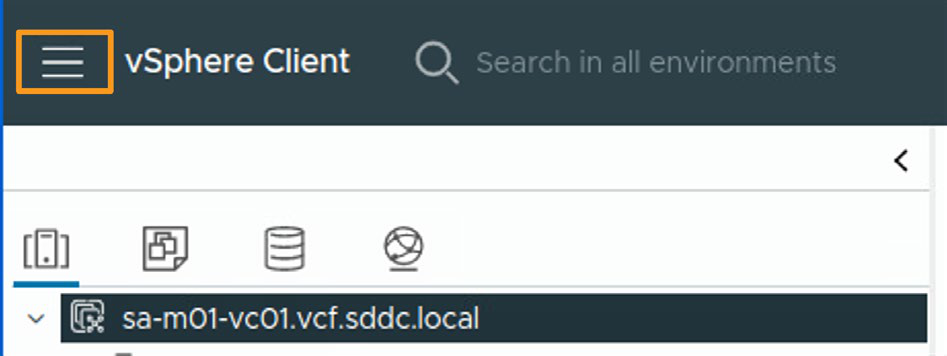
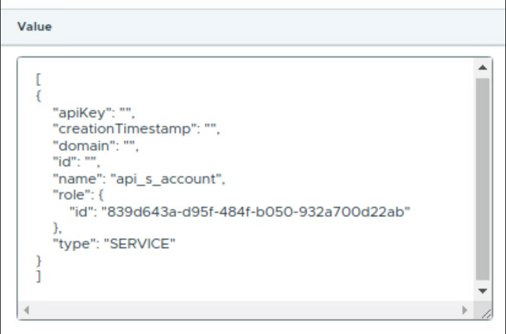
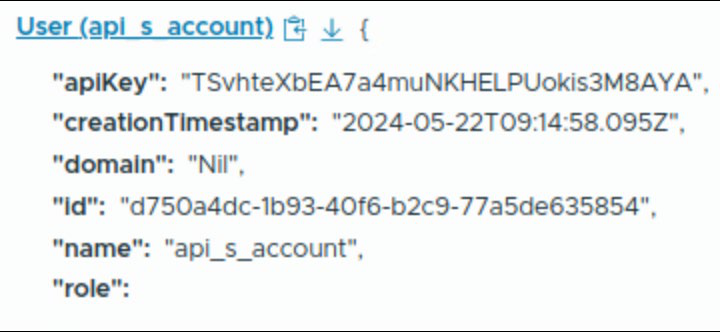
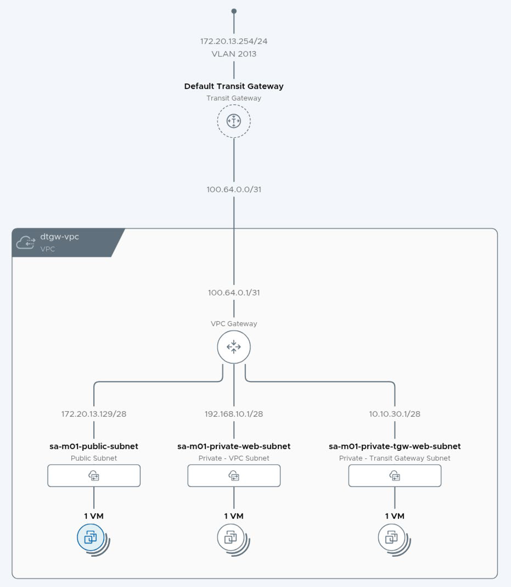
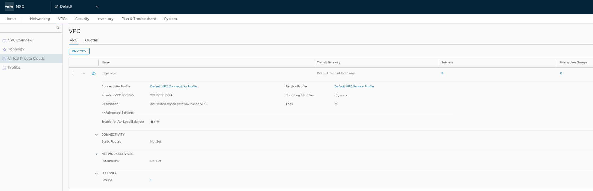
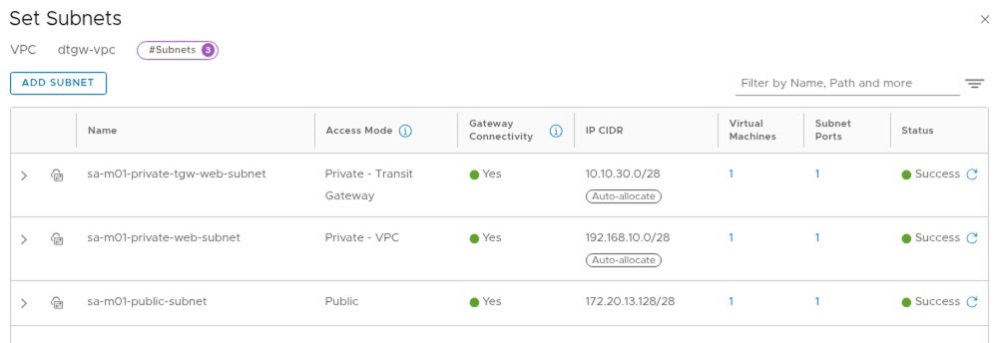
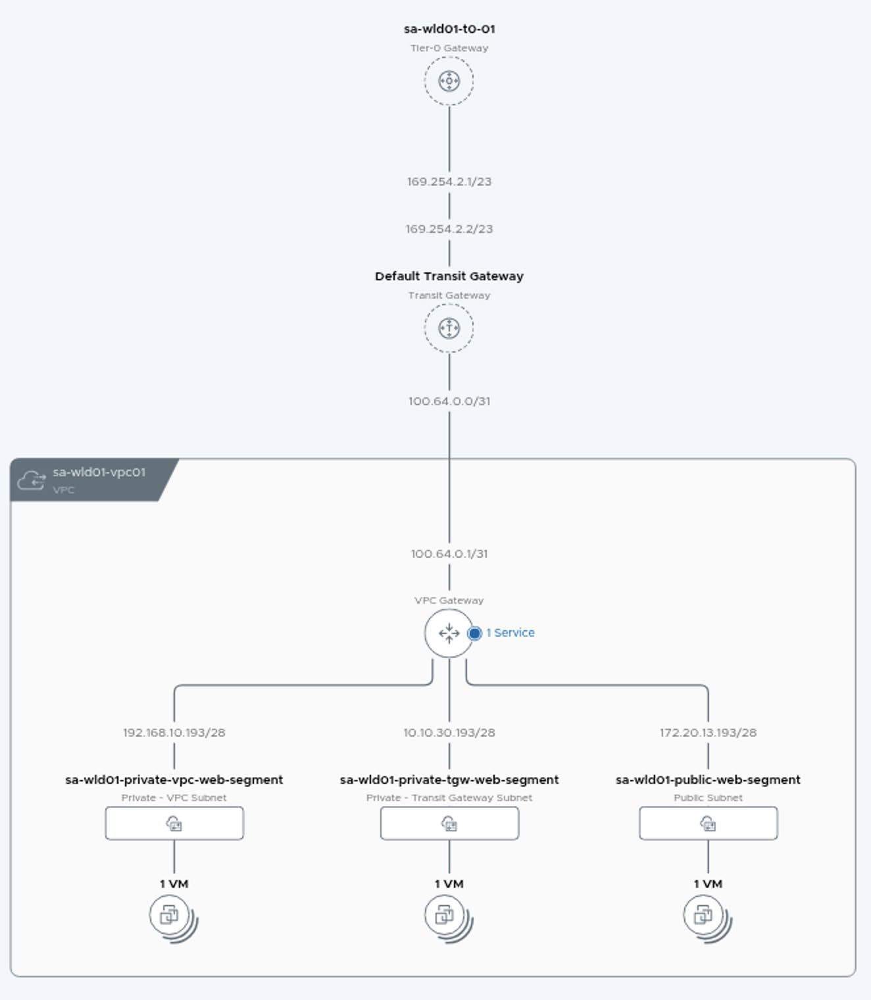
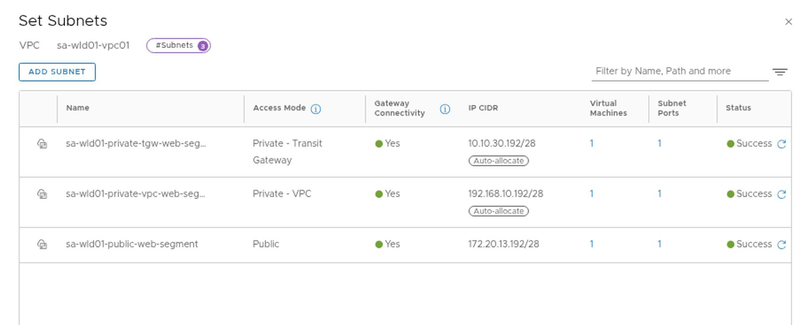
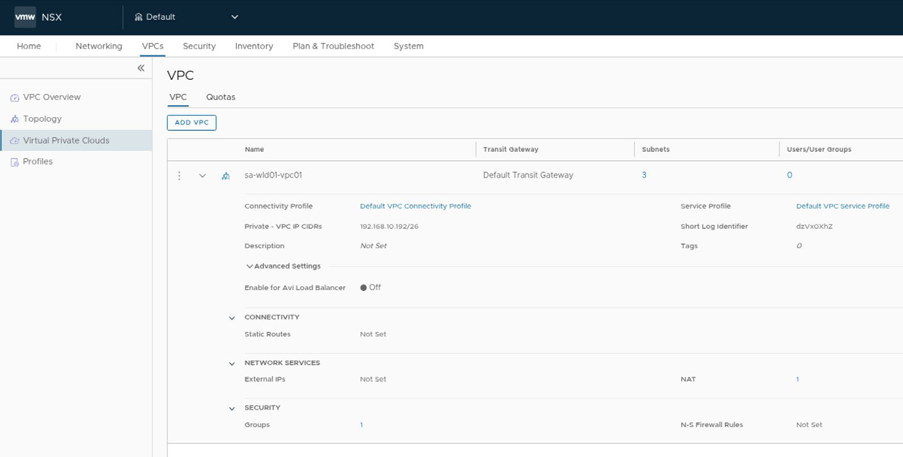

VMware Cloud Foundation: Build, Manage & Secure [v9.0]
Instructor-Led Course · Arabic Narrative · English Technical Terms
دَورة شامِلة مِن الصِّفر إِلى الاحتِراف لِـ VCF Administrators و Infrastructure Engineers
الَّذين يَبنون وَيُديرون وَيُؤَمِّنون بَيئات
VMware Cloud Foundation 9.0 · vSphere · NSX ·
vSAN · VCF Operations · VCF Automation.
مُقَدِّمة الدَّورة والأَهداف
VMware Cloud Foundation هي مَنصّة سَحابة خاصّة مُتَكامِلة تُوَفِّر
مُرونة السَّحابة العامّة مَع أَمان وَأَداء البِنية التَّحتيّة المَحَلّيّة.
في هذا الـ Module سَنَفهَم لِماذا نَدرُس وَما الَّذي سَنَتَعَلَّم.
🧠 Target Audience — الجُمهور المُستَهدَف
- VCF Administrators — مَن يُديرون بَيئات Cloud Foundation اليَوميّة.
- Infrastructure Engineers — المُهَندِسون المَسؤولون عَن البِنية التَّحتيّة.
- System Architects — مُصَمِّمو حُلول السَّحابة الخاصّة.
- vSphere Administrators — المُتَرَقّون مِن
vSphereالتَّقليدي إِلىVCF 9.0. - المُتَرشِّحون لِشَهادات
Broadcom VCFالمِهَنيّة.
أَهداف التَّعَلُّم — Learner Objectives
بَعد إِكمال هذِه الدَّورة، سَتَكون قادِراً على:
- وَصف مُكَوِّنات
VMware Cloud Foundationوَالبِنية الدَّاعِمة لَها. - تَخطيط وَتَحضير نَشر
VCF Fleetبِشَكل صَحيح. - شَرح نَموذج التَّرخيص
VCF Licensing Model. - تَنفيذ مَهام ما بَعد النَّشر
Post-Deployment Tasks. - وَصف
VCF Single Sign-OnوَنَماذجIdentity Broker. - إِدارة بَيانات الاعتِماد
CredentialsفيVMware Cloud Foundation. - نَشر وَإِدارة
Workload Domains. - تَكوين شَبَكات
NSXداخِلVMware Cloud Foundation. - فَهم وَتَنفيذ حُلول التَّخزين
vSAN/FC/iSCSI/NFS. - تَنفيذ مَهام الصِّيانة لِمَنصّة
VCF. - إِدارة الشَّهادات
CertificatesلِتِقنيّاتVCF. - إِدارة دَورة الحَياة
Life Cycle Management. - تَعريف الأَمان وَالامتِثال وَالمُرونة في
VCF. - شَرح مَسارات التَّرقية إِلى
VMware Cloud Foundation 9.0.
هَيكَل الدَّورة — Course Outline
| # | Module | المَوضوع |
|---|---|---|
01 | Course Introduction | مُقَدِّمة الدَّورة |
02 | VCF Private Cloud: Overview & Architecture | نَظرة عامّة وَالبِنية |
03 | VCF Private Cloud Deployment | نَشر السَّحابة الخاصّة |
04 | VCF Post-Deployment Tasks | مَهام ما بَعد النَّشر |
05 | VCF Fleet Management | إِدارة الأُسطول |
06 | VCF Workload Domain | نِطاقات العَمَل |
07 | VCF Networking | الشَّبَكات |
08 | VCF Storage Management | إِدارة التَّخزين |
09 | VCF Certificate Management | إِدارة الشَّهادات |
10 | VCF Life Cycle Management | إِدارة دَورة الحَياة |
11 | VCF Security | الأَمان |
12 | VCF Upgrade Paths | مَسارات التَّرقية |
نَظرة عامّة وَبِنية السَّحابة الخاصّة
كَـ Provider Administrator يَجِب أَن تَفهَم قُدرات VCF Private Cloud
لِتَحديث البِنية التَّحتيّة، وَتَحسين تَجرُبة المُطَوِّرين، وَتَعزيز الأَمان.
يَجِب أَيضاً فَهم البِنية وَالمُكَوِّنات لِتَصميم وَنَشر وَإِدارة سَحابة خاصّة تَلبّي مُتَطَلَّبات العَمَل.
مُقَدِّمة عَن VMware Cloud Foundation
ما هي VMware Cloud Foundation؟
VMware Cloud Foundation هي مَنصّة سَحابة خاصّة مُتَكامِلة تَجمَع بَين
خِدمات Compute وَStorage وَNetworking وَSecurity وَCloud Management
في حَل واحِد مُؤَتمَت وَقابِل لِلتَّوسيع.
يُظهِر الطَّبَقات: Compute / Storage / Networking / Management / Security
حالات الاستِخدام — Key Use Cases
VMware Cloud Foundation تُستَخدَم في السِّيناريوهات التَّالية:
- Private Cloud Modernization: تَحويل البِنية التَّحتيّة التَّقليديّة إِلى سَحابة خاصّة حَديثة.
- Multi-Cloud Strategy: بِناء أَساس مُتَّسِق لِلعَمَل عَبر بَيئات سَحابيّة مُتَعَدِّدة.
- Developer Self-Service: تَمكين المُطَوِّرين مِن طَلب المَوارِد ذاتِيّاً عَبر
VCF Automation. - AI/ML Infrastructure: تَوفير بِنية تَحتيّة لأَحمال عَمَل الذَّكاء الاصطِناعي.
- Kubernetes at Scale: تَشغيل
Tanzu KubernetesعَبرvSphere Supervisor. - Edge Computing: نَشر VCF في مَواقِع الحافّة لِأَحمال العَمَل المُوَزَّعة.
طَبَقة الحَوسَبة — Compute Layer
vSphere تُوَفِّر مَنصّة المُحاكاة الافتِراضيّة الأَساسيّة لِـ VMware Cloud Foundation:
- ESX: مَنصّة الحَوسَبة الَّتي تَقوم بِإِنشاء وَتَشغيل الـ
VMsوَأَحمال العَمَل الأُخرى. - vCenter: خِدمة الإِدارة المَركَزيّة لِعِدّة
ESX HostsوَتَوفيرvMotionوَvSphere HA.
طَبَقة التَّخزين — Storage Layer
VMware Cloud Foundation تُقَدِّم خَيارات تَخزين مَرِنة:
- vSAN OSA: Original Storage Architecture — تَخزين مُوَزَّع تَقليدي.
- vSAN ESA: Express Storage Architecture — بِنية تَخزين حَديثة عالية الأَداء.
- VMFS on FC: تَخزين Fibre Channel التَّقليدي.
- NFS: Network File System لِلتَّخزين المُشتَرَك.
- iSCSI: تَخزين شَبَكي بِبروتوكول iSCSI.
- vVols: Virtual Volumes لِإِدارة تَخزين مُتَقَدِّمة.
طَبَقة الشَّبَكات — Networking Layer
NSX تُوَفِّر شَبَكات مُعَرَّفة بِالبَرمَجيّات مَع:
- Distributed Switching: تَبديل مُوَزَّع عَبر كُل الـ Hosts.
- Distributed Routing: تَوجيه مُوَزَّع بِدون حاجة لِأَجهِزة فيزيائيّة.
- Micro-Segmentation: تَقسيم دَقيق لِلأَمان على مُستَوى الـ VM.
- Load Balancing: مُوازَنة أَحمال مُدمَجة عَبر
Avi Load Balancer. - VPN & NAT: اتِّصال آمِن وَتَرجَمة عَناوين.
طَبَقة العَمَليّات — Operations Layer
VCF Operations تُقَدِّم تَجرُبة مُوَحَّدة لِلمُدراء تَشمُل:
- Fleet Management: إِدارة مَركَزيّة لِكُل
VCF Instances. - Monitoring & Analytics: مُراقَبة الأَداء وَالسَّعة وَالصِّحّة.
- Life Cycle Management: تَحديثات وَتَرقيات مُؤَتمَتة.
- Compliance: فَحص الامتِثال وَالأَمان المُستَمِر.
طَبَقة الأَتمَتة — Automation Layer
VCF Automation تُمَكِّن مِن تَقديم Self-Service Private Cloud لِتَطبيقات
AI وَKubernetes وَVM-based:
- Service Catalog: قائِمة خِدمات مُخَصَّصة لِلمُستَخدِمين.
- Blueprints: قَوالِب لِنَشر بَيئات مُعَقَّدة بِنَقرة واحِدة.
- Infrastructure as Code: إِدارة البِنية التَّحتيّة كَكود.
- Multi-Cloud: دَعم السَّحابات المُتَعَدِّدة (AWS, Azure, GCP).
vSphere Supervisor — الخِدمات الأَساسيّة
vSphere Supervisor هو أَساس استِهلاك VCF وَيُمكِن تَفعيلُه أَثناء
إِنشاء Workload Domain أَو مُباشَرة في vCenter:
- Tanzu Kubernetes Grid (TKG): تَشغيل
Kubernetes Clustersأَصليّة. - VM Service: نَشر VMs عَبر
kubectlكَـ Kubernetes resources. - Storage Service: تَقديم تَخزين ثابِت لِلتَّطبيقات.
- Networking Service: شَبَكات مُخَصَّصة لِكُل Namespace.
حِماية VCF Private Cloud
مَع VMware Cloud Foundation، يُمكِنُك شِراء Add-ons لِلوُصول إِلى حُلول إِضافيّة:
- vDefend Firewall: جِدار ناري مُوَزَّع مَع
Advanced Threat Prevention. - vDefend NDR: اكتِشاف وَاستِجابة لِلتَّهديدات الشَّبَكيّة.
- Avi Load Balancer: مُوازَنة أَحمال مُتَقَدِّمة.
- Data Services Manager: إِدارة قَواعِد البَيانات كَخِدمة.
الأَمان في كُل طَبَقة — Security at Every Layer
| الطَّبَقة | Layer | مَيزات الأَمان |
|---|---|---|
| العَتاد | Hardware | TPM 2.0, Secure Boot, Hardware Root of Trust |
| الحَوسَبة | ESX | Lockdown Mode, Encrypted vMotion, VM Encryption |
| الشَّبَكات | NSX | Distributed Firewall, Micro-Segmentation, IDS/IPS |
| التَّخزين | vSAN | Data-at-Rest Encryption, Data-in-Transit Encryption |
| الهَوِيّة | Identity | SSO, RBAC, MFA, Identity Broker |
بِنية VCF Private Cloud
مُكَوِّنات VCF Private Cloud
نَشر VCF 9.0 يَتَضَمَّن عِدّة مُكَوِّنات رَئيسيّة:
| المُصطَلَح | Term | الوَصف |
|---|---|---|
| السَّحابة الخاصّة | VCF Private Cloud | جُزء مِن البِنية التَّحتيّة لِلسَّحابة الخاصّة لِلمُؤَسَّسة، يُدار بِنَشر مُؤَتمَت واحِد. |
| الأُسطول | VCF Fleet | بَيئة تُدار بِمَجموعة واحِدة مِن مُكَوِّنات الإِدارة (VCF Operations + VCF Automation). |
| المَثيل | VCF Instance | يَحتَوي على Management Domain واحِد وَاختِياريّاً Workload Domains. |
| نِطاق الإِدارة | Management Domain | يَتَضَمَّن كُل مُكَوِّنات البِنية التَّحتيّة لِنَشر وَإِدارة وَمُراقَبة الـ VCF Instance. |
| نِطاق العَمَل | Workload Domain | يُشَغِّل أَحمال عَمَل العُملاء مِثل الـ VMs أَو الـ Containers. |
VCF Private Cloud → VCF Fleet → VCF Instance → Management Domain + Workload Domains
الوَحدات البِنائيّة — Building Blocks
VCF Domains
الـ Domain هو بِنية مَنطِقيّة لِتَنظيم وَإِدارة المَوارِد في VCF Instance.
يَتَضَمَّن كُل VCF Instance على الأَقَل Management Domain واحِد،
وَاختِياريّاً واحِد أَو أَكثَر مِن Workload Domains.
VCF Instance
الـ VCF Instance يَشمُل Management Domain وَاختِياريّاً Workload Domains.
أَوّل vSphere Cluster داخِل الـ Management Domain يَستَضيف مُكَوِّنات الإِدارة.
VCF Fleet
الـ VCF Fleet هو بَيئة تُدار بِمَجموعة واحِدة مِن مُكَوِّنات الإِدارة عَلى مُستَوى الأُسطول
(VCF Operations وَVCF Automation).
يَحتَوي على واحِد أَو أَكثَر مِن VCF Instances.
VCF Private Cloud
VCF Private Cloud تُوَفِّر أَكثَر قُدرات الإِدارة وَالاستِهلاك تَقَدُّماً
لِلمَوارِد الأَساسيّة في الـ Software-Defined Data Center.
تَشمُل واحِداً أَو أَكثَر مِن VCF Fleets.
Fleet Management Components → Multiple VCF Instances → Domains → Clusters → Hosts
مُصطَلَحات إِضافيّة
| المُصطَلَح | Term | الوَصف |
|---|---|---|
| المَوقِع | Site | مَوقِع فيزيائي أَو مَركَز بَيانات حَيث يَتِم نَشر VCF. |
| المَنطِقة | Region | مَنطِقة جُغرافيّة تَتَضَمَّن واحِد أَو أَكثَر مِن مَراكِز البَيانات. |
| مَنطِقة التَّوفُّر | Availability Zone | تُمَثِّل نِطاق خَطأ (Fault Domain) في السَّحابة الخاصّة. |
| المُشرِف | vSphere Supervisor | أَساس استِهلاك VCF، يُمكِن تَفعيلُه أَثناء إِنشاء Workload Domain. |
أَدوار VCF Private Cloud
تَتَضَمَّن VCF Private Cloud عِدّة أَدوار إِداريّة:
- Provider Administrator: المَسؤول عَن نَشر وَإِدارة البِنية التَّحتيّة الكامِلة.
- VI Administrator: مَسؤول البِنية الافتِراضيّة لِنِطاق عَمَل مُحَدَّد.
- Cloud Consumer: المُستَهلِك الَّذي يَطلُب وَيَستَخدِم المَوارِد عَبر Self-Service.
- DevOps Engineer: المُهَندِس الَّذي يَستَخدِم APIs وَ
IaCلِنَشر التَّطبيقات.
قُدرات VCF Private Cloud
بِنية VCF التَّحتيَّة — Architecture Components
| Component | Role | الدَّور |
|---|---|---|
SDDC Manager | Lifecycle management, provisioning, configuration | إِدارة دَورة الحَياة والتَّوفير |
vCenter Server | Compute management, VM lifecycle | إِدارة الحَوسَبة |
NSX Manager | Network virtualization, micro-segmentation | افتِراضيَّة الشَّبَكة |
vSAN | Hyper-converged storage | التَّخزين المُتَكامِل |
VCF Operations | Monitoring, analytics, capacity planning | المُراقَبة والتَّحليلات |
VCF Automation | Self-service, blueprints, orchestration | الخِدمة الذَّاتيَّة |
Workload Domains — نِطاقات العَمَل
مُكَوِّنات الشَّبَكة — Network Architecture
🧠 Network Design Principles
- Management Network: vMotion, vSAN, Management traffic — VLAN-backed
- Overlay Network: NSX GENEVE tunnels لِلـ VMs
- Uplink Network: North-South عَبر Edge Nodes
- 2 Physical NICs minimum: لِكُلّ ESXi host (pNIC redundancy)
- VDS (vSphere Distributed Switch): مَطلوب لِكُلّ domain
Knowledge Check — اختِبار المَعرِفة
Q1. Which component provides the core virtualization platform in VMware Cloud Foundation?
Correct: B
vSphere (ESX + vCenter) provides the core compute virtualization platform for VCF.
Q2. What is the relationship between a VCF Fleet and VCF Instances?
Correct: C
A VCF Fleet is managed by a single set of fleet-level management components (VCF Operations and VCF Automation) and contains one or more VCF Instances.
Q3. What is the first vSphere cluster in a Management Domain used for?
Correct: A
The first vSphere cluster of a Management Domain hosts the management components necessary to deploy, manage, and monitor the VCF instance.
Q4. Which VCF component enables developers to consume IaaS and platform services through self-service?
Correct: D
VCF Automation delivers a Self-service Private Cloud for AI/K8s/VM-based applications.
Q5. What does an Availability Zone represent in VCF Private Cloud?
Correct: B
An Availability Zone represents a fault domain in the private cloud. AZs can be in the same data center (separate racks) or different data centers.
Q6. Which security feature is provided at the networking layer in VCF?
Correct: C
NSX provides Distributed Firewall and Micro-Segmentation at the networking layer for zero-trust security.
نَشر السَّحابة الخاصّة
كَـ VI Administrator أَو Provider Administrator يَجِب أَن تَفهَم
اعتِبارات النَّشر وَعَمَليّة النَّشر لِتَصميم وَنَشر VCF Fleet بِشَكل فَعّال.
هذا الـ Module يَأخُذك مِن التَّخطيط إِلى النَّشر الكامِل.
اعتِبارات النَّشر — Deployment Considerations
بِنية VCF Private Cloud — المُصطَلَحات
| المُصطَلَح | Term | الوَصف |
|---|---|---|
| السَّحابة الخاصّة | VCF Private Cloud | جُزء مِن البِنية السَّحابيّة لِلمُؤَسَّسة، يُدار بِنَشر مُؤَتمَت واحِد. |
| الأُسطول | VCF Fleet | بَيئة تُدار بِمَجموعة واحِدة مِن VCF Operations + VCF Automation. |
| المَثيل | VCF Instance | يَحتَوي على Management Domain + اختِياريّاً Workload Domains. |
| المَوقِع | Site | مَوقِع فيزيائي أَو Datacenter لِنَشر VCF. |
| المَنطِقة | Region | مَنطِقة جُغرافيّة (Latency < 150ms بَين Regions). |
| مَنطِقة التَّوفُّر | Availability Zone | Fault Domain — يُمكِن أَن تَكون في نَفس الـ DC أَو DCs مُختَلِفة. |
خَيارات نَشر VCF Fleet
VCF تُقَدِّم التَّصاميم التَّالية لِلنَّشر:
🧠 Fleet Deployment Design Blueprints
- VCF Fleet in a Single Site: مَوقِع واحِد مَع
Availability Zoneواحِدة — يَعتَمِد علىvSphere HAلِلحِماية. - Multiple Sites in a Single Region: عِدّة مَواقِع في مَنطِقة واحِدة مَع
Stretched Clustersلِلتَّوفُّر العالي. - Multiple Sites Across Multiple Regions: مَواقِع في مَناطِق مُختَلِفة مَع
Disaster Recovery. - Multiple Sites in Single Region + Additional Regions: تَصميم هَجين يَجمَع بَين المَناطِق المُتَعَدِّدة.
Single Site | Multi-Site Single Region | Multi-Region | Hybrid
نَماذج نَشر Appliances
يُمكِنُك اختِيار نَشر NSX وَVCF Operations وَVCF Automation كَـ:
| المُكَوِّن | Simple Model | High Availability Model |
|---|---|---|
vCenter | One appliance | One appliance |
ESX Hosts | Minimum 3 hosts | Minimum 4 hosts |
SDDC Manager | One appliance | One appliance |
NSX Manager | One appliance + 1 VIP | Three appliances + 1 VIP + Anti-Affinity |
VCF Automation | One node + 1 extra IP | Three nodes + 1 extra IP |
VCF Operations | Primary + Collector + Fleet Mgmt | Primary + Replica + Data + Collector + Fleet Mgmt |
نَماذج التَّخزين المَدعومة — Supported Storage Models
| Storage Type | Management Domain (Primary) | Workload Domain |
|---|---|---|
vSAN OSA | Principal + Supplemental | Principal + Supplemental |
vSAN ESA | Principal + Supplemental | Principal + Supplemental |
vSAN Storage Clusters | Supplemental only | Principal + Supplemental |
VMFS on FC | Principal + Supplemental | Principal + Supplemental |
NFS v3 | Principal + Supplemental | Principal + Supplemental |
NFS v4.1 | Supplemental only | Supplemental only |
iSCSI | Supplemental only | Supplemental only |
NVMe | Supplemental only | Supplemental only |
التَّخطيط وَالتَّحضير — Planning & Preparation
تَحضير البِنية التَّحتيّة لِنَشر VCF
قَبل نَشر المَنصّة الجَديدة، يَجِب تَحضير البِنية التَّحتيّة المَطلوبة:
- اِستَخدِم
Planning and Preparation Workbookلِجَمع كُل المَعلومات المَطلوبة. - راجِع
Design Guideلِلمُتَطَلَّبات وَالتَّوصيات الخاصّة بِكُل مُكَوِّن. - راجِع
Prerequisite Checklistفي الـ Workbook. - حَمِّل
VCF Installer ApplianceمِنBroadcom Support Portal.
Planning and Preparation Workbook
الـ Workbook هو دَليل مُنَظَّم يَتَضَمَّن:
- Prerequisite Checklist: مُلَخَّص مُتَطَلَّبات البِنية التَّحتيّة.
- Management Domain Sizing Inputs: مُدخَلات حَجم الـ Management Domain.
- Deploy Management Domain Input: كُل القِيَم المَطلوبة أَثناء النَّشر.
عَمَليّة النَّشر — Deployment Process
VCF Fleet Deployment: المُتَطَلَّبات المُسبَقة
تَحضير ESX Hosts
قَبل البِدء بِالتَّثبيت، نَفِّذ التَّكوين الأَساسي على كُل Host:
- تَثبيت
ESX 9.0على كُل Host. - تَكوين
VLAN IDلِشَبَكة الـ ESX Management. - تَكوين
VLAN IDلِشَبَكة الـ VM Network. - تَكوين
NTPلِلتَّزامُن الزَّمَني.
VCF Installer — نَظرة عامّة
VCF Installer يُستَخدَم لِنَشر أَو تَوسيع VCF Fleet:
- يُبَسِّط النَّشر — لا حاجة لِتَثبيت كُل مُكَوِّن على حِدة.
- يُقَلِّل المَخاطِر بِاستِخدام
Validated Topology. - يُوَفِّر
Deployment Wizardسَهل المُتابَعة. - يَقبَل إِدخال يَدوي أَو ملف
JSON Specificationمُعَبَّأ مُسبَقاً. - يُنَفِّذ
Pre-deployment Validationقَبل النَّشر. - يَدعَم تَحويل
vSphere Instancesمَوجودة إِلىVCF Instance.
Review Prerequisites | Depot Settings & Binary Management | Launch Deployment
نَشر VCF Installer Appliance
يُمكِن نَشر الـ VCF Installer بِطَريقَتَين:
- خارِج البِنية التَّحتيّة: على أَي جِهاز مُتَّصِل بِالشَّبَكة — يُمكِن استِخدامُه لِنَشر عِدّة VCF platforms.
- على أَحَد ESX Hosts: الَّذي سَيَكون جُزءاً مِن الـ Management Domain — يُستَخدَم لِنَشر VCF platform واحِدة فَقَط.
خُطوات مَعالِج النَّشر — Deployment Wizard Steps
- General Information: اسم الـ Instance، Management Domain name، نَموذج النَّشر (Simple/HA)، DNS، NTP.
- VCF Operations Config: FQDN وَpasswords لِلـ Operations + Fleet Management + Collector.
- VCF Automation Config: FQDN، IP addresses (2 لِلـ Simple، 4 لِلـ HA)، CIDR لِلاتِّصال الداخِلي.
- vCenter Config: FQDN، Datacenter name، Cluster name، Domain name.
- NSX Manager Config: Appliance size (default: medium)، FQDN، passwords لِـ admin/root/audit.
- Storage Config: نَوع التَّخزين (vSAN ESA/OSA، NFS، أَو FC)، Failures to Tolerate.
- Add Hosts: إِضافة ESX Hosts (حَتّى 64 host) وَالتَّحَقُّق مِن الـ fingerprints.
- Host Networks: VLAN IDs، CIDRs، MTU، Gateways لِكُل شَبَكة.
- Distributed Switch: عَدَد الـ NICs يُحَدِّد الـ Profile المُتاح.
- SDDC Manager: تَكوين الـ FQDN وَالتَّفاصيل.
- Review & Validate: مُراجَعة التَّكوين وَتَنفيذ الـ Validation.
- Deploy: بِدء عَمَليّة النَّشر وَمُراقَبة التَّقَدُّم.
خَيارات VDS Configuration Profiles
| عَدَد NICs | Profile | الوَصف |
|---|---|---|
2 NICs | Default (Unified) | VDS واحِد لِكُل أَنواع الـ Traffic — سَهل الإِدارة لكِن بِدون فَصل. |
4 NICs | Storage Traffic Separation | VDS مُنفَصِل لِـ vSAN — أَداء أَفضَل لِلتَّخزين. |
4 NICs | NSX Traffic Separation | VDS مُنفَصِل لِـ NSX Overlay — أَداء أَفضَل لِلشَّبَكات. |
6 NICs | Storage + NSX Separation | ثَلاث VDS مُنفَصِلة — أَقصى أَداء وَلكِن أَكثَر تَعقيداً. |
ما يُنَفِّذُه VCF Installer أَثناء النَّشر
النَّشر بِاستِخدام JSON Specification
بَدَلاً مِن المَعالِج، يُمكِن استِخدام ملف JSON مُعَبَّأ مُسبَقاً لِأَتمَتة النَّشر:
- يُمكِن حِفظ ملف JSON مِن المَعالِج لِإِعادة استِخدامِه.
- مُفيد لِنَشر عِدّة
VCF Instancesبِنَفس التَّكوين. - يَدعَم الأَتمَتة وَ
Infrastructure as Code.
مَراحِل النَّشر — Deployment Phases
| Phase | Activities | الأَنشِطة |
|---|---|---|
Phase 1 | Planning: sizing, network design, IP allocation, BOM validation | التَّخطيط: التَّحجيم والشَّبَكة |
Phase 2 | Preparation: rack, cable, firmware, BIOS, network switches | الإِعداد: التَّركيب الفيزيائي |
Phase 3 | Deployment: Cloud Builder or Quick Installer | النَّشر: مُثَبِّت VCF |
Phase 4 | Post-deployment: SSO, licensing, backup, monitoring | ما بَعد النَّشر |
طُرُق النَّشر — Deployment Methods
Quick Installer — المُثَبِّت السَّريع
🧠 Quick Installer Key Points
- يُنشَر Management Domain كامِل في عَمَليَّة واحِدة
- يَحتاج 4 ESXi hosts minimum
- يَنشُر: SDDC Manager + vCenter + NSX + vSAN cluster
- يَستَخدِم JSON parameter file لِلتَّكوين
- مُدَّة النَّشر: ~2-4 ساعات
- Pre-check validation قَبل بَدء النَّشر
مُتَطَلَّبات الشَّبَكة — Network Requirements
| Network | VLAN | Purpose | الغَرَض |
|---|---|---|---|
Management | Required | ESXi mgmt, vCenter, SDDC Manager | إِدارة المُكَوِّنات |
vMotion | Required | Live migration traffic | حَرَكة النَّقل الحَي |
vSAN | Required | Storage cluster traffic | حَرَكة التَّخزين |
NSX Overlay (TEP) | Required | GENEVE tunnel endpoints | نِقاط نِهاية الأَنفاق |
Uplink | Optional | North-South via Edge Nodes | حَرَكة شَمال-جَنوب |
Knowledge Check — اختِبار المَعرِفة
Q7. What is the minimum number of ESX hosts required for a High Availability deployment model?
Correct: B
The High Availability deployment model requires a minimum of 4 ESX hosts.
Q8. Which storage type is recommended as principal storage for the Management Domain?
Correct: C
vSAN is the recommended principal storage for the Management Domain because it is fully integrated with the VCF software stack.
Q9. What happens to the ESX Management and VM Network port groups during VCF deployment?
Correct: A
Both port groups (ESX Management and VM Network) configured on the VSS are migrated to a VDS during VCF deployment.
Q10. How many IP addresses are needed for VCF Automation in a three-node HA deployment?
Correct: D
A three-node HA deployment requires 4 IP addresses: one for each node plus a fourth used during failure/maintenance of one of the nodes.
Q11. Which VDS configuration profile provides maximum storage performance with 4 NICs per host?
Correct: B
Storage Traffic Separation creates a dedicated VDS for vSAN traffic, providing maximum bandwidth and performance for storage with 4 NICs.
مَهام ما بَعد النَّشر
بَعد النَّشر النَّاجِح، يَجِب تَعَلُّم التَّنَقُّل في واجِهات VCF المُختَلِفة
وَنَشر مُكَوِّنات إِدارة إِضافيّة لِضَمان الأَداء الأَمثَل وَالأَمان.
واجِهات المُستَخدِم — VCF User Interfaces
الواجِهات الثَّلاث الرَّئيسيّة
لِإِدارة بَيئة VMware Cloud Foundation، تَستَخدِم ثَلاث واجِهات رَئيسيّة:
| الواجِهة | Interface | الغَرَض |
|---|---|---|
| عَمَليّات VCF | VCF Operations UI | مَركَز مُوَحَّد لِمُراقَبة صِحّة البِنية التَّحتيّة، السَّعة، الأَمان، وَدَورة الحَياة. |
| أَتمَتة VCF | VCF Automation UI | بَوّابة لِإِدارة المَشاريع، Namespaces، السِّياسات، المُستَخدِمين. |
| عَميل vSphere | vSphere Client UI | واجِهة لِإِدارة vCenter inventory: Hosts, Clusters, VMs, Storage, Networking. |
VCF Operations — نَظرة عامّة
VCF Operations هي مَنصّة إِدارة العَمَليّات الَّتي تُوَفِّر:
- Application-to-Storage Visibility: رُؤية كامِلة مِن التَّطبيق إِلى التَّخزين.
- Fleet Management: عَرض وَإِدارة كُل الـ VCF Fleet في مَكان واحِد.
- Simplified Operations: تَجرُبة مُبَسَّطة لِلبَيئات المُعَقَّدة.
Overview Tab: VCF Deployment | Config Drifts | Certificates | Alerts | Capacity | Compliance
أَقسام VCF Operations الرَّئيسيّة
| القِسم | Section | الوَظيفة |
|---|---|---|
| المَخزون | Inventory | عَرض الكائِنات: Domains, VMs, Datastores, Networks. |
| عَمَليّات البِنية | Infrastructure Operations | مُراقَبة VMs, Storage, Network, Licenses. |
| عَمَليّات العَمَل | Workload Operations | مُراقَبة التَّطبيقات وَالخِدمات عَبر Telegraf agent. |
| إِدارة الأُسطول | Fleet Management | SSO, Certificates, Passwords, Tags, Config Drifts, Lifecycle. |
| السَّعة | Capacity | مُراقَبة الاستِخدام، تَوَقُّع النُّمُو، تَوصيات التَّحسين. |
| الأَمان | Security | Compliance monitoring, Audit events, Benchmarks. |
| التَّراخيص | License Management | إِدارة تَسجيلات وَتَراخيص VCF. |
| مَركَز المُطَوِّرين | Developer Center | APIs, CLI, Management Pack Builder. |
VCF Automation — السَّحابة الخاصّة بِالخِدمة الذَّاتيّة
VCF Automation تُمَكِّن مِن تَقديم تَجرُبة سَحابة حَقيقيّة:
- Self-Service Portal: المُستَهلِكون يَطلُبون المَوارِد ذاتِيّاً.
- Infrastructure as Code: تَطوير تَكراري عَبر
IaC. - Governance: سِياسات وَرِقابة على كُل المَوارِد.
- Kubernetes + AI: نَشر
KubernetesوَPrivate AIبِنَقرة واحِدة. - Multi-Cloud: دَعم بَيئات سَحابيّة مُتَعَدِّدة.
vCenter — الإِدارة المَركَزيّة
vCenter هو نُقطة الإِدارة المَركَزيّة لِـ ESX Hosts وَVMs:
- يُوَجِّه أَعمال الـ VMs وَالـ Hosts.
- يَعمَل على
Linux-based Appliance. - يُمَكِّن مِن تَجميع وَإِدارة مَوارِد عِدّة Hosts.
- يُوَفِّر
vMotion,HA,DRS, وَميزات مُتَقَدِّمة.
نَشر مُكَوِّنات إِدارة إِضافيّة
VCF Operations for Networks
VCF Operations for Networks (المَعروف سابِقاً بِـ Aria Operations for Networks)
يُوَفِّر رُؤية شامِلة لِلشَّبَكات:
- تَحليل حَرَكة الشَّبَكة وَاكتِشاف المَسارات.
- تَخطيط
Micro-SegmentationوَFirewall Rules. - مُراقَبة أَداء الشَّبَكة وَاستِكشاف الأَخطاء.
VCF Operations for Logs
VCF Operations for Logs يُوَفِّر إِدارة مَركَزيّة لِلسِّجِلّات:
- تَجميع Logs مِن كُل مُكَوِّنات VCF.
- بَحث وَتَحليل مُتَقَدِّم لِلسِّجِلّات.
- تَنبيهات مَبنيّة على أَنماط مُحَدَّدة.
VCF Identity Broker
VCF Identity Broker يُوَفِّر مِصادَقة مُوَحَّدة:
- رَبط
Identity Providersخارِجيّة (OIDC, SAML, LDAP). - تَسجيل دُخول واحِد
SSOعَبر كُل مُكَوِّنات VCF. - إِدارة مَركَزيّة لِلمُستَخدِمين وَالأَدوار.
مَهام ما بَعد النَّشر — Post-Deployment Checklist
| # | Task | المَهَمَّة | Priority |
|---|---|---|---|
| 1 | Configure SSO Identity Source (LDAP/AD) | تَكوين مَصدَر الهُوِيَّة | حَرِج |
| 2 | Register & Activate Licenses | تَسجيل التَّراخيص | حَرِج |
| 3 | Configure NTP on all components | تَكوين NTP | عالي |
| 4 | Configure Backup (SDDC Manager, vCenter, NSX) | تَكوين النُّسَخ الاحتِياطيَّة | حَرِج |
| 5 | Deploy VCF Operations (monitoring) | نَشر المُراقَبة | عالي |
| 6 | Deploy VCF Operations for Logs | نَشر السِّجِلّات | عالي |
| 7 | Configure Certificate Authority | تَكوين CA | مُتَوَسِّط |
| 8 | Assign User Permissions (RBAC) | صَلاحيَّات المُستَخدِمين | مُتَوَسِّط |
تَكوين SSO — Single Sign-On Configuration
🧠 SSO Key Concepts
- VCF SSO: يُوَحِّد المُصادَقة عَبر vCenter, NSX, SDDC Manager, Operations
- Identity Source: Active Directory / OpenLDAP / Local
- Roles: Admin, Operator, Viewer — بِمُستَويات مُختَلِفة
- Service Accounts: لِلأَتمَتة والتَّكامُل
- Best Practice: فَصل حِسابات الإِدارة عَن الحِسابات الشَّخصيَّة
VCF Operations for Logs — السِّجِلّات
| Feature | Description | الوَصف |
|---|---|---|
Log Collection | Centralized syslog from all VCF components | جَمع مَركَزي لِلسِّجِلّات |
Search & Filter | Full-text search with field-level filters | بَحث نَصّي كامِل |
Alerts | Trigger alerts on log patterns | تَنبيهات بِأَنماط |
Forwarding | Forward to external SIEM (Splunk, ELK) | إِعادة تَوجيه |
Dashboards | Visual log analytics | لَوحات تَحليليَّة |
Knowledge Check — اختِبار المَعرِفة
Q12. Which VCF Operations section is responsible for SSO configuration, certificate management, and lifecycle management?
Correct: A
Fleet Management handles Identity & Access (SSO), Certificates, Passwords, Configuration Drifts, and Lifecycle management.
Q13. What does VCF Automation primarily enable for cloud consumers?
Correct: C
VCF Automation delivers a self-service private cloud for developers and DevOps teams to provision VMs, containers, and Kubernetes clusters.
Q14. Which tool is used in VCF Operations Workload Operations to monitor applications inside guest operating systems?
Correct: D
The Telegraf agent is deployed to target VMs to monitor applications and services running in guest operating systems.
Q15. What is VCF Operations for Networks primarily used for?
Correct: B
VCF Operations for Networks provides network visibility, traffic analysis, micro-segmentation planning, and troubleshooting capabilities.
إِدارة الأُسطول
إِدارة VCF Fleet بِشَكل فَعّال تَشمَل التَّراخيص، الـ Single Sign-On،
التَّحَكُّم في الوُصول، وَإِدارة كَلِمات المُرور.
هذا الـ Module يُغَطّي كُل هذِه الجَوانِب بِالتَّفصيل.
نَظرة عامّة على التَّراخيص — Licensing Overview
التَّغييرات في نَموذج التَّراخيص مَع VCF 9.0
بِدءاً مِن VCF 9.0، تَم تَغيير نَموذج التَّراخيص بِشَكل جَذري:
- لَم تَعُد
License Keys(25 حَرف) مُستَخدَمة. - اِنتَقَل النِّظام إِلى
Subscription-based License Files. VCF Operationsهو المَسؤول عَن إِدارة التَّراخيص مَركَزيّاً.- يَجِب تَسجيل
VCF OperationsفيVCF Business Services Console.
🧠 VCF 9 Unified Licensing Model
- Centralized Management: كُل التَّراخيص تُدار مِن
VCF Operationsفي مَكان واحِد. - Single Secure License File: ملف ترخيص واحِد يَحتَوي على كُل الحُقوق.
- Capacity Pooling: دَمج سَعات مُتَعَدِّدة في ترخيص واحِد لِكُل مُنتَج.
- Primary Licenses: فَقَط
ESX Hostsتَستَهلِك السَّعة — يُعَيَّن الترخيص لِـ vCenter. - vSAN Licensing: مَبني على السَّعة التَّخزينيّة (TiB) في كُل الـ vSAN Clusters.
سَير عَمَل التَّرخيص — Licensing Workflow
- ثَبِّت أَو رَقِّ
VCF Operationsإِلى الإِصدار 9.0. - سَجِّل
VCF OperationsفيVCF Business Services Console(Connected أَو Disconnected mode). - حَدِّد التَّخصيصات
Allocationsفي الـ Business Console. - حَمِّل ملف الترخيص (Disconnected) أَو يَتِم تِلقائيّاً (Connected).
- عَيِّن التَّراخيص لِـ
vCenter Instances. - الـ
ESX Hostsتُرَخَّص تِلقائيّاً عِند إِضافَتها لِـ vCenter.
| Registration Mode | الوَصف | متى تُستَخدَم |
|---|---|---|
Connected Mode | اتِّصال مُباشِر — تَبادُل تِلقائي لِلاستِخدام وَالتَّراخيص. | بَيئات لَها وُصول لِلإِنترنِت. |
Disconnected Mode | تَبادُل يَدوي لِملَفّات التَّسجيل وَالترخيص. | بَيئات مَعزولة (Air-Gapped). |
VCF Business Services Console
VCF Business Services Console (vcf.broadcom.com) هي بَوّابة لِإِدارة التَّراخيص:
- إِنشاء وَإِدارة الـ Tenants وَالمُستَخدِمين.
- تَقسيم التَّراخيص الافتِراضيّة إِلى عِدّة تَراخيص.
- مُراقَبة الامتِثال وَالاستِخدام.
- إِنشاء ملفّات الترخيص لِلتَّحميل.
تَسجيل الدُّخول المُوَحَّد — VCF Single Sign-On
مَفهوم SSO في VCF
VCF Single Sign-On يُمَكِّن المُستَخدِمين مِن الوُصول لِعِدّة تَطبيقات
بِمَجموعة اعتِماد واحِدة:
- Seamless Login: تَسجيل دُخول سَلِس عَبر كُل مُكَوِّنات VCF.
- Fleet-wide Identity: هَويّة مُوَحَّدة تُدار مِن
VCF Operations. - Centralized Management: إِدارة مَركَزيّة لِلمُستَخدِمين وَالمَجموعات.
VCF Identity Broker — نَماذج النَّشر
VCF Identity Broker هو المُكَوِّن المَسؤول عَن تَنفيذ SSO:
| Deployment Model | الوَصف | الاستِخدام |
|---|---|---|
Embedded | مُدمَج في Management Domain vCenter — لا حاجة لِـ Appliance مُنفَصِل. | بَيئات بَسيطة أَو VCF Instance واحِد. |
Appliance | يُنشَر كَـ Appliance مُستَقِل عَبر Lifecycle Management. | بَيئات كَبيرة أَو عِدّة VCF Instances (حَتّى 5). |
مُزَوِّدو الهَويّة المَدعومون — Supported Identity Providers
OktaPing IdentityMicrosoft Entra IDMicrosoft ADFSGeneric SAML 2.0AD/LDAPOpenLDAP
بُروتوكولات المِصادَقة — Authentication Protocols
| Protocol | الوَصف |
|---|---|
SAML 2.0 | بُروتوكول XML-based لِتَبادُل بَيانات المِصادَقة وَالتَّفويض. |
OIDC | بُروتوكول حَديث مَبني على OAuth 2.0 لِلمِصادَقة. |
تَزويد المُستَخدِمين — User Provisioning
| Method | الوَصف |
|---|---|
SCIM 2.0 | تَزامُن تِلقائي لِلمُستَخدِمين وَالمَجموعات مِن الـ IdP. |
JIT (Just-In-Time) | إِنشاء المُستَخدِم عِند أَوّل تَسجيل دُخول — لا حاجة لِتَزامُن مُسبَق. |
AD/LDAP Sync | مُزامَنة دَوريّة مِن Active Directory أَو LDAP. |
خُطوات تَكوين SSO
- اِختَر
VCF Instanceمِن صَفحة SSO Overview. - اِختَر Deployment Mode (
EmbeddedأَوAppliance). - كَوِّن الـ
Identity Provider(OIDC/SAML/LDAP). - زامِن المُستَخدِمين وَالمَجموعات.
- وَصِّل
vCenterوَNSXبِالـ Identity Broker. - عَيِّن الأَدوار لِلمُستَخدِمين في كُل مُكَوِّن.
- فَعِّل SSO لِـ
VCF OperationsوَVCF Automation.
التَّحَكُّم في الوُصول — User Access Control (RBAC)
مَفهوم RBAC في VCF Operations
Role-Based Access Control (RBAC) يَحصُر الوُصول بِناءً على دَور الشَّخص في المُؤَسَّسة.
يَتَكَوَّن مِن ثَلاثة عَناصِر:
| العُنصُر | Component | الوَصف |
|---|---|---|
| المُستَخدِم | User/Group | الشَّخص أَو المَجموعة الَّتي تَحتاج وُصول. |
| الدَّور | Role | مَجموعة صَلاحيّات — يُحَدِّد ماذا يُمكِن أَن يَفعَل المُستَخدِم. |
| النِّطاق | Scope | يُحَدِّد على أَيّ كائِنات يُمكِن لِلمُستَخدِم العَمَل. |
الأَدوار المُعَرَّفة مُسبَقاً — Predefined Roles
| Role | الوَصف |
|---|---|
Administrator | كُل الصَّلاحيّات بِما فيها إِدارة المُستَخدِمين وَالـ Cluster. |
PowerUser | كُل صَلاحيّات Admin ما عَدا إِدارة المُستَخدِمين وَالـ Cluster. |
PowerUserMinusRemediation | مِثل PowerUser لكِن بِدون صَلاحيّات الـ Remediation. |
ContentAdmin | إِدارة المُحتَوى: Dashboards, Reports, Views. |
GeneralUser | عَرض البَيانات وَالتَّقارير — بِدون تَعديل. |
ReadOnly | وُصول لِلقِراءة فَقَط. |
أَنواع المُستَخدِمين
- Local Users: مُستَخدِمون مُنشَؤون مَحَلّيّاً في
VCF Operations. - vCenter Users: مُستَخدِمون يَأتون مِن vCenter — يَجِب أَن يَكون لَهُم role في vCenter.
- External Source Users: مِن LDAP, SSO, أَو مَصادِر خارِجيّة أُخرى.
تَكوين Scope
Scope يُحَدِّد نِطاق الكائِنات المَرئيّة لِلمُستَخدِم:
- All Objects: النِّطاق الافتِراضي — وُصول لِكُل الكائِنات.
- Custom Scope: تَحديد كائِنات مُعَيَّنة (Clusters, Hosts, VMs).
- المُستَخدِمون الَّذين يُكَوِّنون SSO يَجِب أَن يَكون لَهُم
All Objectsscope.
إِدارة كَلِمات المُرور — VCF Password Management
نَظرة عامّة
VCF Operations يُتيح تَحديث وَمُعالَجة كَلِمات المُرور لِكُل مُكَوِّنات VCF
مِن مَكان واحِد:
| المُكَوِّنات المُدارة مَركَزيّاً | مُكَوِّنات Instance/Domain |
|---|---|
Fleet Management | ESX Hosts |
VCF Automation | NSX Manager |
VCF Identity Broker | SDDC Manager (Backup only) |
VCF Operations | vCenter |
VCF Operations for Logs | — |
VCF Operations for Networks | — |
تَحديث كَلِمات المُرور — Password Update
مُعالَجة كَلِمات المُرور — Password Remediation
خَيار REMEDIATE يُستَخدَم لِتَحديث كَلِمة المُرور في SDDC Manager
لِتَتَطابَق مَع كَلِمة المُرور الفِعليّة على الكائِن:
- بَعد انتِهاء صَلاحيّة كَلِمة المُرور، أَعِد تَعيينها يَدويّاً في المُنتَج.
- ثُمَّ اِستَخدِم
REMEDIATEلِتَحديث السِّجِل في VCF Operations. - الـ Remediation تَضمَن أَنّ
VCF Workflowsتَستَخدِم كَلِمة المُرور الصَّحيحة.
تَنبيهات انتِهاء كَلِمات المُرور
- VCF Management Components: لا يُوجَد تاريخ انتِهاء — لا تَنبيهات.
- VCF Instance Components: تَنبيهات تُطلَق بِناءً على تاريخ الانتِهاء.
- يُمكِن تَصفيّة التَّنبيهات:
Alert Type: Administrative→Alert Subtype: Password.
Password Management Best Practices
🧠 أَفضَل المُمارَسات
- اِستَخدِم كَلِمات مُرور مُوَحَّدة عِند النَّشر تَتَوافَق مَع مُتَطَلَّبات كُل المُنتَجات.
- غَيِّر كَلِمات المُرور بِشَكل دَوري — خاصّة عِند مُغادَرة مُدير.
- اِستَخدِم
SDDC Manager APIلِأَتمَتة عَمَليّات إِدارة كَلِمات المُرور. - راقِب تَنبيهات الانتِهاء وَعالِجها قَبل أَن تُعَطِّل العَمَليّات.
إِدارة الأُسطول — VCF Fleet Management
| Capability | Description | الوَصف |
|---|---|---|
SSO Integration | Unified auth across all VCF instances | مُصادَقة مُوَحَّدة |
Password Rotation | Automated credential management | تَدوير كَلِمات المُرور |
RBAC | Role-based access per component | صَلاحيَّات بِالأَدوار |
Identity Sources | LDAP, AD, Local users | مَصادِر الهُوِيَّة |
vCenter Groups | Linked mode across domains | مَجموعات vCenter |
إِدارة كَلِمات المُرور — Password Management
SDDC Manager Roles — الأَدوار
| Role | Permissions | الصَّلاحيَّات |
|---|---|---|
ADMIN | Full access — all operations | وُصول كامِل |
OPERATOR | View + limited operations (no delete/create domain) | عَرض + عَمَليّات مَحدودة |
VIEWER | Read-only access | قِراءة فَقَط |
Knowledge Check — اختِبار المَعرِفة
Q16. Starting with VCF 9.0, how are licenses managed?
Correct: C
VCF 9.0 uses subscription-based license files managed centrally through VCF Operations, replacing the old 25-character license keys.
Q17. Which components does VCF Single Sign-On NOT cover?
Correct: B
VCF SSO covers all components except SDDC Manager and ESX Hosts, which maintain separate local accounts.
Q18. How many VCF Instances can a single Identity Broker Appliance support?
Correct: D
One Identity Broker Appliance can be connected to a maximum of 5 VCF Instances.
Q19. What is the purpose of the REMEDIATE option in VCF Password Management?
Correct: A
REMEDIATE updates the password in SDDC Manager to match what was manually reset on the component, ensuring VCF workflows use the correct credentials.
Q20. Which VCF Operations role has all privileges EXCEPT user management and cluster management?
Correct: C
PowerUser has all Administrator privileges except user management and cluster management capabilities.
نِطاقات العَمَل
Workload Domains تُمَثِّل مَجموعات مَنطِقيّة مِن مَوارِد الحَوسَبة وَالتَّخزين وَالشَّبَكات.
هذا الـ Module يُغَطّي أَنواع الـ Domains وَكَيفيّة إِنشائها وَإِدارَتها.
نَظرة عامّة — Workload Domain Overview
أَنواع الـ Domains في VCF Fleet
| النَّوع | Domain Type | الوَصف |
|---|---|---|
| النِّطاق الإِداري الأَوَّلي | Initial Management Domain | أَوّل Domain يُنشَر — يَستَضيف كُل الـ Fleet-level appliances وَمُكَوِّنات الإِدارة. |
| نِطاق إِداري إِضافي | Additional Management Domain | يُنشَر مَع كُل VCF Instance إِضافي — يَستَضيف مُكَوِّنات الإِدارة فَقَط. |
| نِطاق العَمَل | Workload Domain | لِتَشغيل الـ Workloads — لا يَستَضيف Appliances إِداريّة. |
Initial Management Domain (Fleet Appliances) | Additional Management Domain | Workload Domains
الـ vSphere Cluster في Workload Domain
يَدعَم VCF إِنشاء عِدّة Clusters في كُل Workload Domain:
🧠 فَوائِد Multiple Clusters
- Licensing Compliance: فَصل التَّراخيص حَسَب الاستِخدام.
- Storage Options: كُل Cluster يُمكِن أَن يَستَخدِم نَوع تَخزين مُختَلِف.
- Sizing: تَحجيم مُناسِب لِكُل حِمل عَمَل.
- Segmentation: فَصل أَمني بَين أَحمال العَمَل.
- Availability: تَوفُّر أَعلى بِتَوزيع الأَحمال.
- Scalability: تَوسُّع أُفُقي بِسُهولة.
خَيارات التَّخزين الرَّئيسي لِلـ Workload Domain
vSAN(ESA أَو OSA)NFSVMFS on Fibre ChannelvSphere Virtual Volumes (vVols)
تَحضير النَّشر — Deployment Preparation
اعتِبارات التَّصميم
| المَجال | Design Area | الاعتِبارات |
|---|---|---|
| الحَوسَبة | vSphere Design | ESX Hosts مُتَطابِقة الأَجهِزة، vCenter sizing، HA design. |
| الشَّبَكات | Network Design | VLANs, VDS profiles, NSX (Shared vs Dedicated), Traffic Separation. |
| التَّخزين | Storage Design | Principal storage type, supplemental storage options. |
NSX Manager — مُشتَرَك أَو مُخَصَّص
| Option | الوَصف | متى تُستَخدَم |
|---|---|---|
Shared NSX Manager | Workload Domains تُشارِك NSX المَوجود في Management Domain. | بَيئات صَغيرة — تَوفير مَوارِد. |
Dedicated NSX Manager | كُل Workload Domain لَه NSX Manager مُستَقِل. | مُتَطَلَّبات أَمنيّة أَو تَقنيّة مُختَلِفة. |
VDS Configuration Profiles لِلـ Workload Domains
| Profile | pNICs Required | الوَصف |
|---|---|---|
Single/Default VDS | 2+ | VDS واحِد لِكُل Traffic — بَسيط وَسَهل. |
Storage Separation | 4 | VDS مُخَصَّص لِـ Storage traffic. |
Workload/NSX Separation | 4 | VDS مُخَصَّص لِـ NSX Overlay traffic. |
Custom | 4+ | تَخصيص كامِل لِلـ Switch design. |
Network Pools وَتَجهيز الـ Hosts
Network Pools — مَفهوم وَإِنشاء
Network Pool هو نِطاق عَناوين IP لِخِدمات مُحَدَّدة يُعَيِّنها VCF لِلـ Hosts:
vMotion— (مَطلوب)vSAN— (مَطلوب إِذا استُخدِم vSAN)iSCSI— (اختِياري)NFS— (اختِياري)
إِنشاء Network Pool
- أَدخِل اسم الـ Network Pool.
- اِختَر أَنواع الشَّبَكات.
- أَدخِل
VLAN ID(1–4094). - أَدخِل
MTU(1500–9216). - أَدخِل Subnet, Mask, Gateway.
- حَدِّد نِطاقات IP المُضَمَّنة.
تَجهيز ESX Hosts — Host Commissioning
Host Commissioning هي عَمَليّة إِضافة Host لِمَخزون VCF:
طُرُق التَّجهيز
- Manual: مِن
vSphere Client → Global Inventory → Hosts → Commission Hosts. - Bulk (JSON): اِستِخدام ملف JSON template لِتَجهيز حَتّى 50 host دَفعة واحِدة.
إِنشاء وَإِدارة Workload Domains
خُطوات إِنشاء Workload Domain (مِن VCF Operations UI)
- Review Prerequisites: مُراجَعة المُتَطَلَّبات المُسبَقة.
- General Information: اسم الـ Domain، SSO domain، vSphere Supervisor.
- vCenter: FQDN وَpassword لِـ vCenter الجَديد.
- Cluster Image: اختِيار الـ Image لِلـ Cluster.
- NSX Manager: Shared أَو Dedicated، FQDN، Size.
- Storage: نَوع التَّخزين وَالإِعدادات.
- ESX Hosts: اختِيار الـ Hosts (نَفس نَوع التَّخزين).
- Distributed Switch: تَكوين VDS.
- vSphere Supervisor: تَكوين Supervisor (اختِياري).
- Review & Deploy: مُراجَعة وَنَشر.
vCenter Groups (بَديل Enhanced Linked Mode)
في VCF 9.0، تَم استِبدال Enhanced Linked Mode (ELM) بِـ vCenter Groups:
- يُوَفِّر عَرض مُوَحَّد لِعِدّة vCenter instances مِن
VCF Operations. - المُتَطَلَّبات: vCenter 9.0+، تَسجيل في VCF Operations، VCF SSO مُكَوَّن.
- يَتِم الرَّبط مِن:
Infrastructure Operations → Configurations → vCenter Linking.
تَوسيع Workload Domain
| العَمَليّة | Operation | المُتَطَلَّبات |
|---|---|---|
| إِضافة Hosts | Add Hosts to Cluster | نَفس نَوع التَّخزين وَNetwork Pool. |
| إِضافة Cluster | Add Cluster to Domain | نَفس Lifecycle Management option. يُمكِن استِخدام storage وَnetwork pool مُختَلِف. |
إِنشاء Workload Domain — المُتَطَلَّبات
| Prerequisite | Details | التَّفاصيل |
|---|---|---|
Commissioned Hosts | Minimum 3 hosts (4 recommended) in Free Pool | مُضيفات في المَجموعة الحُرَّة |
Network Pool | VLAN ranges for vMotion, vSAN, TEP | نِطاقات VLAN |
DNS/NTP | Forward + Reverse DNS for all components | تَسجيلات DNS |
Licenses | Valid VCF licenses for new vCenter + NSX | تَراخيص صالحة |
سَير عَمَل إِنشاء Domain — Creation Workflow
- SDDC Manager →
Inventory → Workload Domains → + ADD - اختِيار Storage Type: vSAN / NFS / VMFS
- تَحديد المُضيفات مِن المَجموعة الحُرَّة
- تَكوين الشَّبَكة (VDS, NSX Edge, TEP Pool)
- تَكوين Cluster (DRS, HA, vSAN policies)
- مُراجَعة وإِطلاق
Host Commissioning — تَفويض المُضيفات
🧠 Commission Process
- Single Host: مِن SDDC Manager UI — إِدخال IP/FQDN + credentials
- Bulk Commission: JSON file بِقائِمة hosts
- Validation: SDDC Manager يَفحَص: DNS, NTP, ESXi version, network connectivity
- Network Pool: يَجِب تَعيين pool لِلمُضيف
- Free Pool: بَعد التَّفويض يَنتَقِل لِلمَجموعة الحُرَّة
Knowledge Check — اختِبار المَعرِفة
Q21. What is hosted on the Initial Management Domain that is NOT hosted on a Workload Domain?
Correct: B
The Initial Management Domain hosts all fleet-level management appliances. Workload Domains only run workloads.
Q22. What replaced Enhanced Linked Mode (ELM) in VCF 9.0 for managing multiple vCenter instances?
Correct: D
VCF 9.0 replaces Enhanced Linked Mode with vCenter Groups, managed through VCF Operations console.
Q23. How many hosts can be bulk-commissioned at one time using a JSON template?
Correct: A
You can bulk-commission a maximum of 50 hosts at a time using a JSON template file.
Q24. When adding a new cluster to a workload domain, which statement is TRUE?
Correct: C
Clusters within a workload domain can use different storage types, network pools, and hardware profiles. They only need the same lifecycle management option.
Q25. Which network types are assigned from a Network Pool to hosts in a workload domain?
Correct: B
Network Pools assign IP addresses for vMotion (required), vSAN (required if vSAN is used), iSCSI, and NFS networks.
شَبَكات VCF
🚧 هذا الـ Module قَيد الإِعداد — سَيَتِم إِضافَتُه في المَرحَلة التَّالية.
مُكَوِّنات الشَّبَكة — VCF Networking Components
| Component | Function | الوَظيفة |
|---|---|---|
VDS | vSphere Distributed Switch — L2 connectivity | اتِّصاليَّة الطَّبَقة 2 |
NSX Manager | Control plane for network virtualization | مُستَوى التَّحَكُّم |
T0 Gateway | Provider/external routing (BGP/Static) | التَّوجيه الخارِجي |
T1 Gateway | Tenant/internal routing | التَّوجيه الدَّاخِلي |
Edge Cluster | Stateful services (NAT, FW, LB) | الخِدمات ذات الحالة |
Segments | L2 network segments (overlay or VLAN) | مَقاطِع الشَّبَكة |
VPC (Virtual Private Cloud) — السَّحابة الخاصَّة
أَنواع Subnets — Subnet Types
| Subnet Type | Connectivity | الاتِّصاليَّة |
|---|---|---|
Private VPC Subnet | Intra-VPC only — internal IP space | داخِلي فَقَط |
Transit Gateway Subnet | Connects VPC to other VPCs/external | رَبط VPCs |
Public Subnet | External reachable via NAT/routing | قابِل لِلوُصول الخارِجي |
NSX Edge Cluster Deployment — نَشر Edge Cluster
🧠 Edge Cluster Deployment Steps
- تَحديد network design: الـ VLANs لِلـ Uplinks والـ TEP
- إِنشاء Edge Transport Nodes (2 minimum لِلـ HA)
- تَكوين Uplink Profiles
- تَكوين T0 Gateway مَع BGP/Static routing
- رَبط Edge Cluster بِالـ T0 Gateway
- اختِبار الاتِّصال N-S
إِدارة التَّخزين
فَهم خَيارات التَّخزين المُختَلِفة في VCF أَمر حاسِم لِتَصميم وَإِدارة
البِنية التَّحتيّة الافتِراضيّة. يُغَطّي هذا الـ Module: Fibre Channel, iSCSI, NFS, وَvSAN.
VMFS مَع Fibre Channel
مَفهوم VMFS
VMFS (Virtual Machine File System) هو نِظام ملفّات clustered يَسمَح لِعِدّة
ESX Hosts بِالوُصول المُتَزامِن لِنَفس التَّخزين:
- يَدعَم
Fibre ChannelوَiSCSI. - يُخَزِّن VMs, Templates, ISO files.
- الحَجم الأَقصى: 64 TB لِكُل datastore.
مُكَوِّنات Fibre Channel SAN
| المُكَوِّن | Component | الوَظيفة |
|---|---|---|
| مُهايِئ المُضيف | HBA (Host Bus Adapter) | يُرسِل أَوامِر SCSI عَبر شَبَكة FC. |
| مُبَدِّل FC | FC Switch (Fabric) | يَربِط الـ Hosts بِالتَّخزين. |
| مُعالِج التَّخزين | Storage Processor | يُقَدِّم LUNs لِلـ Hosts. |
| المُعَرِّف الفَريد | WWN (World Wide Name) | عُنوان فَريد لِكُل جِهاز في الـ SAN. |
Zoning وَLUN Masking
- Zoning: عَزل حَرَكة FC على مُستَوى الـ Switch — يُحَدِّد أَي Ports تَتَواصَل.
- LUN Masking: تَحَكُّم في الوُصول على مُستَوى الـ Storage Array — يُحَدِّد أَي LUNs مَرئيّة لِكُل Host.
Multipathing
Multipathing يُوَفِّر عِدّة مَسارات فِيزيائيّة/مَنطِقيّة لِجِهاز التَّخزين:
- Load Balancing: تَوزيع الحِمل عَبر المَسارات.
- Failover: التَّبديل التِّلقائي عِند فَشَل مَسار.
- الافتِراضي: مَسار نَشِط واحِد — التَّبديل عِند الفَشَل.
مُتَطَلَّبات FC في VCF
VMFS مَع iSCSI
مَفهوم iSCSI
iSCSI يُرسِل أَوامِر SCSI عَبر شَبَكة IP/Ethernet:
| المُكَوِّن | Component | الوَظيفة |
|---|---|---|
| المُبادِر | iSCSI Initiator | عَميل على ESX Host يُرسِل الأَوامِر. |
| الهَدَف | iSCSI Target | جِهاز التَّخزين الَّذي يَستَجيب. |
| المُعَرِّف | IQN | اسم فَريد لِكُل initiator وَtarget. |
| المَنفَذ | TCP Port 3260 | المَنفَذ الافتِراضي لِاتِّصال iSCSI. |
أَمان iSCSI — CHAP
- Unidirectional CHAP: الـ Target يُصادِق الـ Initiator فَقَط.
- Mutual CHAP: مِصادَقة في الاتِّجاهَين — أَكثَر أَماناً.
Multipathing مَع Software iSCSI
- كُل NIC يُعَيَّن لِـ VMkernel Adapter مُنفَصِل.
- يُوَفِّر أَداء أَفضَل وَredundancy.
- يَجِب فَصل شَبَكة iSCSI فِيزيائيّاً (أَو بِـ VLAN) عَن الشَّبَكات الأُخرى.
تَخزين NFS
مَفهوم NFS
NFS — بُروتوكول مُشارَكة ملفّات حَيث يَصِل ESX Host لِمُستَودَع مُشتَرَك عَبر Ethernet:
- الـ NFS Export يُنشَأ على جِهاز
NAS. - الـ ESX Host يَتَّصِل عَبر
VMkernel Adapter. - يُمكِن استِخدامُه كَـ Principal أَو Supplemental storage.
NFS v3 vs NFS v4.1
| الميزة | NFS v3 | NFS v4.1 |
|---|---|---|
| Principal Storage | ✅ نَعَم (Management + Workload) | ❌ Supplemental فَقَط |
| Multipathing | ❌ لا | ✅ مَدعوم (Session Trunking) |
| Security | AUTH_SYS (IP-based) | Kerberos (krb5, krb5i, krb5p) |
| Locking | Advisory (NLM) | Built-in mandatory locking |
تَخزين vSAN
نَظرة عامّة على vSAN
vSAN يُجَمِّع الأَقراص المَحَلّيّة مِن ESX Hosts في datastore مُشتَرَك واحِد — مُتَكامِل بِالكامِل مَع VCF:
- لا حاجة لِـ SAN أَو NAS خارِجي — التَّخزين يَأتي مِن الـ Hosts نَفسها.
- مُدمَج في
ESX Kernel— لا Appliances إِضافيّة. - يُدار عَبر
Storage Policiesبَدَلاً مِن provisioning يَدوي.
vSAN ESA vs vSAN OSA
| الميزة | vSAN OSA (Original) | vSAN ESA (Express) |
|---|---|---|
| تَصميم الأَقراص | Disk Groups: Cache + Capacity tiers | Storage Pool واحِد — كُل الأَقراص مُتَساوية. |
| نَوع الأَقراص | SSD (cache) + SSD/HDD (capacity) | NVMe فَقَط — أَداء عالي جِدّاً. |
| Compression | Post-process | Real-time inline compression. |
| Erasure Coding | RAID-5/6 مَع قُيود | RAID-5/6 بِكَفاءة أَعلى — يَعمَل مَع Stretched Clusters. |
| Snapshots | Legacy redo-log snapshots | Native snapshots بِدون تَأثير على الأَداء. |
Storage Policies — سِياسات التَّخزين
vSAN Storage Policies تُحَدِّد كَيف يُخَزَّن كُل VM:
- Failures to Tolerate (FTT): عَدَد حالات الفَشَل المَسموح بِها (0, 1, 2, 3).
- Failure Tolerance Method: RAID-1 (Mirroring) أَو RAID-5/6 (Erasure Coding).
- Stripe Width: عَدَد الأَقراص لِتَوزيع البَيانات.
- Force Provisioning: السَّماح بِنَشر VM حَتّى لَو الـ Policy غَير مُستَوفاة.
🧠 قَواعِد FTT وَعَدَد الـ Hosts
| FTT | Minimum Hosts (RAID-1) | Minimum Hosts (RAID-5/6) |
|---|---|---|
| 0 | 3 hosts | N/A |
| 1 | 3 hosts | 4 hosts (RAID-5) |
| 2 | 5 hosts | 6 hosts (RAID-6) |
| 3 | 7 hosts | N/A |
عَمَليّات صِيانة vSAN
- Maintenance Mode: وَضع Host في الصِّيانة — يُمكِن اختِيار: Ensure accessibility, Full data migration, أَو No data migration.
- Datastore Maintenance Mode: قَبل حَذف أَو فَك datastore — يَنقُل البَيانات تِلقائيّاً.
إِدارة التَّخزين — vSAN Management
| Feature | Description | الوَصف |
|---|---|---|
Disk Groups | Cache + Capacity tiers per host | مَجموعات الأَقراص |
Storage Policies | FTT, RAID, Stripe Width, Encryption | سِياسات التَّخزين |
vSAN Health | Automated health checks | فُحوصات الصِّحَّة |
vSAN ESA | Express Storage Architecture (NVMe only) | بِنية التَّخزين السَّريعة |
Deduplication | Space savings via dedup + compression | تَوفير المَساحة |
سِياسات التَّخزين — VM Storage Policies
vSAN Proactive Tests — اختِبارات استِباقيَّة
🧠 Test Types
- Proactive Rebalance Test: فَحص تَوزيع البَيانات عَبر الأَقراص
- Data Migration Precheck: قَبل إِخراج host مِن الكَتلة
- Network Performance Test: اختِبار bandwidth بَين hosts
- Health Check: فَحص شامِل لِلصِّحَّة
Knowledge Check — اختِبار المَعرِفة
Q31. What is the maximum size of a single VMFS datastore?
Correct: D
A VMFS datastore can be expanded nondisruptively up to 64 TB maximum size.
Q32. Which storage types are supported ONLY as supplemental storage in VCF?
Correct: B
iSCSI, NFS v4.1, and NVMe over Fabrics can only be used as supplemental storage in VCF.
Q33. What type of disks does vSAN ESA exclusively require?
Correct: A
vSAN ESA is designed exclusively for NVMe hardware, offering superior performance compared to OSA.
Q34. How many hosts minimum are required for vSAN with FTT=2 using RAID-1 mirroring?
Correct: C
FTT=2 with RAID-1 mirroring requires a minimum of 5 hosts to maintain 3 copies of data.
Q35. What advantage does NFS v4.1 have over NFS v3 in terms of connectivity?
Correct: B
NFS v4.1 supports Session Trunking (multipathing) for improved performance, while NFS v3 does not.
إِدارة الشَّهادات
شَهادات SSL تُؤَمِّن الاتِّصال بَين مُكَوِّنات VCF.
يَجِب فَهم كَيفيّة إِدارتها وَتَجديدها لِلامتِثال لِلسِّياسات المُؤَسَّسيّة.
نَظرة عامّة على الشَّهادات الرَّقميّة — Digital Certificate Overview
أَهَمّيّة الشَّهادات في VCF
- التَّحَقُّق مِن هَويّة العَميل وَالخادِم.
- تَشفير البَيانات المُرسَلة بَين المُكَوِّنات.
- ضَمان سَلامة البَيانات مِن التَّلاعُب.
مُكَوِّنات PKI الأَساسيّة
| المُكَوِّن | Component | الوَظيفة |
|---|---|---|
| سُلطة الشَّهادات | Certificate Authority (CA) | تُصدِر وَتُوَقِّع الشَّهادات. |
| الشَّهادة الرَّقميّة | Digital Certificate | تَربِط المِفتاح العام بِهَويّة مُحَدَّدة. |
| طَلَب التَّوقيع | CSR (Certificate Signing Request) | طَلَب رَسمي لِلحُصول على شَهادة مِن CA. |
| المِفتاح العام | Public Key | يُستَخدَم لِلتَّشفير — مُتاح لِلجَميع. |
| المِفتاح الخاص | Private Key | يُستَخدَم لِفَك التَّشفير — سِرّي. |
مُحتَوى CSR
- Common Name: الـ FQDN لِلخادِم.
- Organization: الاسم القانوني لِلمُؤَسَّسة.
- Organizational Unit: القِسم.
- Country, State, City: المَوقِع الجُغرافي.
- Key Algorithm & Size: نَوع وَحَجم المِفتاح (RSA 2048+).
إِدارة الشَّهادات — Managing Certificates
خَيارات CA في VCF
| CA Type | الوَصف | مُلاحَظات |
|---|---|---|
VMware CA (VMCA) | مُدمَج في vCenter — يُصدِر شَهادات لِـ vSphere, ESX, SDDC Manager, NSX. | الافتِراضي عِند النَّشر — Self-signed. |
Microsoft CA | يَستَخدِم AD Certificate Services — شَهادات مَوثوقة مُؤَسَّسيّاً. | يَتَطَلَّب Web Enrollment + Certificate Template. |
OpenSSL CA | مُدمَج في VCF Operations — لِإِنشاء شَهادات بِدون بِنية CA خارِجيّة. | مُناسِب لِلبَيئات المُبَسَّطة. |
Third-Party CA | CAs خارِجيّة (DigiCert, Let's Encrypt, إلخ). | يَتَطَلَّب رَفع الشَّهادة يَدويّاً. |
حالات الشَّهادة — Certificate States
| الحالة | State | الإِجراء |
|---|---|---|
| نَشِطة | Active | لا إِجراء مَطلوب. |
| تَنتَهي خِلال 30 يَوم | Expiring in < 30 days | جَدِّد فَوراً. |
| تَنتَهي خِلال 30-60 يَوم | Expiring in 30-60 days | خَطِّط لِلتَّجديد. |
| مُنتَهية | Expired | اِستَبدِل فَوراً — قَد تَتَعَطَّل الخِدمات. |
التَّجديد التِّلقائي — Auto-Renewal
- يُمكِن تَفعيلُه لِكُل الـ Appliances بِما فيها ESX Hosts.
- يَدعَم شَهادات
VMCA,Microsoft CA, وَWeb Server. - يُجَدِّد تِلقائيّاً قَبل الانتِهاء.
استِبدال الشَّهادات — Certificate Replacement
تُستَبدَل الشَّهادات في الحالات التَّالية:
- انتَهت صَلاحيّتها أَو قارَبَت على الانتِهاء.
- تَم إِلغاؤها (
Revoked). - الانتِقال مِن
VMware CAإِلىEnterprise CA. - تَغيير مَعلومات المُؤَسَّسة في الشَّهادة.
إِدارة الشَّهادات — Certificate Management
| Certificate Type | Component | المُكَوِّن |
|---|---|---|
Self-Signed | Default for SDDC Manager, vCenter | الافتِراضي |
CA-Signed | Enterprise CA (Microsoft, OpenSSL) | CA مُؤَسَّسي |
VMCA | vSphere built-in CA | CA مُدمَج |
سَير عَمَل تَدوير الشَّهادات — Certificate Rotation Workflow
🧠 Certificate Best Practices
- تَدوير SDDC Manager أَوَّلاً قَبل باقي المُكَوِّنات
- مُراقَبة تاريخ انتِهاء الشَّهادات (VCF Operations يُنَبِّه)
- استَخدام
SHA-256أَو أَعلى لِلتَّوقيع - تَخزين المَفاتيح الخاصَّة بِشَكل آمِن
Knowledge Check — اختِبار المَعرِفة
Q36. What is the default certificate authority used when VCF is first deployed?
Correct: B
When VCF is deployed, the environment uses certificates signed by VMware Certificate Authority (VMCA), which is built into vCenter.
Q37. Which VCF Operations section is used to view and manage certificates?
Correct: C
Certificates are managed under Fleet Management → Certificates in VCF Operations.
إِدارة دَورة الحَياة
إِدارة دَورة حَياة VCF Fleet تَشمَل تَحديث المُكَوِّنات الإِداريّة
وَمُكَوِّنات VCF الأَساسيّة. يَجِب فَهم الأَدوات وَالتَّرتيب الصَّحيح لِلتَّحديثات.
إِدارة المُكَوِّنات الإِداريّة — Fleet Management LCM
مُكَوِّنات VCF Fleet
| المُستَوى | Level | المُكَوِّنات |
|---|---|---|
| مُكَوِّنات الأُسطول | Fleet-Level | VCF Operations, VCF Automation, Fleet Management, Ops for Logs, Ops for Networks, Identity Broker. |
| مُكَوِّنات VCF | VCF Instance-Level | SDDC Manager, vCenter, ESX, NSX Manager. |
أَدوات إِدارة دَورة الحَياة
| الأَداة | Tool | المَسؤوليّة |
|---|---|---|
| إِدارة الأُسطول | VCF Operations Fleet Management | LCM لِلمُكَوِّنات الإِداريّة (Operations, Automation, Logs, Networks, Identity Broker). |
| مُدير SDDC | SDDC Manager | LCM لِمُكَوِّنات VCF الأَساسيّة (vCenter, ESX, NSX). |
إِعداد الـ Depot — مُستَودَع البَرامِج
| Depot Type | الوَصف | المُتَطَلَّبات |
|---|---|---|
Online Depot | اتِّصال مُباشِر بِـ Broadcom Support Portal. | Internet access + Download Token. |
Offline Depot | مُستَودَع مَحَلّي لِلبَيئات المَعزولة. | VCF Download Tool + Web Server مَحَلّي. |
إِنشاء Download Token
- سَجِّل الدُّخول لِـ
Broadcom Support Portal. - اِختَر
VMware Cloud Foundation. - مِن
My Dashboard → Quick Links → Generate Download Token. - اِختَر الـ
Site IDوَاضغَطGenerate Token. - اِنسَخ الـ Token لِاستِخدامِه في VCF Operations.
إِدارة مُكَوِّنات VCF — LCM with SDDC Manager
تَرتيب التَّرقية — Upgrade Sequence
🧠 تَرتيب التَّرقية الإِلزامي
- رَقِّ Management Workload Domain أَوَّلاً (دائِماً).
- ثُمَّ رَقِّ VI Workload Domains.
- داخِل كُل Domain: SDDC Manager → vCenter → NSX → ESX.
مُتَطَلَّبات قَبل التَّرقية
vSphere Lifecycle Manager (vLCM) Images
SDDC Manager يَستَخدِم vLCM Images لِتَرقية ESX:
- ESX Base Image: التَّحديث الأَساسي لِلبَرنامِج.
- Components: VIBs لِبَرامِج VMware وَالطَّرَف الثَّالِث.
- Vendor Add-ons: بَرامِج تَشغيل الأَجهِزة.
- Firmware: تَحديثات firmware (اختِياري).
إِدارة دَورة الحَياة — Lifecycle Management
| Operation | Scope | النِّطاق |
|---|---|---|
Patch | Security fix, bug fix (non-disruptive) | إِصلاح أَمني |
Update | Minor version (new features) | تَحديث صَغير |
Upgrade | Major version (architecture changes) | تَرقية رَئيسيَّة |
Drift Remediation | Fix configuration drift | إِصلاح الانحِراف |
عَمَليَّة التَّرقية — Upgrade Workflow
Bundle Management — إِدارة الحُزَم
🧠 Bundle Key Points
- Online: SDDC Manager يَتَّصِل بِـ VMware Depot مُباشَرة
- Offline: تَحميل Bundles يَدَويّاً ورَفعها
- Pre-check: فَحص التَّوافُق قَبل التَّطبيق
- BOM Validation: التَّحَقُّق مِن تَوافُق المُكَوِّنات
- Rollback: مَحدود — خُطَّة النُّسخة الاحتِياطيَّة مَطلوبة
APIs و SoS Commands — أَدَوات المُستَوى المُتَقَدِّم
| Tool | Use Case | الاستِخدام |
|---|---|---|
SDDC Manager API | Automate LCM operations, query status | أَتمَتة العَمَليّات |
SoS Utility | Health checks, log bundles, diagnostics | فُحوصات وتَشخيص |
PowerVCF | PowerShell automation module | أَتمَتة PowerShell |
Knowledge Check — اختِبار المَعرِفة
Q38. Which tool is responsible for lifecycle management of fleet-level management components?
Correct: A
VCF Operations Fleet Management handles LCM for fleet-level components (Operations, Automation, Logs, Networks, Identity Broker).
Q39. Which domain must always be upgraded FIRST?
Correct: D
You must always upgrade the Management Workload Domain first, then VI Workload Domains.
Q40. In ESX 9.0, which packages are now embedded in the base ESX image?
Correct: B
In ESX 9.0, vSphere HA (FDM) and NSX packages are embedded into the base ESX image, simplifying lifecycle management.
أَمان VCF
🚧 هذا الـ Module قَيد الإِعداد — سَيَتِم إِضافَتُه في المَرحَلة التَّالية.
أَمن VCF — Security Architecture
| Layer | Controls | الضَّوابِط |
|---|---|---|
Identity | SSO, MFA, RBAC, Service Accounts | الهُوِيَّة والوُصول |
Network | NSX DFW, Micro-segmentation, IDS/IPS | أَمن الشَّبَكة |
Data | vSAN Encryption, VM Encryption, Key Management | تَشفير البَيانات |
Compute | vTPM, Secure Boot, VBS | أَمن الحَوسَبة |
Compliance | CIS, DISA STIG, hardening guides | الامتِثال |
NSX Distributed Firewall — جِدار الحِماية المُوَزَّع
تَشفير البَيانات — Encryption
🧠 Encryption Options
- vSAN Encryption: Data-at-rest عَلى مُستَوى الكَتلة
- VM Encryption: تَشفير VMDK بِشَكل فَردي
- vMotion Encryption: تَشفير حَرَكة النَّقل
- Key Manager: KMS خارِجي مَطلوب (KMIP)
- Native Key Provider: مُزَوِّد مَفاتيح مُدمَج (vSphere 7+)
مَسارات التَّرقية
كَـ VI Admin يَجِب أَن تَفهَم مَسارات التَّرقية المَدعومة لِـ VCF 9.0،
سَواء مِن بَيئة vSphere مَوجودة أَو مِن إِصدارات VCF سابِقة.
الطَّريق إِلى VCF 9.0
خَيارات البِدء
| السِّيناريو | Scenario | الوَصف |
|---|---|---|
| نَشر جَديد | New Deployment | نَشر VCF 9.0 مِن الصِّفر بِاستِخدام VCF Installer. |
| تَرقية مِن vSphere | Existing vSphere | تَحويل بَيئة vSphere 9.0 مَوجودة إِلى VCF 9.0. |
| تَرقية مِن VCF 5.x | Existing VCF 5.x | تَرقية البِنية المَوجودة مِن VCF 5.x إِلى 9.0. |
مَسار التَّرقية: مِن vSphere مَوجود
يُمكِن استِخدام vCenter 9.0 المَوجود كَـ Management Domain vCenter:
- الـ VCF Installer يَستَخدِم vCenter المَوجود بَدَلاً مِن نَشر واحِد جَديد.
- يُناسِب البَيئات الَّتي تُريد الانتِقال بِأَقَل تَعطيل.
- يَتَطَلَّب vCenter 9.0 — يَجِب التَّرقية أَوَّلاً إِذا كان أَقدَم.
مَسار التَّرقية: مِن VCF 5.x
- رَقِّ
Aria OperationsإِلىVCF Operations 9.0. - اِنشُر
Fleet Managementappliance. - اِستَورِد
Aria Automation 8.xوَرَقِّها إِلىVCF Automation 9.0. - رَقِّ مُكَوِّنات VCF الأُخرى (vCenter, ESX, NSX).
Import مُقابِل Deploy with Existing vSphere
| المَعيار | Deploy with Existing vSphere | Import |
|---|---|---|
الأَداة | VCF Installer | VCF Operations UI |
الاستِخدام | Onboarding standalone vCenter كَـ Management Domain. | إِضافة vCenter كَـ Workload Domain لِـ Fleet مَوجود. |
متى | عِند إِنشاء Fleet جَديد. | عِند تَوسيع Fleet مَوجود. |
التَّحضير لِلتَّرقية — Preparing for Upgrade
الاعتِبارات الرَّئيسيّة
مُتَطَلَّبات التَّرقية — Prerequisites
| المَجال | Area | المُتَطَلَّبات |
|---|---|---|
| الحَوسَبة | Compute & Storage | VCF 9.0 subscription, Hardware compatibility, sufficient resources. |
| الشَّبَكات | Networking | VDS 8.0+, NSX compatibility, proper VLAN config. |
| العَمَليّات | VCF Operations | SSH activated (if using Aria), backup completed, sufficient disk space. |
IP وَDNS Requirements لِلتَّرقية
كُل نَموذج نَشر يَتَطَلَّب عَناوين IP وَسِجِلّات DNS إِضافيّة:
- vCenter: 1 IP (كِلا النَّموذَجَين).
- NSX Manager: 1 IP (Simple) أَو 3 IPs + 1 VIP (HA).
- VCF Automation: 2 IPs (Simple) أَو 4 IPs (HA).
- VCF Operations: عِدّة IPs حَسَب المُكَوِّنات المَنشورة.
- SDDC Manager: 1 IP.
مَسارات التَّرقية — VCF Upgrade Paths
| From | To | Method | الطَّريقة |
|---|---|---|---|
VCF 4.x | VCF 5.x | Sequential upgrade via SDDC Manager | تَرقية تَدريجيَّة |
VCF 5.x | VCF 9.0 | Direct upgrade path available | تَرقية مُباشَرة |
vSphere 7.x | VCF 9.0 | VCF Import Tool | أَداة الاستِيراد |
التَّخطيط لِلتَّرقية — Upgrade Planning
🧠 VCF Import Tool
- يُحَوِّل بيئة vSphere مَوجودة إِلى VCF-managed
- يَفحَص التَّوافُق أَوَّلاً (HW + SW compatibility)
- يُضيف SDDC Manager وَيُسَجِّل المُكَوِّنات
- بَعد الاستِيراد: إِدارة دَورة حَياة كامِلة عَبر SDDC Manager
Knowledge Check — اختِبار المَعرِفة
Q43. Which tool is used to deploy VCF 9.0 using an existing vCenter 9.0 as the management domain vCenter?
Correct: B
VCF Installer is used to deploy VCF 9.0 with an existing vCenter 9.0 as the management domain vCenter.
Q44. When importing an existing vCenter into a VCF fleet, which tool is used?
Correct: C
VCF Operations UI is used to import an existing vCenter instance as a VI workload domain into an existing VCF fleet.
Q45. What is the first step when upgrading from VCF 5.x to VCF 9.0?
Correct: A
The first step is to upgrade Aria Operations to VCF Operations 9.0 and deploy the Fleet Management appliance.
صُندوق أَدَوات مُهَندِس VCF BMS
المَعرِفة وَحدها لا تَكفي. أَنت تَحتاج أَدَوات جاهِزة تَستَخدِمها يَوميّاً: قَوائِم تَحَقُّق لِلنَّشر، Playbooks لِلطَّوارئ، قَوالِب التَّخطيط، وَ runbooks لِلعَمَليّات المُتَكَرِّرة. هَذِه الوَحدة تُحَوِّلك مِن «أَعرِف SDDC Manager» إلى «أُدير بَيئة VCF Production بِثِقَة».
- تَملِك مَكتَبة قَوالِب جاهِزة لِكُلِّ عَمَليّة VCF BMS شائِعة.
- تَفهَم الأَنماط المُضادّة (Anti-Patterns) الخاصّة بِنَشر VCF وَإِدارَتِه.
- تَتَعَلَّم تَخطيط سَعة Workload Domains بِأَرقام حَقيقيّة.
- تَجهَز لِسيناريوهات الطَّوارئ وَأَسئِلَة المُقابَلات.
TK.1 · VCF Bring-Up Pre-Flight Checklist
قَبل تَشغيل Cloud Builder، يَجِب أن تَكون هَذِه العَناصِر جاهِزة 100%. تَجاهُل عُنصُر واحِد يُعيدك ساعات إلى الوَراء.
Infrastructure Prerequisites
- ESX Hosts: مُثَبَّت عَلى الأَقَلّ 4 hosts (Management Domain). BIOS: VT-x, VT-d, UEFI, Secure Boot.
- Network: ToR switches configured — VLANs (Management, vMotion, vSAN, NSX TEP, Host TEP) كُلُّها مُهَيَّأة وَ routable حَسب الحاجة.
- DNS: Forward + Reverse لِكُلِّ مُكَوِّن (vCenter, NSX Manager, SDDC Manager, ESX hosts, Cloud Builder).
- NTP: مَصدَر NTP مُتاح وَمُختَبَر مِن جَميع Hosts.
- IP Allocations: جَدوَل IP مُكتَمِل (Management, vMotion, vSAN, TEP, VM Network). مِن 50-80 IP لِـ Management Domain.
- Licensing: VCF License Key جاهِز (Subscription model).
- Passwords: تَتَوافَق مَع Password Policy لِـ VCF (12+ chars, uppercase, lowercase, number, special).
Cloud Builder Requirements
- Deploy Cloud Builder OVA عَلى أَيّ ESX host (يُمكِن temporary host).
- تَأَكَّد مِن Connectivity: Cloud Builder → All ESX hosts (port 443, 22).
- Prepare JSON/Excel Parameter Sheet (Cloud Builder Workbook).
- اِملَأ كُلَّ الحُقول: Hostnames, IPs, Passwords, vSAN Disk Groups, Network Pools.
- Validate: Cloud Builder → Validation → Run All Checks → 0 Errors.
vSAN Readiness
- كُلُّ Host لَدَيه مِنيمَم 2 Disk Groups (أَو Single Tier لِـ ESA).
- Cache disks: NVMe/SSD عالي التَّحَمُّل (Endurance: DWPD ≥ 3).
- Capacity disks: حَجم كافٍ لِـ Management VMs + FTT policy (RAID-1 = 2× capacity).
- vSAN HCL Check: كُلُّ disk controller + firmware مُعتَمَد.
- Test:
esxcli vsan storage list— كُلُّ disk يَظهَر eligible.
NSX Prerequisites
- NSX Manager OVA size: Large (لِـ Production).
- 3 NSX Manager VIPs allocated (Cluster VIP + 3 node IPs).
- TEP Pool: /24 subnet مُخَصَّصة لِـ Host TEPs.
- MTU 9000 مُهَيَّأ عَلى physical switches لِـ TEP VLANs.
Final Validation
- Cloud Builder Workbook: Export → Validate → 0 Warnings.
- Physical connectivity: Ping مِن Cloud Builder لِجَميع ESX Management IPs.
- DNS test:
nslookupلِكُلِّ hostname → correct IP. - NTP test:
ntpdate -q <ntp-server>مِن ESX. - Team agreement: Change Approval + Maintenance Window confirmed.
🧠 القاعِدة الذَّهَبيّة
Bring-Up يَنجَح مِن أَوَّل مَرَّة فَقَط إذا كانَ Validation 100%. كُلُّ Warning تَتَجاهَلُه = ساعات Troubleshooting لاحِقاً. لا تَضغَط «Start» حَتّى تَرى صِفر أَخطاء.
TK.2 · Workload Domain Deployment Playbook
T-14 days · التَّخطيط
- حَدِّد الغَرَض: Production workloads, Dev/Test, أَو specialized (VDI, DB).
- Sizing: كَم host؟ (مِنيمَم 3 لِـ vSAN). كَم vCPU/RAM/Storage مُتَوَقَّع؟
- Network Design: كَم VLAN جَديد مَطلوب؟ هَل نَحتاج Edge Cluster مُنفَصِل؟
- Storage Policy: RAID-1 أَم RAID-5/6؟ Encryption؟ Dedup/Compression؟
- اِفتَح Change Request.
T-7 days · تَجهيز Hosts
- Rack + Cable + BIOS/Firmware update.
- Install ESX (نَفس Image مِن vLCM لِتَتوافَق).
- Configure Management Network فَقَط (IP, DNS, NTP).
- في Fleet Manager: Commission Hosts → تَدخُل Free Pool.
- Validate: Host Health Check = Green.
T-0 · إِنشاء Workload Domain
- Fleet Manager → Create Workload Domain.
- اِختَر Hosts مِن Free Pool (مِنيمَم 3).
- حَدِّد: vCenter instance (جَديد أَو existing).
- حَدِّد: vSAN Policy، Network Pool، NSX configuration.
- حَدِّد: Cluster name، Domain name.
- Review → Deploy. الوَقت المُتَوَقَّع: 2-4 ساعات.
T+1 · Post-Deployment
- تَأَكَّد: vCenter responsive + login works.
- تَأَكَّد: vSAN Health = Green، Cluster compliant.
- تَأَكَّد: NSX prepared on cluster، TEP connectivity OK.
- Deploy test VM → validate vMotion، HA، Network.
- Configure Backup لِـ vCenter الجَديد.
- Update Documentation: Topology diagram، IP table.
⚠ Anti-Pattern: "Deploy First, Plan Later"
لا تَنشُر Workload Domain بِدون Sizing study. كَثيراً ما يَنشُر admin 3 hosts ثُمَّ يَكتَشِف أَنَّه يَحتاج 6 — وَالـ Expansion خِلال الشَّهر الأَوَّل تَعني أَنَّ التَّخطيط فَشِل.
TK.3 · VCF Lifecycle Update Playbook
ما يُمَيِّز VCF Update عَن vSphere Patching
في VCF، لا تُحَدِّث مُكَوِّناً واحِداً مُنفَرِداً. Fleet Manager يُنَسِّق Update لِجَميع المُكَوِّنات (vCenter، NSX، ESX، vSAN) بِتَسَلسُل مُحَدَّد. تَجاوُز هَذا التَّسَلسُل يَكسِر الدَّعم.
Pre-Update Checklist
- Download Bundle مِن Broadcom Support Portal (أَو Online Depot إذا connected).
- Upload Bundle إلى Fleet Manager.
- Fleet Manager → Lifecycle → Available Updates — تَأَكَّد البَاندل يَظهَر.
- Run Pre-Check: Fleet Manager يَفحَص Compatibility Matrix تِلقائيّاً.
- Backup: vCenter snapshots + SDDC Manager backup + NSX backup.
- Communication: أَبلِغ Teams بِـ Maintenance Window.
Update Sequence (مُلزِم)
- Step 1: Fleet Manager / SDDC Manager نَفسُه (self-update).
- Step 2: vCenter Server(s).
- Step 3: NSX Manager Cluster(s).
- Step 4: ESX Hosts (rolling per cluster — vLCM Image).
هَذا التَّسَلسُل غَير قابِل لِلتَّغيير. Fleet Manager يَفرِضُه تِلقائيّاً.
During Update
- راقِب Fleet Manager Tasks — لا تُغلِق الـ Browser.
- كُلُّ Step يَأخُذ 30-90 دَقيقة حَسب المُكَوِّن.
- ESX hosts: Rolling update — host بِـ host (Maintenance Mode → Update → Reboot → Exit).
- إذا فَشَل مُكَوِّن: Fleet Manager يَعرِض Retry أَو Rollback option.
Post-Update Validation
- Fleet Manager → Inventory: كُلُّ مُكَوِّن على Version الجَديد.
- vSAN Health: Green.
- NSX: Tunnel Status = Up.
- vCenter: Login + Tasks + vMotion test.
- أَغلِق Change Request.
🧠 Never Skip Pre-Check
Fleet Manager Pre-Check يَكشِف 95% مِن المَشاكِل قَبل التَّنفيذ. إذا Pre-Check يُعطي Warnings — حُلَّها أَوَّلاً. كُلُّ Warning تَتَجاهَلُه قَد يَتَحَوَّل إلى Failed Update في مُنتَصَف العَمَليّة.
TK.4 · VCF Capacity Planning Worksheet
اِستَخدِم هَذا النَّموذَج لِتَخطيط Workload Domains الجَديدة أَو التَّوَسُّع:
- كَم VM مُتَوَقَّع في هَذا Workload Domain؟ (Year 1, Year 3)
- ما مُتَوَسِّط VM: vCPU, vRAM, Storage (Thin)?
- هَل هُناك VMs كَبيرة (Database, SAP)? — تُحَدِّد minimum Host RAM.
- هَل يُوجَد Container workloads (Tanzu)? — يُغَيِّر Sizing model.
- ما الـ Storage Policy المَطلوبة؟ (RAID-1 = 2× raw, RAID-5 = 1.33× raw)
- FTT (Failures to Tolerate): 1 أَم 2؟ → يُحَدِّد عَدَد Hosts minimum (3 أَو 5).
- Stretched Cluster مَطلوب؟ → مِنيمَم 6 hosts (3+3) + Witness.
- Edge Cluster مُنفَصِل لِـ NSX? → 2-4 hosts إِضافيّة.
- DR Strategy: SRM? Zerto? Cross-VCF replication?
Hosts Required = ROUNDUP[ MAX(CPU_need, RAM_need, Storage_need) /
Host_capacity × Target_util ] + N (HA/FTT reserve)
Example — Medium Workload Domain:
200 VMs × (4 vCPU, 8 GB, 100 GB) = 800 vCPU, 1600 GB RAM, 20 TB storage
Host: 2× 32-core CPU (64 cores), 512 GB RAM, 4× 3.84 TB NVMe
Target utilization: 70%
CPU: 800 / (64 × 0.7) = 17.8 → 18 cores-worth → 1 host? No — check ratio
RAM: 1600 / (512 × 0.7) = 4.5 → 5 hosts
Storage: 20 TB × 2 (RAID-1) / (15.36 TB × 0.7) = 3.7 → 4 hosts
Governing factor: RAM → 5 hosts
+ FTT=1 reserve: 5 + 1 = 6 hosts minimum
+ Growth 20%: 7 hosts recommended
| المُكَوِّن | Management Domain | VI Workload Domain |
|---|---|---|
| Hosts | 4 (minimum) | 4-16 (حَسب الحِمل) |
| CPU | 2 × 32-core Intel/AMD | 2 × 32-core+ |
| RAM | 512 GB (Management VMs heavy) | 512-1024 GB |
| Storage | vSAN: 4× NVMe per host | vSAN أَو External (FC/NFS) |
| Network | 4× 25 GbE أَو 2× 100 GbE | Same |
| Key VMs | vCenter, NSX×3, Fleet Mgr, Aria | Customer workloads |
TK.5 · Troubleshooting Decision Tree — VCF-Specific
Symptom: Fleet Manager Unreachable
- Ping Fleet Manager IP — responds?
- SSH إلى Appliance:
systemctl status vcf-* - اِفحَص Disk Space:
df -h(logs تَملَأ /var أَحياناً). - اِفحَص Certificate expiry:
openssl s_client -connect localhost:443 - Restart services:
systemctl restart vcf-commonsvcs vcf-operationsmanager - إذا لَم يَعُد: Restore مِن Backup.
Symptom: Host Commission Fails
- DNS: هَل hostname resolves لِلـ IP الصَّحيح (Forward + Reverse)?
- NTP: هَل الوَقت مُتَطابِق (±5 ثَوان)?
- ESX version: هَل Image مُتَوافِقة مَع Fleet Manager version?
- Network: هَل Management VLAN مُتَطابِق مَع Network Pool?
- Password: هَل root password يَتَوافَق مَع VCF Password Policy?
- Thumbprint: هَل Fleet Manager يَقبَل ESX certificate?
Symptom: Workload Domain Creation Stuck
- Fleet Manager → Tasks → اِبحَث عَن subtask الفاشِل.
- الأَسباب الشّائِعة: vCenter OVA download timeout، NSX configuration failure.
- اِفحَص Network: هَل vCenter VM يَحصُل عَلى IP (DHCP أَو static)?
- اِفحَص vSAN: هَل Datastore مُنشَأ وَبِه مَساحة كافية?
- Retry failed subtask أَوَّلاً — كَثيراً ما يَنجَح في المَرَّة الثّانِية.
- إذا Retry فَشِل: اِجمَع logs (SoS bundle) وَاِفتَح SR مَع Broadcom.
Symptom: Certificate Errors After Renewal
- هَل Trust Store مُحَدَّث في كُلِّ المُكَوِّنات?
- تَسَلسُل الشَّهادات: Root CA → Intermediate → Leaf = صَحيح?
- SAN (Subject Alternative Name): يَشمَل FQDN + IP?
- Fleet Manager → Certificate Management → Validate All.
- إذا Trust broken: Re-push certificates مِن Fleet Manager.
🧠 80/20 Rule لِـ VCF
80% مِن مَشاكِل VCF هِيَ: DNS خاطِئ، NTP غَير مُتَزامِن، Certificates مُنتَهِية، أَو Network misconfiguration. اِبدَأ دائِماً بِهَذِه الأَربَعة.
TK.6 · Top 10 VCF BMS Anti-Patterns
1. The Manual Deployer
«سأَنشُر vCenter يَدَوِيّاً بِدون Fleet Manager». هَذا يَكسِر VCF compliance. Fleet Manager يَجِب أن يَعرِف كُلَّ مُكَوِّن. الحَلّ: دائِماً Deploy عَبر Fleet Manager / SDDC Manager.
2. The Single-Domain Everything
«ضَع كُلَّ شَيء في Management Domain». Management Domain لِـ Management VMs فَقَط. Workloads في VI Workload Domains مُنفَصِلة — هَذا أَساس VCF architecture.
3. The Bundle Skipper
«سأُحَدِّث ESX فَقَط بِدون Bundle كامِل». VCF components لَها Compatibility Matrix مُحَدَّدة. تَحديث مُكَوِّن واحِد يَكسِر Compatibility. دائِماً: Full Bundle Update عَبر Fleet Manager.
4. The Backup Forgetter
«Fleet Manager يَحتَفِظ بِكُلِّ شَيء». لا. Fleet Manager نَفسُه يَحتاج Backup. إذا فَقَدتَه بِدون Backup = إِعادة بِناء البَيئة مِن الصِّفر. Backup يَومي: Fleet Manager + vCenter + NSX.
5. The Password Anarchist
«كُلُّ مُكَوِّن بِـ password مُختَلِف أَحفَظُه في notepad». VCF يَفرِض Password Policy مُوَحَّدة. اِستَخدِم Fleet Manager Password Management أَو Vault (HashiCorp/CyberArk). Notepad = خَرق أَمني.
6. The Network Improviser
«سأُضيف VLAN لاحِقاً عِندَ الحاجة». Network Pool في VCF يَجِب تَخطيطُه مُسبَقاً. إِضافة VLANs بَعد النَّشر مُمكِنة لَكِنَّها تَتَطَلَّب coordination مَع Physical switches + Fleet Manager Network Pool update.
7. The Certificate Ignorer
«Certificates تُجَدَّد تِلقائيّاً». خَطَأ. VCF certificates لَها 2-year validity. إذا انتَهَت = كُلُّ الاتِّصالات بَين المُكَوِّنات تَفشَل. Fleet Manager يُنبِّه قَبل 30 يَوم — لا تَتَجاهَل!
8. The Stretched-Cluster-for-Everything
«Stretched Cluster = DR مَجّاني». لا. Stretched Cluster لَيس DR — هُوَ HA عَبر sites. يَحتاج: RTT < 5ms, bandwidth عالي, Witness node. لِـ True DR: اِستَخدِم Site Recovery أَو Cross-VCF replication.
9. The "I'll Document Later"
«كُلُّ شَيء في رَأسي». VCF بَيئة مُعَقَّدة. إذا Admin تَرَك الشَّرِكة بِدون Documentation = كارِثة. وَثِّق: IP tables, topology diagrams, passwords (in Vault), Change log.
10. The Unsupported Customizer
«سأُعَدِّل VCF config files يَدَوِيّاً». أَيُّ تَعديل خارِج Fleet Manager UI/API يُبطِل الدَّعم مِن Broadcom. إذا تَحتاج customization: اِفتَح SR أَوَّلاً، أَو اِستَخدِم supported API.
TK.7 · Daily / Weekly / Monthly Operational Checklist
| التَّكرار | المُهِمّة | الأَداة |
|---|---|---|
| Daily | راجِع Fleet Manager Alerts | Fleet Manager → Dashboard |
| راجِع vSAN Health (كُلّ Domain) | vCenter → vSAN Health | |
| راجِع NSX Alarm Status | NSX Manager → Alarms | |
| تَأَكَّد مِن Backup Jobs نَجَحَت | Backup Solution Dashboard | |
| Weekly | اِفحَص Certificate Expiry | Fleet Manager → Certificates |
| راجِع Password Expiry | Fleet Manager → Passwords | |
| اِفحَص Fleet Manager Inventory Drift | Fleet Manager → Compliance | |
| Test vMotion بَين Hosts | vCenter | |
| Monthly | Apply Available Bundles (if tested) | Fleet Manager → Lifecycle |
| Capacity Review (كُلّ Domain) | VCF Operations / Aria | |
| DR Failover Test (إذا مُتاح) | Site Recovery | |
| راجِع Support Tickets + KB Articles | Broadcom Support Portal | |
| Quarterly | Full DR Failover Exercise | DR Runbook |
| Certificate Renewal (إذا < 90 يَوم) | Fleet Manager → Certs | |
| Architecture Review مَع Team | Meeting + Documentation update |
TK.8 · VCF BMS Interview Prep — Real Questions
Architecture & Design
- ما الفَرق بَين Management Domain وَ VI Workload Domain? مَتى تُنشِئ domain جَديد?
- اِشرَح VCF Bring-Up process: مِن Cloud Builder إلى SDDC Manager operational.
- كَيف يَختَلِف Fleet Manager (VCF 9) عَن SDDC Manager (VCF 5.x)?
- مَتى تَختار vSAN OSA vs ESA vs External Storage لِـ Workload Domain?
- اِشرَح NSX integration في VCF: ما المَطلوب وَما الاختِياري?
- ما هِيَ Principal Storage? وَمَتى تَستَخدِمها بَدَل vSAN?
Operations & Troubleshooting
- Host commission فَشِل — ما الخُطُوات الأولى?
- Bundle Update تَوَقَّف في مُنتَصَف العَمَليّة — ماذا تَفعَل?
- Certificate انتَهَت على NSX Manager — كَيف تُصلِح بِدون Downtime?
- Fleet Manager لا يَستَجيب — ما Disaster Recovery plan?
- كَيف تُوَسِّع Workload Domain (Add hosts)? ما الـ prerequisites?
Security & Compliance
- كَيف يُطَبِّق VCF مَبدَأ Least Privilege? مِن أَين تُدير Roles?
- ما هِيَ Compliance Drift Detection في Fleet Manager?
- كَيف تُنَفِّذ Certificate Rotation لِكُلِّ المُكَوِّنات دُفعة واحِدة?
- ما الفَرق بَين vSAN Encryption (Data-at-Rest) وَ VM Encryption?
Lifecycle & Upgrade
- ما الـ Upgrade Path مِن VCF 5.2 إلى VCF 9.0?
- كَيف يُختَلِف VCF upgrade عَن vSphere-only upgrade?
- ما هُوَ Skip-Level Upgrade? هَل مَسموح في VCF 9?
- كَيف تَتَعامَل مَع Failed Bundle Update? Rollback options?
🧠 Interview Wisdom — VCF Edition
في مُقابَلات VCF BMS، الأَهَمّ: فَهم العَلاقة بَين المُكَوِّنات (Fleet Manager يُدير vCenter يُدير ESX). الـ Junior يَعرِف كُلَّ مُكَوِّن مُنفَرِداً. الـ Senior يَفهَم كَيف يَتَصَرَّف النِّظام كَكُل عِندَ الفَشَل أَو التَّحديث.
TK.9 · SoS (Support Bundle) Collection Guide
عِندَما تَحتاج فَتح SR (Support Request) مَع Broadcom، أَوَّل شَيء يَطلُبونَه: SoS Bundle.
ما هُوَ SoS? Support of Support — أَداة تَجمَع logs مِن كُلِّ مُكَوِّنات VCF تِلقائيّاً.
- SSH إلى Fleet Manager / SDDC Manager.
sudo /opt/vmware/sddc-support/sos --domain-name <domain>- لِجَمع كُلِّ Domains:
sudo /opt/vmware/sddc-support/sos --all-domains - لِـ Health Check فَقَط:
sudo /opt/vmware/sddc-support/sos --health-check - Output:
/var/log/vmware/vcf/sddc-support/sos-*.tar.gz - حَجم الملَفّ: 500 MB — 5 GB حَسب عَدَد Domains وَ Hosts.
- اِرفَعه على Broadcom Support Portal مَع SR.
⚠ لا تَفتَح SR بِدون SoS
90% مِن SRs تَتَأَخَّر لِأَنَّ العَميل لَم يُرفِق SoS Bundle. Broadcom Support يَردّ: «Please collect SoS and upload». وَفِّر يَوماً: اِجمَعه قَبل فَتح الـ SR.
TK.10 · A Day in the Life of a VCF BMS Admin
- 08:00 — قَهوة. Open Fleet Manager Dashboard. أَيُّ Critical alerts? Certificate expiry warnings?
- 08:15 — Stand-up مَع Team. Yesterday: Host commission. Today: WLD expansion. Blockers: None.
- 08:30 — Ticket: App team يَحتاج Workload Domain جَديد لِـ SAP. اِفتَح TK.4 Capacity Worksheet.
- 09:30 — Meeting مَع Network team: تَأكيد VLANs جاهِزة لِـ WLD الجَديد. MTU 9000 configured.
- 10:30 — Fleet Manager → Commission 3 Hosts جَديدة. Validation passed. Commission started.
- 11:30 — Commission completed. Hosts في Free Pool. Ready لِـ WLD creation tomorrow.
- 12:30 — Lunch.
- 13:30 — Monthly task: Check Available Bundles. New bundle available (VCF 9.0.1). Download → Upload → Schedule update لِـ Dev WLD أَوَّلاً.
- 15:00 — Ticket: vCenter certificate expires في 28 يَوم. Fleet Manager → Certificate → Renew. Done in 15 min.
- 15:30 — Documentation: Update topology diagram مَع Hosts الجَديدة.
- 16:30 — Review tomorrow's plan: Create SAP WLD. Ready? IP table ✓, DNS ✓, NTP ✓, Network Pool ✓.
- 17:00 — اِنتَهَى اليَوم. أَغلِق Laptop.
🧠 ما يَكشِفه هَذا اليَوم
- VCF BMS Admin يَعمَل 40% Planning/Coordination، 30% Execution (Deploy/Update)، 20% Monitoring/Validation، 10% Documentation.
- الفَرق عَن vSphere Admin: أَكثَر Coordination (Network, Storage, Security teams) لِأَنَّ VCF مُتَكامِل.
- أَهَمّ مَهارة: Pre-Planning. كُلُّ عَمَليّة VCF تَنجَح أَو تَفشَل في مَرحَلة التَّخطيط.
سيناريوهات حَقيقيّة مِن بَيئات VCF
قَرَأت كُلَّ Module، فَهِمت كُلَّ مَفهوم. لَكِن السُّؤال الحَقيقي: ماذا تَفعَل عِندَما يَقول CTO: «نَحتاج Workload Domain جَديد لِـ SAP خِلال 30 يَوم»؟ هَذِه الوَحدة تَأخُذُك خِلال خَمسة سيناريوهات مُتَكامِلة — كُلٌّ مِنها يُحاكي مَوقِفاً حَقيقيّاً يَواجِهه VCF BMS Admin.
- تَرى كَيف تَتَرابَط Fleet Manager، vCenter، NSX، vSAN في مَشروع حَقيقي.
- تَفهَم كَيف تَتَّخِذ قَرارات تِقَنيّة تَحت ضَغط الوَقت وَالمَوارِد.
- تَتَعَلَّم تَحويل لُغة الأَعمال إلى قَرارات VCF قابِلة لِلتَّنفيذ.
- تَكتَسِب حِسّاً عَن مَتى تَختَصِر وَمَتى تُعَمِّق.
SC.1 · Greenfield VCF Deployment
الخَلفيّة: بَنك إقليمي يُنشِئ Datacenter ثانٍ لِـ DR وَ workload expansion. يَحتاج VCF كامِل: Management Domain + 2 VI Workload Domains (Production + Dev). 16 hosts total. الجَدوَل: 90 يَوم مِن PO إلى Production-ready.
الخَطَأ الشّائِع vs الصَّحيح
❌ Admin ضَعيف
- يَطلُب Hardware بِدون Sizing study.
- يَبدَأ Bring-Up قَبل تَجهيز DNS/NTP.
- يَتجاهَل Network team coordination.
- يَنسى التَّخطيط لِـ Day-2 operations.
- لا Documentation حَتّى يَفشَل شَيء.
✅ Admin مُحتَرِف
- يَبدَأ بِـ TK.4 Capacity Worksheet — يَفهَم كُلّ Domain.
- يُجَهِّز Bring-Up Workbook قَبل Hardware arrival.
- يُنَسِّق مَع Network, Storage, Security قَبل Day 1.
- يَخطُط Backup, Monitoring, Alerting مِن البِداية.
- يُوَثِّق كُلَّ قَرار في ADR (Architecture Decision Record).
Week 1-3: Planning & Procurement
- Architecture Design: Management (4 hosts) + WLD-Prod (8 hosts) + WLD-Dev (4 hosts).
- Hardware Selection: Dell VxRail أَو DIY (Dell R760/HPE DL380 Gen11) — HCL compliant.
- Network Design: VLAN table (20+ VLANs), MTU plan, Physical switch config.
- IP Allocation: ~150 IPs (Management components + TEPs + VM Networks).
- DNS/NTP: Entries created وَ verified.
- Licensing: VCF Subscription — Core count calculated.
- Cloud Builder Workbook: 90% complete, pending final IP verification.
Week 4-6: Hardware & Physical Setup
- Receive Hardware — inspect against BOM.
- Rack, cable, power: dual feeds, LACP bonds, management network.
- BIOS/Firmware update (all hosts uniform).
- iDRAC/iLO configuration.
- Install ESX on all 16 hosts (same ISO/Image).
- Configure Management Network only (IP, DNS, NTP) on each host.
- Validate: Ping all hosts, DNS lookup, NTP sync.
Week 7-8: VCF Bring-Up (Management Domain)
- Deploy Cloud Builder OVA.
- Complete Cloud Builder Workbook (final validation).
- Run Bring-Up: Cloud Builder deploys vCenter, NSX, SDDC Manager/Fleet Manager على 4 hosts.
- Duration: 4-8 ساعات (unattended بَعد Start).
- Post-Bring-Up: Login Fleet Manager → verify all components Green.
- Commission remaining 12 hosts → Free Pool.
Week 9-10: Workload Domain Deployment
- Create WLD-Prod: 8 hosts, vSAN ESA, NSX prepared, HA/DRS enabled.
- Create WLD-Dev: 4 hosts, vSAN OSA (cost-optimized), basic NSX.
- Each WLD deployment: 2-4 ساعات.
- Post-deployment: vMotion test, HA test, Storage test per WLD.
Week 11-12: Integration & Validation
- Deploy VCF Operations (Aria) for monitoring.
- Configure Backup (Veeam/CommVault) for vCenters + Fleet Manager.
- Configure Identity Provider (AD/LDAP integration).
- Deploy first Production VMs on WLD-Prod.
- Full DR test: simulate host failure, verify HA recovery.
- Handover documentation to Operations team.
القَرار المِعماري المِفتاحي
المُشكِلة: هَل نَستَخدِم vSAN ESA أَم OSA لِكُلِّ Domains?
القَرار: ESA لِـ Production (أَداء عالٍ, single tier NVMe), OSA لِـ Dev (تَكلِفة أَقَلّ, mixed disks).
السَّبَب: ESA يُعطي 2-4× أَداء أَفضَل لَكِنَّه يَتَطَلَّب all-NVMe. Dev/Test لا يَحتاج هَذا الأَداء.
Trade-off: Management complexity أَعلى قَليلاً (two storage architectures). مَقبول لِأَنَّ كُلّ WLD مُستَقِل.
الدُّروس المُستَفادة
- Bring-Up Workbook يَجِب أن يَكون 100% قَبل الضَّغط على Start. أَيُّ خَطَأ = Rollback + ساعات ضائِعة.
- Network team هُوَ أَكبَر Dependency. VLANs, MTU, routing — ابدَأ مَعَهم أَوَّلاً.
- DNS errors = 50% مِن Bring-Up failures. Triple-check Forward + Reverse.
- Plan Day-2 before Day-1. Backup, monitoring, alerting — لَيسَت "nice to have".
SC.2 · Major VCF Upgrade Campaign
الخَلفيّة: شَركة اِتِّصالات. VCF 5.2 (3 Workload Domains, 20 hosts, 200 VMs). Broadcom أَعلَنَت end-of-support لِـ VCF 5.x خِلال 18 شَهراً. المَطلوب: Upgrade إلى VCF 9.0 مَع Migration مِن SDDC Manager إلى Fleet Manager.
التَّحَدّيات الفَريدة لِـ VCF Upgrade
- VCF upgrade = coordinated multi-component update (لَيس مُكَوِّن واحِد).
- SDDC Manager → Fleet Manager: migration path مُحَدَّد (لَيس in-place upgrade).
- Compatibility Matrix: كُلُّ مُكَوِّن لَه version dependency عَلى الآخَرين.
- Skip-level limitations: VCF 5.2 → 9.0 قَد يَتَطَلَّب intermediate step (5.2 → 5.5 → 9.0).
- NSX upgrade: يَجِب أَن يَسبِق ESX upgrade (NSX Manager ثُمَّ Hosts).
الاِستِراتيجيّة — Phased Approach
| Phase | المُكَوِّن | الجَدوَل | المَخاطِر |
|---|---|---|---|
| 1 | SDDC Manager → VCF 5.5 | Month 1 | Low (intermediate step) |
| 2 | VCF 5.5 → Fleet Manager 9.0 migration | Month 2 | Medium (architecture change) |
| 3 | vCenter + NSX upgrade (per domain) | Month 3-4 | Medium |
| 4 | ESX hosts upgrade (rolling) | Month 4-5 | Low (rolling, no downtime) |
Phase 1: Intermediate Upgrade (VCF 5.2 → 5.5)
- Download VCF 5.5 bundle مِن Broadcom.
- Upload → SDDC Manager → Lifecycle → Upgrade.
- Upgrade SDDC Manager first.
- Upgrade vCenter(s) → NSX → ESX (per domain, rolling).
- Validate: كُلُّ Domains على VCF 5.5.
Phase 2: Fleet Manager Migration
- Deploy Fleet Manager appliance (new component).
- Migration wizard: Import SDDC Manager inventory → Fleet Manager.
- Validate: Fleet Manager sees all domains, hosts, VMs.
- Cutover: Point DNS مِن SDDC Manager → Fleet Manager.
- Decommission SDDC Manager (بَعد 30 يَوم stability).
Phase 3-4: Component Upgrades
- Fleet Manager → Lifecycle → Apply VCF 9.0 bundles per domain.
- Management Domain أَوَّلاً (لِأَنَّ Fleet Manager يَعمَل عَلَيه).
- ثُمَّ Dev/Test WLD → Production WLD (wave approach).
- ESX hosts: Rolling update — Zero VM downtime (vMotion during update).
Rollback Strategy
قَبل كُلِّ Phase:
- Backup: Fleet Manager + vCenter + NSX (file-based + snapshot).
- Document: current state, versions, configurations.
- Rollback: Restore mِن backup إذا فَشَل Phase كامِل.
- Point of no return: بَعد ESX upgrade (hosts لا تَعود لِـ version أَقدَم easily).
الدُّروس المُستَفادة
- VCF upgrade لَيس "one click". خَطِّط 4-5 أَشهُر لِبَيئة مُتَوَسِّطة.
- Test في Dev/Test أَوَّلاً. كُلُّ Phase تُختَبَر في non-production قَبل Production.
- Communication مَع App teams critical. حَتّى لَو Zero Downtime، يَجِب أن يَعرِفوا.
- Keep SDDC Manager 30 يَوم بَعد Migration — حَتّى تَتَأَكَّد Fleet Manager مُستَقِر.
SC.3 · Multi-Domain Expansion
الخَلفيّة: شَركة Manufacturing. لَدَيها VCF operational (Management + General WLD). فَريق SAP يَحتاج dedicated WLD لِـ SAP HANA لِأَسباب Performance isolation وَ compliance.
لِماذا Domain مُنفَصِل لِـ SAP?
| السَّبَب | التَّفصيل |
|---|---|
| Performance Isolation | SAP HANA يَحتاج guaranteed resources — لا contention مَع workloads أُخرى. |
| Compliance | SAP support يَتَطَلَّب certified infrastructure — يَجِب أن تَكون مُطابِقة. |
| Lifecycle Independence | SAP updates على جَدوَل مُختَلِف — WLD مُنفَصِل يُعطي flexibility. |
| Storage Policy | HANA يَحتاج Ultra-Low Latency — vSAN ESA مَع all-NVMe exclusive. |
Design Decisions
- Hosts: 4 × Dell R960 (4-socket, 2 TB RAM each) — SAP HANA certified.
- Storage: vSAN ESA — all NVMe, RAID-1 (FTT=1) لِـ data integrity.
- Network: Dedicated 100 GbE uplinks — لا sharing مَع General WLD.
- NSX: Dedicated Edge Cluster لِـ SAP traffic isolation.
- vCenter: Shared مَع General WLD (Fleet Manager يُدير both).
- Backup: SAP-certified backup (Veeam with SAP plug-in).
Deployment Steps
- Procure SAP-certified hosts (من HCL + SAP certified list).
- Commission hosts في Fleet Manager → Free Pool.
- Create Network Pool (dedicated VLANs لِـ SAP).
- Fleet Manager → Create Workload Domain (SAP-HANA-WLD).
- Post-deploy: Configure vSAN Storage Policy (Ultra-Low Latency).
- Deploy HANA VMs مِن certified templates.
- SAP Basis team: Install HANA, configure, validate performance.
- Run SAP HANA Hardware Check Tool (HWCCT) — must pass.
القَرار المِعماري المِفتاحي
المُشكِلة: هَل نَحتاج vCenter مُنفَصِل لِـ SAP WLD?
القَرار: لا. vCenter واحِد يَكفي (Fleet Manager يُدير Multi-WLD بِـ single vCenter). SAP isolation يَتِمّ عَبر Cluster separation + NSX microsegmentation.
Trade-off: vCenter outage يُؤَثِّر عَلى كِلا WLDs (management plane only — VMs تَستَمِرّ). مَقبول لِأَنَّ VCF HA يَحمي vCenter.
SC.4 · Certificate Crisis Recovery
الخَلفيّة: صَباح الأَحَد، On-Call يَتَلَقّى 50 alert: «Fleet Manager cannot reach vCenter», «NSX Manager certificate invalid», «vSAN Health unknown». السَّبَب: Internal CA certificate انتَهَت — كُلُّ certificates الفَرعيّة أَصبَحَت invalid.
Phase 1: Assessment (أَوَّل ساعة)
- Login Fleet Manager (إذا أَمكَن — قَد يُعطي certificate error في Browser). تَجاوَز بِـ «Accept Risk».
- SSH إلى Fleet Manager:
openssl x509 -in /path/to/cert -noout -dates - تَأَكَّد: ما الـ Certificate المُنتَهي? Root CA? Intermediate? Leaf?
- Impact Assessment: أَيُّ مُكَوِّنات مُتَأَثِّرة? (عادَةً: الكُلّ إذا Root CA).
- Communication: أَبلِغ Management: «Service degraded, ETA 4 hours».
Phase 2: Recovery
- إذا Root CA مُنتَهي: Generate new Root CA certificate.
- Update Trust Store في Fleet Manager أَوَّلاً.
- Fleet Manager → Certificate Management → Replace All Certificates.
- التَّسَلسُل: Fleet Manager → vCenter → NSX → ESX hosts.
- كُلُّ replacement يَأخُذ 10-20 دَقيقة per component.
- بَين كُلِّ step: Validate connectivity restored.
Phase 3: Validation
- Fleet Manager Dashboard: كُلُّ components Green?
- vSAN Health: Cluster healthy?
- NSX: Tunnels UP?
- VMs: running normally (كانَت running طَوال الوَقت — data plane لا يَتَأَثَّر بِـ certificate expiry).
- Alerts cleared? Zero pending?
Phase 4: Prevention
- Alert Fleet Manager Certificate Expiry Alert → 90 يَوم قَبل الانتِهاء.
- Calendar Recurring calendar event: «Certificate Review» كُلَّ 6 أَشهُر.
- Automation Auto-renewal script (إذا Internal CA supports).
- Documentation Certificate inventory: كُلُّ cert, expiry date, renewal process.
- Runbook Emergency Certificate Recovery runbook → printed + stored.
الدُّروس المُستَفادة
- Certificate expiry = «Silent Killer». كُلُّ شَيء يَعمَل حَتّى اللَّحظة الأَخيرة ثُمَّ يَنهار فَجأة.
- Data Plane ≠ Management Plane. VMs تَستَمِرّ بِالعَمَل حَتّى لَو management certificates مُنتَهِية. لا تَذعَر.
- Weekly certificate check = 5 دَقائق. يُنقِذك مِن 8 ساعات emergency recovery.
- Internal CA management هِيَ مَسؤوليّة VCF Admin — لَيس Security team وَحدَهم.
SC.5 · Disaster Recovery Failover
الخَلفيّة: مُؤَسَّسة مالِيّة. Site A (Primary VCF instance) + Site B (DR VCF instance). Power failure كامِل في Site A — UPS failed بَعد 2 ساعة. كُلُّ VMs في Site A down. المَطلوب: Activate DR Site B خِلال RTO = 4 ساعات.
Pre-Disaster State (ما كانَ مُعَدّاً)
- VCF Operations (Aria) مُثَبَّت في كِلا Sites.
- Cross-VCF replication configured (async, RPO = 15 min).
- NSX Federation: Consistent security policies عَبر Sites.
- DR Runbook: printed + tested quarterly.
- Site B: 50% capacity مِن Site A (مُصَمَّم لِـ Priority workloads فَقَط).
Failover Execution
- T+0 min: Alert received: Site A unreachable.
- T+5 min: Confirm: Physical power failure (contact Data Center Ops).
- T+10 min: Decision: UPS failing, ETA for power = 6+ hours. Activate DR.
- T+15 min: Site B Fleet Manager → verify all replicated VMs available.
- T+20 min: Start Priority-1 VMs (Core Banking, Payment Gateway) — 30 VMs.
- T+45 min: Priority-1 VMs running. Test: Application health checks pass.
- T+60 min: Start Priority-2 VMs (Internal apps, Email) — 50 VMs.
- T+90 min: Priority-2 running. DNS updated to point to DR Site IPs.
- T+120 min: All critical services operational from Site B.
- T+150 min: Communication: «Services restored from DR site. RPO = 15 min data loss max.»
Post-Failover Actions
- Monitor performance: Site B at 80% capacity (running Priority-1 + Priority-2 only).
- Priority-3 VMs: remain offline until Site A restored أَو Site B expanded.
- When Site A power restored: DO NOT immediately failback.
- Validate Site A integrity first (vSAN resync, hardware checks).
- Plan failback during Maintenance Window (weeknight).
القَرار المِعماري المِفتاحي
المُشكِلة: Site B فيه 50% capacity فَقَط. ماذا نَفعَل بِالـ Priority-3 VMs?
القَرار: Priority-3 يَبقى offline. Business accepted هَذا في DR plan (pre-approved).
السَّبَب: 100% DR capacity = double cost. 50% مَع Priority tiering = cost-effective وَ RTO met لِلـ Critical services.
Lesson: DR planning يَبدَأ بِـ BIA (Business Impact Analysis) — ما الَّذي يَجِب أن يَعمَل أَوَّلاً?
الدُّروس المُستَفادة
- DR works only if tested. Quarterly failover tests = الفَرق بَين 4 ساعات recovery وَ 4 أَيّام chaos.
- Priority tiering is mandatory. لا تَستَطيع failover 100% — حَدِّد ما يَعمَل أَوَّلاً.
- NSX Federation = DR hero. Security policies تَنتَقِل تِلقائيّاً — لا manual firewall reconfiguration.
- Don't rush failback. Site A power restored ≠ Site A healthy. Validate أَوَّلاً.
- Print your runbook. إذا كانَ الـ Runbook على Wiki في Site A... لَن تَصِل إِلَيه عِندَ Site A failure.
🧠 ما يَجمَع السِّيناريوهات الخَمسة
- Pre-Planning = Success. كُلُّ سيناريو نَجَح بِسَبَب Preparation مُسبَق.
- VCF = Orchestrated Platform. لا تُعامِل المُكَوِّنات مُنفَرِدة — هِيَ نِظام مُتَكامِل.
- Communication مَع Teams مُبَكِّر. Network, Security, App teams — كُلُّهم stakeholders.
- Documentation = Insurance. Runbooks، Topology diagrams، Decision Records.
- Test everything. DR Failover، Certificate Renewal، Upgrade — كُلُّها تُختَبَر قَبل Production.
- VCF BMS Admin = 40% Planning, 30% Execution, 30% Communication.
Mock Exam — 40 سُؤال شامِل
قِياس استِعدادك. اِجتَز بِـ ≥ 75% (30/40).
Q1. What is the minimum number of ESX hosts required for a VCF Management Domain?
Correct: C
VCF Management Domain requires minimum 4 ESX hosts for vSAN cluster with HA.
Q2. Which component orchestrates the initial VCF deployment (Bring-Up)?
Correct: B
Cloud Builder is the appliance that orchestrates VCF Bring-Up, deploying all management components.
Q3. In VCF 9.0, what replaces SDDC Manager as the primary management interface?
Correct: C
Fleet Manager replaces SDDC Manager in VCF 9.0 as the unified management and lifecycle platform.
Q4. What is the correct update sequence in VCF lifecycle management?
Correct: B
VCF update sequence is always: Fleet Manager → vCenter → NSX → ESX hosts (enforced by Fleet Manager).
Q5. Which VCF component manages certificate lifecycle for all infrastructure components?
Correct: C
Fleet Manager provides centralized certificate management for all VCF components (vCenter, NSX, ESX).
Q6. What is a Workload Domain in VCF?
Correct: B
A Workload Domain is a logical grouping of ESX hosts with shared compute, storage (vSAN/NFS/FC), and networking, managed as a single entity by Fleet Manager.
Q7. Before commissioning a host in Fleet Manager, which prerequisite is NOT required?
Correct: C
AD domain membership is NOT required for host commission. DNS, NTP, and ESX with management network are mandatory prerequisites.
Q8. What is the purpose of a Network Pool in VCF?
Correct: B
Network Pools define reusable network specs (VLANs, IP ranges for vMotion, vSAN, TEP) that Fleet Manager uses when creating Workload Domains.
Q9. Which vSAN architecture is recommended for high-performance VCF 9.0 deployments?
Correct: B
vSAN ESA (Express Storage Architecture) uses single-tier all-NVMe for 2-4× better performance than OSA.
Q10. What happens to running VMs if Fleet Manager becomes unavailable?
Correct: B
Fleet Manager is management plane only. VMs continue running on ESX hosts. You lose lifecycle management capability until Fleet Manager is restored.
Q11. Which NSX component is mandatory in every VCF Workload Domain?
Correct: B
NSX Manager Cluster is mandatory in VCF — it provides the networking overlay. Edge Clusters and other services are optional.
Q12. What is the recommended MTU for NSX TEP (Tunnel Endpoint) traffic?
Correct: C
MTU 9000 (Jumbo Frames) is recommended for TEP traffic to avoid fragmentation of encapsulated overlay packets.
Q13. In VCF, what is "Principal Storage"?
Correct: B
Principal Storage is the primary storage attached during WLD creation. It can be vSAN, NFS, FC, or vVols depending on requirements.
Q14. What tool collects support logs from all VCF components for troubleshooting?
Correct: B
SoS utility on Fleet Manager/SDDC Manager collects logs from all VCF components into a single bundle for Broadcom Support.
Q15. Which VCF feature enables compliance drift detection?
Correct: B
Fleet Manager Configuration Compliance detects when component configurations drift from the desired state and alerts administrators.
Q16. What is the maximum number of Workload Domains supported per VCF instance?
Correct: D
VCF supports up to 24 Workload Domains: 1 Management Domain + up to 23 VI Workload Domains per instance.
Q17. During VCF Bring-Up, which component is deployed FIRST?
Correct: B
During Bring-Up, Cloud Builder first creates vSAN datastore, then deploys vCenter Server, then NSX, then SDDC Manager/Fleet Manager.
Q18. What is the purpose of the VCF "Free Pool"?
Correct: B
Free Pool contains hosts that have been commissioned (validated) by Fleet Manager but not yet assigned to a Workload Domain. They're ready for domain creation or expansion.
Q19. Which password management approach does VCF enforce?
Correct: B
Fleet Manager provides centralized password management with configurable rotation policies for all VCF component credentials.
Q20. What is the difference between "Cluster" and "Workload Domain" in VCF?
Correct: B
A Workload Domain can contain one or more vSphere clusters. Each cluster has its own hosts and storage, but they share the domain's vCenter and NSX configuration.
Q21. Which VCF component provides software-defined networking overlay?
Correct: B
NSX provides the software-defined networking overlay (Geneve encapsulation), micro-segmentation, and network virtualization in VCF.
Q22. What is vSAN ESA's key architectural difference from vSAN OSA?
Correct: B
vSAN ESA uses a single storage tier (all NVMe) without cache/capacity separation, enabling higher performance and simpler management.
Q23. What is the recommended backup strategy for Fleet Manager?
Correct: B
Fleet Manager requires daily file-based backup and an additional snapshot before any upgrade operation. It's stateful and critical.
Q24. NSX Distributed Firewall (DFW) operates at which layer?
Correct: B
NSX DFW enforces firewall rules at the VM vNIC level in the ESX kernel — traffic is filtered before it hits the network, enabling micro-segmentation.
Q25. What triggers a VCF "Compliance Drift" alert?
Correct: B
Compliance Drift occurs when someone modifies VCF component settings outside of Fleet Manager (manual vCenter/NSX changes), breaking the desired state.
Q26. Which VCF 9.0 feature enables monitoring across all Workload Domains?
Correct: B
VCF Operations (Aria Operations) provides cross-domain monitoring, capacity planning, and alerting across the entire VCF instance.
Q27. What is the maximum RTT (Round Trip Time) for a vSAN Stretched Cluster?
Correct: B
vSAN Stretched Cluster requires RTT ≤ 5 ms between sites for synchronous replication to maintain performance.
Q28. During a VCF Bundle Update, what happens if one ESX host fails to update?
Correct: B
Fleet Manager pauses the rolling update if a host fails, allowing the admin to investigate, retry, or skip that host.
Q29. What type of certificate does VCF use by default for internal component communication?
Correct: B
VCF uses VMCA (VMware Certificate Authority) as the internal CA by default. Organizations can replace with enterprise CA certificates.
Q30. What is NSX Federation used for in multi-site VCF?
Correct: B
NSX Federation enables consistent security policies, segments, and firewall rules across multiple VCF instances/sites without manual duplication.
Q31. Which storage type is NOT supported as Principal Storage in VCF?
Correct: C
Local VMFS datastores are NOT supported as Principal Storage in VCF. Only shared storage (vSAN, NFS, FC, vVols) qualifies.
Q32. What is the minimum number of hosts for a VI Workload Domain with vSAN?
Correct: B
VI Workload Domains require minimum 3 hosts when using vSAN (to satisfy FTT=1 with RAID-1). With NFS/FC, minimum is 2.
Q33. What is VCF Operations' primary role?
Correct: B
VCF Operations provides intelligent monitoring, capacity forecasting, workload optimization, and cost analysis across all domains.
Q34. In VCF security model, what enforces micro-segmentation?
Correct: B
NSX Distributed Firewall with Security Groups/Tags enables micro-segmentation — controlling traffic between VMs regardless of network location.
Q35. What is the Cloud Builder's role AFTER successful Bring-Up?
Correct: B
Cloud Builder is only needed for initial Bring-Up. After successful deployment, it can be powered off or deleted. Fleet Manager handles ongoing management.
Q36. Which VCF operation requires hosts to be in "Free Pool" first?
Correct: A
Creating a new Workload Domain (or expanding an existing one) requires hosts to be commissioned and available in the Free Pool.
Q37. What is the purpose of VCF Automation (formerly Aria Automation)?
Correct: B
VCF Automation provides self-service portals, blueprints, and Infrastructure-as-Code capabilities for consuming VCF resources.
Q38. During host decommission in VCF, what must happen first?
Correct: B
Before decommission, the host must be removed from its Workload Domain (VMs migrated, vSAN data evacuated). Only then can Fleet Manager decommission it.
Q39. Which VCF component handles identity federation (SAML/OIDC)?
Correct: B
vCenter SSO integrates with external Identity Providers (ADFS, Entra ID, Okta) via SAML/OIDC for federated authentication across VCF.
Q40. What is the first step when upgrading from VCF 5.x to VCF 9.0?
Correct: B
First step: Consult VCF Upgrade Path documentation. VCF 5.x → 9.0 may require intermediate upgrades (e.g., 5.2 → 5.5 → 9.0). Never skip steps.
Cheat Sheet — وَرَقة المُراجَعة السَّريعة
🧠 Quick Reference Sheet — وَرَقة المُراجَعة
| المَوضوع | الرَّقم / المَفهوم |
|---|---|
| Management Domain min hosts | 4 |
| VI WLD min hosts (vSAN) | 3 |
| VI WLD min hosts (NFS/FC) | 2 |
| Max Workload Domains per instance | 24 (1 Mgmt + 23 VI) |
| Bring-Up tool | Cloud Builder (OVA) |
| Cloud Builder after Bring-Up | Can be deleted (not needed) |
| Management platform (VCF 9) | Fleet Manager |
| Management platform (VCF 5.x) | SDDC Manager |
| Update sequence | Fleet Mgr → vCenter → NSX → ESX |
| vSAN ESA tier model | Single-tier (all NVMe) |
| vSAN OSA tier model | Cache + Capacity (two-tier) |
| vSAN Stretched Cluster max RTT | 5 ms |
| vSAN FTT=1 min hosts | 3 |
| vSAN FTT=2 min hosts | 5 |
| NSX overlay encapsulation | Geneve |
| NSX TEP recommended MTU | 9000 (Jumbo Frames) |
| NSX Manager cluster nodes | 3 (production) |
| NSX DFW enforcement point | VM vNIC (kernel level) |
| Principal Storage options | vSAN, NFS, FC, vVols |
| Certificate default CA | VMCA (VMware Certificate Authority) |
| Certificate validity | 2 years (default) |
| Password management | Fleet Manager centralized |
| Support bundle tool | SoS (/opt/vmware/sddc-support/sos) |
| Monitoring platform | VCF Operations (Aria Operations) |
| Self-service / IaC | VCF Automation (Aria Automation) |
| Identity federation | vCenter SSO + SAML/OIDC IdP |
| Multi-site networking | NSX Federation |
| Compliance detection | Fleet Manager Config Compliance |
| Host lifecycle state | Commission → Free Pool → Assign to WLD |
| Decommission prerequisite | Remove from WLD first (evacuate data) |
VCF Architecture Layers — تَرتيب الإِدارة:
┌─────────────────────────────────────────────┐ │ Fleet Manager (VCF 9.0) │ ← Lifecycle & Orchestration ├─────────────────────────────────────────────┤ │ vCenter Server │ NSX Manager │ ← Compute & Network Mgmt ├──────────────────────┼──────────────────────┤ │ ESX Hosts + VMs │ vSAN / Storage │ ← Data Plane └──────────────────────┴──────────────────────┘ Workload Domain = vCenter + NSX + Cluster(s) + Storage Management Domain = Fleet Manager + vCenter + NSX + Mgmt VMs
🧠 VCF Day-2 Operations Quick Commands
| العَمَليّة | الأَمر / المَوقِع |
|---|---|
| Collect SoS Bundle | sudo /opt/vmware/sddc-support/sos --all-domains |
| Check Fleet Manager services | systemctl status vcf-* |
| Check certificate expiry | openssl x509 -in cert.pem -noout -dates |
| vSAN Health | vCenter → Cluster → Monitor → vSAN → Health |
| NSX Tunnel Status | NSX Manager → Fabric → Transport Nodes → Status |
| Commission Host | Fleet Manager → Hosts → Commission |
| Create WLD | Fleet Manager → Workload Domains → Create |
| Apply Update | Fleet Manager → Lifecycle → Updates → Apply |
| Password Rotation | Fleet Manager → Security → Passwords → Rotate |
| Certificate Renewal | Fleet Manager → Security → Certificates → Renew |
Glossary — مَسرَد ثُنائي اللُّغة
| Term | التَّعريف |
|---|---|
VCF | VMware Cloud Foundation — مَنصَّة السَّحابة الخاصَّة المُتَكامِلة. |
Fleet Manager | مَنصَّة الإِدارة المَركَزيّة في VCF 9.0 (خَلِيفة SDDC Manager). |
SDDC Manager | مَنصَّة الإِدارة في VCF 4.x/5.x (مَهجور في 9.0). |
Cloud Builder | OVA appliance لِتَنفيذ Bring-Up الأَوَّلي لِـ VCF. |
Workload Domain | وَحدة مَنطِقيّة مِن Compute + Storage + Network تُدار كَكِيان واحِد. |
Management Domain | أَوَّل WLD يُنشَأ — يَحتَوي عَلى كُلِّ Management VMs. |
VI Workload Domain | WLD إِضافي لِـ Customer workloads (لَيس Management). |
Free Pool | Hosts مُعتَمَدة (Commissioned) لَم تُخَصَّص بَعد لِأَيّ Domain. |
Commission | عَمَليّة إِضافة Host لِـ Fleet Manager inventory (validation + registration). |
Decommission | إِخراج Host مِن Fleet Manager inventory. |
Network Pool | مَجموعة VLANs + IP Ranges مُعَرَّفة مُسبَقاً لِاستِخدامها عِندَ إِنشاء WLD. |
Principal Storage | التَّخزين الأَساسي المُرتَبِط بِـ WLD عِندَ الإِنشاء (vSAN/NFS/FC/vVols). |
Bring-Up | العَمَليّة الأَوَّلية لِنَشر VCF (Cloud Builder → Management Domain). |
Bundle Update | حُزمة تَحديث مُنَسَّقة لِكُلِّ مُكَوِّنات VCF. |
Compatibility Matrix | جَدوَل التَّوافُق بَين إصدارات المُكَوِّنات المُختَلِفة. |
SoS | Support of Support — أَداة جَمع logs تَشخيصيّة مِن كُلِّ المُكَوِّنات. |
vSAN ESA | Express Storage Architecture — single-tier all-NVMe، أَداء عالٍ. |
vSAN OSA | Original Storage Architecture — two-tier (Cache + Capacity). |
FTT | Failures to Tolerate — عَدَد الأَعطال الَّتي يَتَحَمَّلها vSAN. |
Stretched Cluster | Cluster مُمتَدّ عَبر مَوقِعَين جُغرافيّين (Sync Replication). |
NSX | VMware Software-Defined Networking — overlay + security. |
NSX Manager | مَنصَّة إِدارة NSX (cluster مِن 3 nodes). |
TEP | Tunnel Endpoint — نُقطة بِداية/نِهاية Geneve tunnel عَلى كُلِّ Host. |
Geneve | بروتوكول Encapsulation لِشَبَكات NSX overlay. |
DFW | Distributed Firewall — جِدار حِماية مُوَزَّع على مُستَوى vNIC. |
NSX Edge | مُكَوِّن لِـ North-South traffic (routing, NAT, VPN, LB). |
NSX Federation | تَوحيد سِياسات NSX عَبر مَواقِع مُتَعَدِّدة. |
Micro-segmentation | تَقسيم أَمني دَقيق — firewall rules بَين VMs فَرديّة. |
VMCA | VMware Certificate Authority — CA داخِلي لِـ VCF. |
VCF Operations | مَنصَّة المُراقَبة وَتَخطيط السَّعة (سابِقاً Aria Operations). |
VCF Automation | مَنصَّة Self-Service وَ IaC (سابِقاً Aria Automation). |
Aria Suite | مَجموعة أَدَوات الإِدارة (Operations + Automation + Logs). |
vLCM | vSphere Lifecycle Manager — إِدارة Images وَ Patches. |
Image-Based Management | إِدارة ESX عَبر صورة مُوَحَّدة (لَيس baselines). |
Compliance Drift | اِنحِراف Configuration عَن الحالة المَرغوبة المُعَرَّفة في Fleet Manager. |
Password Rotation | تَغيير Passwords تِلقائي حَسب سِياسة زَمَنيّة. |
vCenter Server | مَنصَّة إِدارة ESX hosts وَ VMs — واحِد أَو أَكثَر لِكُلِّ VCF instance. |
ESX | Bare-Metal Hypervisor — يَعمَل مُباشَرة عَلى Hardware. |
vMotion | نَقل حَيّ لِـ VM بَين Hosts بِدون انقِطاع. |
HA | High Availability — إِعادة تَشغيل VMs تِلقائيّاً عِندَ فَشَل Host. |
DRS | Distributed Resource Scheduler — تَوزيع أَحمال تِلقائي. |
Site Recovery | أَداة Disaster Recovery لِـ failover مُنَظَّم بَين Sites. |
Cross-VCF Replication | نَسخ VMs بَين VCF instances مُختَلِفة لِـ DR. |
BIA | Business Impact Analysis — تَحليل أَثَر الأَعمال لِتَحديد DR priorities. |
RTO | Recovery Time Objective — الحَدّ الأَقصى لِوَقت الاستِعادة المَقبول. |
RPO | Recovery Point Objective — الحَدّ الأَقصى لِفِقدان البَيانات المَقبول. |
إِجراءات المُختَبَر التَّفصيليّة
خُطوات تَفصيليّة مُستَخرَجة مِن دَليل المُختَبَر الرَّسمي (EDI-EN-VCFBMS9-LAB-SE). اِتَّبِع كُلّ خُطوة بِالتَّرتيب لِإِكمال التَّمارين العَمَليَّة بِنَجاح.
Lab 1 Case Study
Module 01 — Course Introduction
Rainpole Learning Organization
Rainpole, a prominent education services provider, is embarking on a strategic initiative to enhance its learning platform. This expansion aims to bolster the organization's future growth by establishing a robust, agile, and scalable private cloud infrastructure. This infrastructure is crucial for supporting their learning lab environment and delivering hands-on training for cloud service providers.
Currently, Rainpole's infrastructure relies on traditional vSphere, which has reached its operational limits. This legacy system lacks the necessary flexibility and automation to facilitate rapid innovation. Consequently, Rainpole is evaluating VMware Cloud Foundation as a potential solution for its next-generation data center. VMware Cloud Foundation offers the promise of a highly available, agile, and secure environment, essential for their evolving needs.
Problem Statement
The lack of flexibility and modern cloud capabilities hinders the delivery of advanced, hands-on training for cloud service providers. To overcome these limitations and enable rapid innovation, Rainpole needs to deploy VMware Cloud Foundation to establish a highly available, secure, and future-ready private cloud environment.
Proof of Concept
As a proof of concept, the CIO has decided to build a sample private cloud using VCF to set up the infrastructure and use VCF Automation on top to build the private cloud. The cloud serves as a playground environment for the learning team to run virtual machines as a classroom teaching aid as well as for learning content development. VCF Operations will be used to monitor and troubleshoot the environment.
To deploy a VMware Cloud Foundation (VCF) 9.0 environment, the proof of concept would begin deploying the VCF Installer virtual appliance, which helps to orchestrate the initial bring-up. In the VCF Installer UI, you provide the deployment parameter, reflecting the enhanced networking, storage (including new NVMe tiering capabilities), and security constructs in VCF 9.0 for vCenter, NSX, and SDDC Manager.
The VCF Installer then automates the deployment of the management domain onto a minimum of four qualified ESX hosts with vSAN, leveraging the integrated components in VCF 9.0. For configuring workload domains, SDDC Manager is used to provision additional clusters, ensuring they benefit from the VCF 9.0 advancements such as Global vSAN Deduplication for improved storage efficiency. The PoC would highlight SDDC Manager's enhanced life cycle management for VCF 9.0, demonstrating streamlined patching and upgrades for the entire stack. Finally, integrating with VMware Aria (formerly vRealize) solutions for operational insights and automation would showcase the VCF 9.0 capabilities for a modern, self-service private cloud, emphasizing its new features for performance, compliance, and developer enablement.
Learning Goals
This lab environment and the accompanying document are meant to serve as a learning and teaching tool to gain expertise on deploying, configuring, and managing VMware Cloud Foundation 9.0. When working together, these features provide an industry-leading environment to build, automate, consume, and operate your own private cloud.
Participants acquire the following primary VCF skills from these lab exercises:
- Deploying VMware Cloud Foundation with VCF Installer
- Managing the VCF environment with the vSphere Client, NSX UI, and VCF Operations UI
- Configuring single sign-on for user authentication and authorization
- Configuring Open LDAP as an Identity Source
- Commissioning hosts and creating workload domains
- Creating vCenter groups for linking vCenter systems
- Managing licenses and certificates with VCF Operations
- Creating Virtual Private Clouds (VPCs)
- Creating NSX Edge cluster and Tier-0 gateways
- Running SoS commands, APIs, and vSAN Tests for VCF troubleshooting
Lab 2 Accessing the Lab Environment
Module 01 — Course Introduction
Task 1: Access the Student Desktop
- Verify that you are successfully logged in to the student desktop.
- If you are not logged in already, log in to your student desktop. • User name: student01 • Password: VMware1!
Task 2: Log In to vCenter, SDDC Manager, and VCF Operations
- From your student desktop, log in to vCenter using the vSphere Client.
- Open Google Chrome.
- On the Authentication required dialog box, enter VMware1! as the password and click Unlock.
- Click vSphere Client on the bookmarks bar.
- If the Your connection is not private message appears, click Advanced and click Proceed to sa-m01-vc01.vcf.sddc.local(unsafe).
- Log in to the vSphere Client: • User name: administrator@vsphere.local • Password: VMware123!VMware123! When the vSphere Client opens, the Hosts and Clusters inventory appears in the navigation pane on the left. This pane is also called the navigator. IMPORTANT You can ignore the following warning message displayed in the vSphere Client, because you are using a Linux-based client: "Your browser-OS combination is not supported. Some features may not work correctly. A minimum of Microsoft Edge 120, or Firefox 115, or Chrome 120 are required on Windows. A minimum of Firefox 115 or Chrome 120 are required on Mac OS X. Read the vSphere Client help for details".
- Review the vCenter inventory for sa-m01-vc01.vcf.sddc.local in the left navigation pane.
- Expand sa-m01-vc01.vcf.sddc.local vCenter and the objects beneath it to become familiar with all the items in the inventory. The NSX Manager (sa-m01-nsxt01), SDDC Manager (sa-m01-sddc01), vCenter (sa-m01- vc01), VCF Operations(sa-m01-vcops01), VCF Operations fleet manager (sa-m01-vcopsfm01 ), and VCF Operations collector (sa-m01-vcopsoc01) VMs are running under the EDU-cl01 cluster.
- Launch SDDC Manager in a new browser tab.
- On the Google Chrome bookmarks bar, right-click SDDC Manager and select Open in new tab.
- Click the newly opened Privacy error tab.
- If the Your connection is not private message appears, click Advanced and click Proceed to sa-m01-sddc01.vcf.sddc.local(unsafe).
- Click the SDDC Manager browser tab. SDDC Manager is integrated with vCenter Single Sign-On. So it authenticates automatically when you log in to the vSphere Client.
- In the top-right corner of the right pane, click the question mark (?) icon to open the drop-down menu.
- Select About to verify the VMware Cloud Foundation software version.
- Click CLOSE.
- Launch VMware Cloud Foundation Operations in a new browser tab.
- On the Google Chrome bookmarks bar, right-click VCF OPS and select Open in new tab.
- If the Your connection is not private message appears, click Advanced and click Proceed to sa-m01-vcops01.vcf.sddc.local(unsafe).
- Log in to the VCF Operations: • User name: admin • Password: VMware123!VMware123! When VCF Operations opens, the Home page appears in the navigation pane on the left.
Task 3: Review the Lab Network Topology
- You use the network topology diagram to deploy, configure, and manage the VMware Cloud Foundation lab environment. During the lab, you can refer to the diagram for any clarification.
Lab 3 (Simulation) Deploying VMware
Module 02 — Deploying VMware Cloud Foundation
Task 1: Prepare for the Lab
- Log in to VMware Cloud Foundation Installer.
- From the bookmarks bar, select Infrastructure > VCF Installer.
- Log in to VCF Installer. • User name: admin@local • Password: VMware123!VMware123!
- Under Get Started, click DEPOT SETTINGS AND BINARY MANAGEMENT. The VMware Cloud Foundation bring-up wizard starts.
- Under Binary Management, verify that the binaries for vSphere Foundation and VMware Cloud Foundation are downloaded.
- Verify that the download status for all components is Success.
- Click < RETURN HOME.
Task 2: Deploy VMware Cloud Foundation Using VCF Installer
- On the VMware Cloud Foundation Installer, click DEPLOYMENT WIZARD and select VMware Cloud Foundation.
- Validate that Deploy a new VCF fleet is selected and click CONTINUE.
- Use the deploy wizard to deploy VCF Fleet.
- On the Existing Components wizard, click NEXT. NOTE Do not select VCF Operations and VMware vCenter because you are deploying VMware Cloud Foundation in a greenfield deployment.
- On the General Information wizard, select options. Option Value Version 9.0.0.0 VCF Instance Name EDU Management Domain name EDU Deployment model simple (Single-node) DNS domain name vcf.sddc.local DNS Servers 172.20.10.10 NTP Servers 172.20.10.25 Password creation Validate that the Auto-generate passwords for newly installed appliances checkbox is not selected. Other Validate that the Enable Customer Experience Improvement Program checkbox is selected.
- Click NEXT.
- On the VCF Operations, select the options to deploy VCF Operations Appliance and Fleet Management Appliance. Option Value Operations Appliance Size Small Operations primary FQDN sa-m01-vcops01.vcf.sddc.local Administrator Password VMware123!VMware123! Confirm Administrator Password VMware123!VMware123! Root Password VMware123!VMware123! Confirm Root Password VMware123!VMware123! Fleet Management Appliance FQDN sa-m01-vcopsfm01.vcf.sddc.local Use same password as VCF Operations verify that the checkbox is selected Operations Collector Appliance sa-m01-vcopsoc01.vcf.sddc.local Use same password as VCF Operations verify that the checkbox is selected
- Click NEXT.
- In the VCF Automation window, verify that the I want to connect a VCF Automation instance later checkbox is not selected.
- Select the following options to deploy the VCF Automation appliance. Option Value Appliance FQDN sa-m01-vaa01.vcf.sddc.local Administrator Password VMware123!VMware123! Confirm Administrator Password VMware123!VMware123! Node IP 1 172.20.10.36 Node IP 2 172.20.10.37 Node name prefix sa-m01-vcfa Internal Cluster CIDR Verify that 198.18.0.0/15 is selected.
- Click NEXT.
- On the vCenter page, select the options to deploy the vCenter system. Option Value Appliance FQDN sa-m01-vc01.vcf.sddc.local Appliance Size Small Appliance Storage Size Default Datacenter Name EDU-dc01 Cluster Name EDU-cl01 SSO Domain name vsphere.local Administrator Password VMware123!VMware123! Confirm Administrator Password VMware123!VMware123! Root Password VMware123!VMware123! Confirm Root Password VMware123!VMware123!
- Click NEXT.
- On the NSX Manager wizard, select the options to deploy NSX Manager. Option Value Appliance Size Medium Cluster FQDN sa-m01-nsxt-vip.vcf.sddc.local Appliance FQDN sa-m01-nsxt01.vcf.sddc.local Administrator Password VMware123!VMware123! Confirm Administrator Password VMware123!VMware123! Root Password VMware123!VMware123! Confirm Root Password VMware123!VMware123! Audit Password VMware123!VMware123! Confirm Audit Password VMware123!VMware123!
- Click NEXT.
- On the Storage wizard, validate the storage type. Option Value Select Storage type vSAN vSAN Architecture vSAN ESA vSAN Datastore Name EDU-cl01-ds-vsan01
- Click NEXT.
- On the Hosts page, add the hosts.
- Enter VMware123! in the ESX Root Password text box.
- Click ADD HOST
- In the FQDN text box, enter esx-1.vcf.sddc.local and click ADD.
- In the FQDN text box, enter esx-2.vcf.sddc.local and click ADD.
- In the FQDN text box, enter esx-3.vcf.sddc.local and click ADD.
- In the FQDN text box, enter esx-4.vcf.sddc.local and click ADD.
- Click CONFIRM ALL FINGERPRINTS.
- Click NEXT.
- On the Networks wizard, configure the options for ESX Management Network, vMotion Network, and vSAN Network.
- ESX Management Network: Option Value VLAN ID MTU CIDR Notation 172.20.10.0/24 Gateway 172.20.10.254
- Under VM Management Network, select the Use same input from ESX Management Network checkbox.
- vMotion Network Option Value VLAN ID MTU CIDR Notation 172.20.8.0/24 Gateway 172.20.8.254 IP Address Range 172.20.8.101 To 172.20.8.104
- vSAN Network Option Value VLAN ID MTU CIDR Notation 172.20.9.0/24 Gateway 172.20.9.254 IP Address Range 172.20.9.101 To 172.20.9.104
- Click NEXT.
- On the Distributed Switch wizard, click SELECT from the Custom Switch Configuration, click >> EDU-cl01-vds01, and verify that the parameters match those shown in the tables.
- Verify the following parameters and configure network traffic for the EDU-cl01-vds01 distributed switch. Option Value Distributed Switch Name EDU-cl01-vds01 MTU Enter 8900 Number of Uplinks uplink1 vmnic0 uplink2 vmnic1 Configure network traffic for this Distributed Switch Turn on the ALL toggle to enable the networks: ESX Management VM Management vMotion vSAN NSX
- Verify the parameters under Network Traffic: ESX Management. Option Value PortGroup Name EDU-cl01-vds01-pg-esx-mgmt Load Balancing Route Based On Physical NIC Load uplink1 Active uplink2 Active
- Verify the parameters under the Network Traffic: VM Management. Option Value PortGroup Name EDU-cl01-vds01-pg-vm-mgmt Load Balancing Route Based on Physical NIC Load uplink1 Active uplink2 Active
- Verify the following parameters under Network Traffic: vSAN. Option Value PortGroup Name EDU-cl01-vds01-pg-vsan Load Balancing Route Based On Physical NIC Load uplink1 Active uplink2 Active
- Verify the following parameters under Network Traffic: NSX. Option Value Apply default operation mode configured in NSX Manager Select the checkbox. Load Balancing Use explicit failover order. uplink1 Active uplink2 Active
- Configure the Overlay Transport zone parameters under Transport Zones: NSX- Overlay. Option Value Transport Zone Name sa-m01-tz-overlay01 VLAN ID IP Assignment IP Pool Pool Name NSX-Pool Description NSXT Pool CIDR 172.20.11.0/24 IP Range Start 172.20.11.200 End 172.20.11.210 Gateway 172.20.11.254
- Click NEXT.
- On the SDDC Manager, enter the configuration details for the SDDC Manager appliance. Option Value Appliance FQDN sa-m01-sddc01.vcf.sddc.local Root Password VMware123!VMware123! Confirm Root Password VMware123!VMware123! VCF Password VMware123!VMware123! Confirm VCF Password VMware123!VMware123! Administrator Password VMware123!VMware123! Confirm Administrator Password VMware123!VMware123!
- Click NEXT.
- On the Review page, review the deployment information and click NEXT.
- On the Validate & Deploy page, wait for the validations to run.
- Click DEPLOY.
- Expand Tasks to monitor the deployment status and wait for the deployment status to be 100% completed.
- On the Congratulations! Your deployment completed successfully! page, click REVIEW PASSWORDS to review the deployment passwords.
- On the Review the passwords, review the passwords used or generated during the deployment for future use and click CANCEL to close the window.
- Click OPEN VCF OPERATIONS UI.
- Log in to VCF Operations with Local Account as the login method. • User name: admin • Password: VMware123!VMware123!
- Click the User drop-down menu and click Logout to log out of the Operations UI.
- Close the VMware Cloud Foundations tab in Chrome.
Task 3: Log In to vCenter and SDDC Manager
- From your student desktop, log in to vCenter using the vSphere Client.
- Open Google Chrome and click MGMT Domain > vSphere Client (sa-m01-vc01) on the bookmarks bar.
- If the Your connection is not private message appears, click Advanced and click Proceed to sa-m01-vc01.vcf.sddc.local(unsafe).
- Log in to the vSphere Client: • User name: administrator@vsphere.local • Password: VMware123!VMware123! When the vSphere Client opens, the Hosts and Clusters inventory appears in the navigation pane on the left. This pane is also called the navigator.
- Review the vCenter inventory for sa-m01-vc01.vcf.sddc.local in the left navigation pane.
- Expand sa-m01-vc01.vcf.sddc.local and the objects beneath it to become familiar with all the items in the inventory. The NSX Manager (sa-m01-nsxt01), vCenter (sa-m01-vc01), and SDDC Manager (sa-sddc-01) VMs are running in the EDU-cl01 cluster.
- Launch SDDC Manager in a new browser tab.
- On the Google Chrome bookmarks bar, right-click SDDC Manager, and select Open in new tab.
- If the Your connection is not private message appears, click Advanced and click Proceed to sa-sddc-01.vcf.sddc.local(unsafe).
- Click the SDDC Manager browser tab. SDDC Manager is integrated with vCenter Single Sign-On. So it authenticates automatically when you log in to the vSphere Client.
- In the top-right corner of the right pane, click the question mark (?) icon to open the drop-down menu.
- Select About to verify the VMware Cloud Foundation software version.
- Click CLOSE.
Lab 4 Managing the VCF Environment
Module 03 — Managing VCF with User Interface
Task 1: Manage VCF Compute with the vSphere Client
- From your student desktop, log in to vCenter using the vSphere Client.
- Open Google Chrome and click vSphere Client on the bookmarks bar.
- Log in to the vSphere Client: • User name: administrator@vsphere.local • Password: VMware123!VMware123! When the vSphere Client opens, the Hosts and Clusters inventory appears in the navigation pane on the left.
- From the Hosts and Clusters view, verify the vCenter details.
- Click sa-m01-vc01.vcf.sddc.local and click the Summary tab to verify the vCenter details. Option Value Release 9.0.0.0 Version 9.0.0.0 Build vCenter Build Number
- From the Hosts and Clusters view, verify the ESX details.
- Click esx-1.vcf.sddc.local and click Summary to verify the host details. Option Value Hypervisor VMware ESX 9.0.0.0.XXXXXX Model VMware20.1 Logical Processors 32 NICs
- From the Hosts and Clusters view, verify the ESX cluster details.
- Click the EDU-cl01 cluster and click the VMs tab to verify the VMs running on the cluster.
- Navigate to the Storage view.
- From the Hosts and Clusters view, click the Storage view.
- Expand EDU-dc01.
- Click the EDU-cl01-ds-vsan01 data store to view the summary of the data store. You can verify the Capacity and Usage details of the vSAN data store.
- Navigate to the Networking view.
- From the Datastore view, click the Networking view.
- Click the EDU-dc01 data center to show the network details.
- Expand EDU-cl01-vds01.
- Click the Networks tab to verify the distributed portgroup details. Name VLAN ID EDU-cl01-vds01-pg-esx-mgmt VLAN access:2010 EDU-cl01-vds01-pg-vm-mgmt VLAN access:2010 EDU-cl01-vds01-pg-vmotion VLAN access: 2008 EDU-cl01-vds01-pg-vsan VLAN access: 2009
- Click EDU-cl01-vds01 and click the Hosts tab to verify the hosts connected to the distributed switch. Name State esx-1.vcf.sddc.local Connected esx-2.vcf.sddc.local Connected esx-3.vcf.sddc.local Connected esx-4.vcf.sddc.local Connected
- Click sa-m01-vc01.vcf.sddc.local from the inventory and click the Networks tab to view the tabs available under Networks.
- Click Distributed Switches to list the switches configured in the vCenter system.
- Click the Distributed Port Groups tab to list the portgroups configured in the vCenter system.
- Click the Uplink Port Groups tab to list the uplink port groups configured in the vCenter system.
- Click the VPCs tab to list the VPCs configured in the vCenter system. VPCs are not configured at this stage of the lab.
- Click VPC Subnets to list the VPC subnets in the vCenter system. VPC subnets are not configured at this stage of the lab.
- Click Network Connectivity to verify the network connectivity. Network connectivity is not configured at this stage of the lab.
- Verify the Client plug-ins installed in the vSphere Client after the VCF deployment.
- From the vSphere Client menu, click Administration.
- Click Solutions > Client Plugins to verify the plug-ins. Client Plug-In Name Status Vendor NSX Manager NETWORKING Deployed Broadcom Inc NSX Manager VPC Deployed Broadcom Inc SDDC Manager Deployed Broadcom Inc VMware Cloud Foundation Operations Deployed Broadcom Inc VMware vCenter Server Lifecycle Manager Deployed Broadcom Inc
- Click Solutions > vCenter Extensions to verify the extensions installed in the vSphere Client. Extension Name vCenter Server Vendor NSX Manager sa-m01-vc01.vcf.sddc.local Broadcom Inc NSX Manager NETWORKING sa-m01-vc01.vcf.sddc.local Broadcom Inc NSX Manager VCP sa-m01-vc01.vcf.sddc.local Broadcom Inc NSX Manager VPC sa-m01-vc01.vcf.sddc.local Broadcom Inc vService Manager sa-m01-vc01.vcf.sddc.local VMware Inc vSphere ESX Agent Manager sa-m01-vc01.vcf.sddc.local VMware Inc sa-m01-vc01.vcf.sddc.local Broadcom Inc
- Click Solutions > Foundation Load Balancers to list the foundation load balancer. Foundation load balancers are not configured at this stage of the lab.
- Click Licensing > Version 9+ Licenses to view the primary license name, primary license product, and expiration date.
Task 2: Manage VCF Instances with SDDC Manager
- Launch SDDC Manager in a new browser tab.
- On the Google Chrome bookmarks bar, right-click SDDC Manager and select Open in new tab.
- If the Your connection is not private message appears, click Advanced and click Proceed to sa-vcf01.vcf.sddc.local(unsafe).
- Click the SDDC Manager browser tab and log in to the SDDC Manager. • User name: administrator@vsphere.local • Password: VMware123!VMware123!
- Click Close on the Tasks bar to close the tasks and to maximize the view of the home page.
- Read the cautionary message at the top of the SDDC Manager page. The SDDC Manager UI is being deprecated and will be removed in a future release. Please use VCF Operations console to perform all Day-N activities GO TO VCF OPERATIONS CONSOLE.
- Click X to close the messages.
- On the Guided Setup page, select the Don't launch guided setup after login checkbox.
- Click CLOSE PAGE.
- Click DONE.
- From the navigation pane, click Inventory > Workload Domains to view the capacity utilization across domains. Use the vertical scroll bar to view details about domains.
- From the navigation pane, click Inventory > Hosts to view all hosts available in the VMware Cloud Foundation inventory. You can navigate to the ALL HOSTS, ASSIGNED HOSTS, and UNASSIGNED HOSTS tabs to view the host details.
- From the navigation pane, click Lifecycle Management and click SDDC Manager to view the current SDDC Manager version.
- From the navigation pane, click Lifecycle Management > Release Versions to view the Release Bill of Materials (BOM).
- From the navigation pane, click Administration > Network Settings to view the network pool, DNS configuration, and NTP configuration information.
- From the navigation pane, click Administration > Single Sign On to view the Users , Groups and Identity Provider details.
- From the navigation pane, click Security > Password Management to manage the passwords for ESX, vCenter, NSX Manager, and SDDC Manager.
- From the navigation pane, click Developer Center to view the available APIs in the API Explorer.
- Navigate to the top-right corner of the SDDC Manager UI, click the administrator@vsphere.local user name, and click on Log Out.
- Close the SDDC Manager tab in the Google Chrome browser.
Task 3: Manage VCF Instances with VCF Operations
- Launch VMware Cloud Foundation Operations in a new browser tab.
- On the Google Chrome bookmarks bar, right-click VCF OPS and select Open in new tab.
- Log in to VCF Operations: • User name: admin • Password: VMware123!VMware123! When the VMware Cloud Foundation Operations page opens, the Home screen appears with the VMware Cloud Foundation Overview and vCenter details.
- On the Home page, scroll down to the Appliances Health & Management section to verify the findings, configuration drifts, and certificate details.
- Scroll down to the Workload Operations section to verify the Overall Capacity details.
- View the inventory.
- From the navigation pane, click Inventory to view the inventory details. You can view the inventory in DETAILED VIEW and BASIC VIEW.
- Click Inventory DETAILED VIEW to switch the view to detailed view.
- Click Inventory BASIC VIEW to switch the view to basic view.
- From the navigation page, click Infrastructure Operations > VCF Health to view VCF Health. VCF Health has two views: VCF VIEW and COMPONENT VIEW. VCF VIEW is the default for VCF Health.
- Click the COMPONENT VIEW tab to find the component-level VCF Health.
- From the navigation pane, click Workload Operations > Applications to view the VCF apps registered with VCF Operations.
- From the navigation pane, click Fleet Management > Certificates to view the certificates for VCF Management and VCF instances.
- Expand VCF Instances > EDU > EDU to view the VCF instance certificates.
- From the navigation pane, click Fleet Management > Passwords to manage the management and VCF instance passwords.
- From the navigation pane, click Fleet Management > Tags to create and import the tags.
- From the navigation pane, click Fleet Management > Tasks to view the VCF instances task name, subtask, task status, and last occurrence details.
- From the navigation pane, click Capacity > Assess to view the capacity available in the data center.
- From the navigation pane, click Security > Security Operations to view the user security and infrastructure security information.
- From the navigation pane, click Security > Compliance to view the VMware Cloud Foundation and vCenter Compliance information.
- From the navigation pane, click License Management > Licenses to view the licenses for version 9+ and earlier versions.
- From the navigation pane, click Administration > SDDC Manager to view the SDDC Manager network settings, storage settings, and backup settings.
- From the navigation pane, click Administration > Release Versions to view the Release Bill of Materials (BOM).
- From the navigation pane, click Developer Center > APIs & SDKs to view the APIs, VCF PowerCLI, and management packs information.
- From the navigation pane, click Developer Center > Management Pack Builder to design a management pack.
- Navigate to the top-right corner of the VCF Operations UI, click the admin user icon, and select Log Out.
Task 4: Manage VCF Networking with NSX
- Log in to NSX Manager.
- Open a new tab in Google Chrome.
- Click MGMT Domain > NSX from the bookmarks bar.
- If the Your connection is not private message appears, click Advanced and click Proceed to sa-m01-nsxt-vip.vcf.sddc.local(unsafe).
- Log in to NSX Manager. • User name: admin • Password: VMware123!VMware123! IMPORTANT This NSX Manager is managed by VCF Operations. Making modifications directly in NSX might impact some VCF Operations workflows.
- On the Home page, click Alarms to view the triggered alarms and the alarm details. You can ignore the Minimum Capacity Threshold and Remote Logging Not Configured alarms shown in Open Alarm State.
- On the Home Page, click the System Health tab to view the health of Management cluster, hosts, and Edge details. The single-node Management cluster is deployed with a virtual IP 172.20.10.50 assigned to the node with an IP 172.20.10.51.
- On the Home page, click Monitoring Dashboards > Networking& Security to view the dashboard details.
- On the Home page, click Monitoring - Networking & Security > Compliance Report to view the list of noncompliant resources.
- Click the Networking tab to view the network overview and manage connectivity, network services, IP management, and settings.
- Click the VPCs tab for the VPC overview, topology, virtual private clouds, and profiles used in VPC configuration.
- Click the Security tab to view the security overview and manage threat event monitoring, policy management, service chain management, and settings. You use the vertical scroll bar in Google Chrome to view these sections.
- Click Inventory to view the Inventory view and manage services, groups, profiles, virtual machines, containers, bare-metal servers, tags, and resource sharing details.
- Click the Plan & Troubleshoot tab to view the Discover & Plan and Troubleshooting tools.
- Click the System tab to view the system overview, configuration, life cycle management, and settings.
Lab 5 Verifying the VCF Operation
Module 03 — Managing VCF with User Interface
Task 1: Prepare for the Lab
- Log in to VCF Operations.
- Open a new tab in Chrome.
- On the bookmarks bar, click VCF OPS.
- Log in to VCF Operations. • User name: admin • Password: VMware123!VMware123!
Task 2: Verify the VCF Operation Integration with vCenter, vSAN,
- In Google Chrome, click the VCF Operations tab.
- From the navigation pane, click Administration > Integrations.
- On the Accounts tab, expand VMware Cloud Foundation.
- Expand EDU > EDU and verify that the status is Collecting. The status must be collector for vSAN, vCenter, and NSX.
- Expand OS and Application Monitoring and verify that the Application Monitoring Adapter status is Collecting.
- Expand VCF Automation for All Apps Organization and verify that the VCF Automation status is Collecting. You can ignore the warning that appears on VCF Automation for All Apps Organization because it will automatically clear the warning.
- On the Integrations page, click COLLECTION STATUS to view the VCF Operations collecting status.
- From the navigation page, click Administration > Integrations to return to the integrations view.
Lab 6 Deploying the VCF Operations
Module 03 — Managing VCF with User Interface
Task 1: Prepare for the Lab
- Log in to the vSphere Client with the vcfadmin account.
- Open Google Chrome.
- On the Chrome bookmarks bar, click VCF Operations.
- Select Local Account as the login method and click Log In. • User name: admin • Password: VMware123!VMware123!
Task 2: Install VCF Operations for Logs
- In the navigation pane on the left, click Fleet Management > Lifecycle
- Click Components tab.
- Click ADD COMPONENT > operations-logs
- On the Deployment wizard, select the options and click NEXT. Option Value Installation Type New Install Version 9.0.0.0 Deployment Type Standard
- On Select Certificate, click + and click Generate Certificate.
- Enter the options and click GENERATE. Option Value Alias sa-m01-logs01.vcf.sddc.local Common Name (CN) sa-m01-logs01.vcf.sddc.local Organization (O) VCF Organization (OU) Learning Country Code (C) US Locality Palo Alto State (ST) CA Key Length 2048 bits Server Domain/FQDN sa-m01-logs01.vcf.sddc.local IP Address 172.20.10.38
- From the Select Certificate drop-down menu, select sa-m01-logs01.vcf.sddc.local and click NEXT.
- On Infrastructure, select the options and click NEXT. Options Value Select vcenter sa-m01-vc01.vcf.sddc.local Select Cluster EDU-dc01#EDU-cl01 Select Folder SELECT FOLDER > Discovered virtual machine. Select Network EDU-cl01-vds01-pg-vm-mgmt Select Datastore EDU-cl01-ds-vsan01 Select Disk Mode Thin Use Content Library TURNED OFF
- On Network, enter the options and click NEXT. Options Value Domain Name vcf.sddc.local Domain Search Path vcf.sddc.local DNS Servers Click EDIT SERVER SELECTION, select VCF DNS Server 1, and click SAVE. Time Sync Mode Select Use NTP Server > EDIT SERVER SELECTION, select VCF NTP Server 1, and click SAVE and Click Next and Finish. Default IPv4 Gateway 172.20.10.254 IPv4 Netmask 255.255.255.0
- On install Operations-logs, enter the options and click NEXT. Option Value Node Size Small FIPS Compliance Mode OFF Certificate sa-m01-logs-01.vcf.sddc.local Configure Cluster VIP No Admin Email vcfadmin@vclass.local Components Password Select lcm_admin_local_user. Time Sync Mode Use NTP Server NTP Servers 172.20.10.25 VM Name sa-m01-logs01.vcf.sddc.local FQDN sa-m01-logs01.vcf.sddc.local IP Address 172.20.10.38
- Click RUN PRECHECK. Verify that all the prechecks are completed without errors.
- Click NEXT.
- Click SUBMIT. The deployment takes 60 to 70 minutes. VCF Operations for logs is deployed in two different stages, and you can monitor the deployment status under Tasks.
Task 3: Log In to the VCF Operations for Logs UI
- In Google Chrome, click the VCF Operations for Logs bookmark.
- Log in to VCF Operations for logs. • User name: admin • Password: VMware123!VMware123!
- In the top-right corner, click the admin user icon drop-down menu and select About to view the version. 9.0.0.0.24695810
- In the top-right corner, click the admin user icon drop-down menu and select Logout to log out from the UI.
- Close the VCF Operations for Logs tab in Google Chrome.
Lab 7 (Simulation) Registering and
Module 04 — Post-Deployment Tasks
Task 1: Register VCF Operations Using the Connected Method
- Access the registration page.
- From the VMware Cloud Foundation Operations screen, click **Go to Registration** in the top banner.
- Start connected registration.
- Click Start Registration.
- The VCF Business Services console opens.
- Authentication
- Enter your Broadcom customer user name (account with VCF entitlements access).
- Enter your password.
- Click Next to complete the sign-in process.
- Configure registration.
- Verify the prepopulated fully qualified domain name for the VCF Operations instance.
- Click Save and click Next.
- License Selection
- Select all the licenses that you want to assign to this VCF Operations instance by clicking the checkbox next to "License Name".
- Click Save and Next.
- Review and activate.
- On the summary page, verify that all information is correct.
- Click Save and click Next.
- Copy the activation code that is presented by clicking Copy.
- Complete the activation in VCF Operations.
- Switch to VMware Cloud Services – Log In browser tab >> VMware Cloud Foundation Operations – Log In browser tab.
- Click Enter Activation Code.
- Press Ctrl-v to paste the activation code into the box.
- Click Activate.
- Verify registration.
- Verify that the status appears as Licensed.
- Verify that the Reporting Mode appears as Connected.
- Review additional information. • Next usage report due date • Component IDs • Relevant dates
Task 2: Register VCF Operations Using the Disconnected Method
- Generate Registration File >> Download Registration File // To match with Lab Step1
- Go to the VCF Operations Registration page by clicking Go to Registration in the top banner and find the disconnected registration section.
- Click Download Registration File.
- Save the file to your local computer.
- Upload the registration file.
- Click VCF Business Service Console to upload the registration file >> Click "VCF Business Services Console" and copy the link address. Assuming VCF Ops does not have Internet access.
- Transfer the registration file to a computer with Internet access.
- Log in to the VCF Business Services console with Broadcom credentials.
- On the VCF Home page, click Upload Registration File.
- Click Browse, select the registration file, and click Open.
- Click Save and Next to upload.
- Check the prepopulated display name and click Verify the available license entitlements.
- License Selection
- Select all licenses by selecting the checkboxes next to the license names.
- Click Save and Next.
- Review and Download.
- Review choices on the summary screen.
- Click Save and Next.
- Download the license file for your VCF Operations instance by clicking Download.
- Select the location for your downloaded file and click Save.
- Click Finish.
- Import the license file.
- Return to the VCF Operations page by selecting** VMware Cloud Services – Log In browser tab >> Return to VCF Operations page by selecting VMware Cloud Foundation Operations – Log In browser tab.
- Click Import License File under the Disconnected section.
- Click Browse, select the downloaded license file, and click Open.
- Click Import.
- Verify the disconnected registration.
- Verify that the VCF Operations reporting mode appears as Disconnected. Note: You can switch to the connected mode later using "Switch to Connected"
Task 3: Assign Licenses to vCenter
- Access license management. Select Licenses under License Management from the left-hand navigation menu.
- Assign the primary license.
- Under vCenter Systems, select the mgmt-domain checkbox.
- Click Assign Primary License for VMware Cloud Foundation core licenses.
- Select VMware Cloud Foundation (cores).
- Click Assign.
- Wait for the completion confirmation. The page does not refresh to show if the primary license has been updated in the table. The add-on license (VMware vSAN) is preassigned. It would be better if we assign add-on license as well in this lab.
Task 4: Report Usage for Disconnected Environments
- Generate the usage file.
- Click Registration under License Management and record the next usage report due date (must report every 180 days). __________
- Click Generate Usage File.
- Click Save to download to the local machine.
- Upload the usage file.
- Access VCF Business Services console (second tab in your browser).
- On the VCF home Quick Access page, click Upload usage File under the Report Usage section.
- Click Browse to find and select the usage file.
- Click Open.
- Click Upload and click Next.
- Download the updated license.
- Click Download to get the updated license file.
- Click Save to save the file.
- Click Finish when complete.
- Import the updated license.
- Return to the VCF Operations Registration page (second tab in your browser).
- Click Import License File.
- Click Browse and select the newly downloaded license file.
- Click Open.
- Click Import.
Task 5: Additional Management Options
- License Management Features • Update Licenses: Automatically re-download licenses from VCF Business Services console • Actions Menu: Access to restart registration, enter activation codes, or launch VCF Business Services console
- Switching Between Modes • Connected to Disconnected: Click "Switch to Disconnected" • Disconnected to Connected: Click "Switch to Connected"
Task 6: Important Notes
- Important Notes : • License usage must be reported every 180 days for compliance • Connected mode automates license registrations, updates, and usage reporting • Disconnected mode is ideal for secure environments without internet access • For more information, visit support.broadcom.com
Lab 8 Configuring VCF Single Sign-On
Module 04 — Post-Deployment Tasks
Task 1: Prepare for the Lab
- Log in to the vSphere Client.
- Open Chrome.
- On the bookmarks bar, click vSphere Client.
- Log in to the vSphere Client. • User name: administrator@vsphere.local • Password: VMware123!VMware123!
- Log in to VCF Operations.
- Open a new tab in Chrome.
- On the bookmarks bar, click VCF OPS.
- Log in to VCF Operations. • User name: admin • Password: VMware123!VMware123!
- Launch SDDC Manager in a new tab.
- On the Chrome bookmarks bar, right-click SDDC Manager and select Open in new tab.
- Click the SDDC Manager browser tab. • User name: administrator@vsphere.local • Password: VMware123!VMware123!
- Launch NSX Manager.
- Open a new tab.
- On the Chrome bookmarks bar, click MGMT Domain > NSX.
- Log in to NSX Manager. • User name: admin • Password: VMware123!VMware123!
Task 2: Enable Single Sign-On
- In VMware Cloud Foundation Operations, click Fleet Management > Identity & Access
- Under Prerequisites, select the VCF components to configure SSO. You must read all the prerequisites shown on this screen before continuing with the lab.
- Under Other VCF Components, select the I confirm that I understand the impact on the VCF components checkbox.
- Under Enhanced Linked Mode (ELM), select the I confirm that I have disabled the Enhanced Linked Mode checkbox.
- Under SDDC Manager, select the I confirm that I understand the impact on the SDDC Manager checkbox.
- Under PowerCLI and Partner Integrations with vCenter, select the I confirm that I understand the impact on PowerCLI and the automation scripts checkbox.
- Under Access Control, select the I confirm that the user(s) performing the VCF SSO configurations have an 'All Objects' scope checkbox.
- Click CONTINUE.
- Under SSO Overview, select EDU from the SELECT A VCF INSTANCE drop-down menu.
- On the Enable Single Sign-on page, click START to go to the 1. Choose deployment mode page.
- Under Choose the deployment mode, select Identity broker (embedded) and click NEXT.
- On the Enable Single Sign-on page, click START to go to to 2. Configure Identity Provider page.
- Under 1. Choose the Identity Provider, select AD/LDAP and click NEXT.
- Under 2. Configure the Identity Provider, click CONFIGURE.
- On Directory Information, configure the identity provider. Option Action Directory name vclass DNS Server Location Select Enable DNS Server Location. Global Catalog Do not select This directory has a Global Catalog. Encrypted Connection Select the Enable LDAPS for all connections to this directory checkbox. Certificate(s) for encrypted connection Click BROWSE, click Home on the left, double-click Desktop, and open the ldaps.pem file. Directory search attribute sAMAccountName Base DN CN=Users,DC=vclass,DC=local Bind Username administrator@vclass.local Bind user password VMware1!
- Click NEXT.
- Click FINISH.
- Click CONFIGURE under Configure user and group provisioning.
- On the Review Directory Information page, click NEXT.
- On Attribute Mappings, click NEXT.
- On the Group Provisioning page, enter CN=Users,DC=vclass,DC=local in the specify the base group DN text box and click SELECT BASE GROUP DN.
- Under the search using group names and select the group DNs you want to sync options, enter ops and click SEARCH.
- From the search result, select the ops_admin and ops_users checkboxes to select user groups and click NEXT.
- On the User Provisioning page, enter CN=Users,DC=vclass,DC=local in the Specify the base user DN text box and click SELECT BASE USER DN.
- In the search box, enter vcf and click SEARCH.
- From the search result, select vcfadmin, vcfpriv and vcfuser accounts and click NEXT.
- Click FINISH on the Review page.
- Click DONE.
- Click FINISH SETUP.
- Click CONTINUE on the Finish Setup pop-up window.
- On the Identity Source tab, verify that the vclass directory name is listed under Directory Information. You verify that two synced groups and seven synced users exist.
- Click the Component Configuration tab. Verify that the status is configured for vCenter (sa-m01-vc01.vcf.sddc.local) in the Management domain, because SSO is automatically integrated with vCenter when configured in Embedded mode.
- Select the sa-m01-nsxt-vip.vcf.sddc.local checkbox and click CONFIGURE COMPONENT.
- On the Role Assignment Required pop-up window, select the checkbox and click CONTINUE.
- Verify that the status is configured for sa-m01-nsxt-vip.vcf.sddc.local.
Task 3: Verify the Integration of VCF Instances with SSO
- On the Component Configuration tab, click the vCenter link next to sa-m01- vc01.vcf.sddc.local to open the vSphere Client. A new tab opens in Google Chrome and connects you to the vSphere Client.
- Log in to the vSphere Client using VCF SSO as the login method. • User name: administrator@vsphere.local • Password: VMware123!VMware123!
- From the vSphere Client menu, select Administration.
- Under Single Sign On, click Configuration.
- On the Identity Provider tab, verify that a message appears to confirm that vCenter is integrated with VCF SSO. VCF SSO is configured through the VCF Identity Broker. To manage Identity provider configuration, log in to the VCF Operations Console.
- Click the administrator@vsphere.local user name at the top right-corner of the vSphere Client and select Logout.
- On the vSphere Client login page, verify that VCF SSO appears in the Login Method drop-down menu.
- Close the vSphere Client tab.
- On the Component Configuration tab, click the NSX Manager link next to sa-m01-nsxt- vip.vcf.sddc.local to log in to NSX Manager.
- On the NSX Manager login page, verify that VCF SSO is listed in the Login Method drop- down menu.
- From the Login Method drop-down menu, select Local Account.
- Log in to NSX Manager. • User name: admin • Password: VMware123!VMware123!
- In the NSX UI home page, click System > Settings > User Management.
- Under User Management, click Authentication Providers.
- Under VCF SSO, verify that the following message appears. VCF SSO is configured through VCF Identity Broker. To manage the identity source, go to the VCF Operations console.
- In the VCF SSO section, verify the VCF SSO configuration and connection status. Option Value Identity Provider Name VCF SSO Identity Broker Issuer https://sa-m01- vc01.vcf.sddc.local:443/acs/t/CUSTOMER/.well- known/openid-configuration Connection to Identity Broker Successful
- From the top-right corner of NSX Manager, click the admin user and click Logout.
- Close the NSX Manager tab.
Task 4: Integrate VCF Operations with VCF SSO
- In the VCF Operations UI, expand Fleet Management > Identity & Access.
- Expand VCF Management and select operations appliance.
- Click CONTINUE on the Enable Single Sign-On.
- Click CONFIGURE on the Configure Client page.
- On the Role Assignment Required pop-up window, select the checkbox and click CONTINUE.
- Validate this configuration after the authentication source is configured. Option Value Identity Broker sa-m01-vc01.vcf.sddc.local VCF Instance EDU Deployment Mode Embedded
Task 5: Integrate VCF Automation with VCF SSO
- In the VCF Operations UI, expand Fleet Management > Identity & Access.
- Expand VCF Management and select automation appliance.
- Click CONTINUE on the Enable Single Sign-On.
- Click CONFIGURE on the Configure Client page.
- On the Role Assignment Required pop-up window, select the checkbox and click CONTINUE.
- Validate this configuration after the authentication source is configured. Option Value Identity Broker sa-m01-vc01.vcf.sddc.local VCF Instance EDU Deployment Mode Embedded
Lab 9 Assigning Permissions to VCF
Module 04 — Post-Deployment Tasks
Task 1: Prepare for the Lab
- Log in to the vSphere Client.
- Open Google Chrome.
- On the bookmarks bar, click vSphere Client.
- Log in to the vSphere Client with Local Account as the login method. • User name: administrator@vsphere.local • Password: VMware123!VMware123!
- Log in to VCF Operations.
- Open a new tab in Chrome.
- On the bookmarks bar, click VCF OPS.
- Log in to VCF Operations with Local Account as the login method. • User name: admin • Password: VMware123!VMware123!
Task 2: Import an SSO User and Assign Permissions to VCF
- In the VCF Operations UI, click Administration > Control Panel > Authentication Sources.
- Verify that the VCF SSO is configured through VCF Identity Broker.
- Click Control Panel > Access Control.
- On the User Accounts tab, click the ellipsis icon and click Import from Source.
- Verify that VCF SSO is selected from the Import From drop-down menu.
- In the search prefix text box, enter vcf and click SEARCH.
- Select vcfadmin@vclass.local and click NEXT.
- Click FINISH.
- From User Accounts, verify that the source type is VCF SSO for the vcfadmin@vclass.local user.
- From User Accounts, select vcfadmin@vclass.local, click the vertical ellipsis icon, and click EDIT.
- Under Assign Roles and Scope, select Administrator from the Select Role drop-down menu.
- From the Select Scope drop-down menu, select All Objects.
- Click SAVE.
- Open a new incognito window in Google Chrome.
- Click the vertical ellipsis icon at the top-right corner of Google Chrome and select New Incognito window.
- Click the VCF OPS bookmark from the bookmark bar.
- On the VCF Operations Login page, select VCF SSO as a login method and click LOG IN.
- If you receive the Your connection is not private message, click Advanced and click the proceed to sa-m01-vc01.vcf.sddc.local(unsafe) link.
- Log in to the VCF SSO. • User name: vcfadmin@vclass.local • Password: VMware123!VMware123!
- Verify that you can log in to VCF Operations.
- Close the incognito window.
Task 3: Add VCF SSO Users to vCenter
- In Google Chrome, click the vSphere Client browser tab.
- In the vSphere Client, select Administration from the main menu in the top-left corner.
- In the navigation pane on the left, select Access Control > Global Permissions.
- Add the vcfadmin user as an administrator.
- On the Global Permissions page in the right pane, click ADD.
- In the Add Permission dialog box, select vclass.local from the Domain drop-down menu.
- In the User/Group search box, enter vcf and select vcfadmin from the results.
- In the Role drop-down menu, leave Administrator selected.
- Select the Propagate to children checkbox and click OK.
- Click the refresh icon at the top of the vSphere Client and verify that VCLASS.LOCAL\vcfadmin appears in the Global Permissions list with the role of Administrator.
- Click the Administrator@VSPHERE.LOCAL user and select Logout.
- Log in to the vSphere Client as vcfadmin.
- Open Google Chrome.
- On the bookmarks bar, click vSphere Client.
- On the vSphere Client login page, select VCF SSO as the login method and click LOG IN. • User name: vcfadmin@vclass.local • Password: VMware123!VMware123!
- In the Hosts and Clusters inventory list in the left navigation pane, expand sa-m01- vc01.vcf.sddc.local to see the hosts and resource pools.
- Expand EDU-dc01.
- Expand EDU-cl01.
- In a new browser tab, click SDDC Manager on the bookmarks bar to try to log in to SDDC Manager as vcfadmin. • User name: vcfadmin@vclass.local • Password: VMware123!VMware123! Q1. Can you access SDDC Manager with the vcfadmin account? A1. No. The vcfadmin account is not authorized to access SDDC Manager, and the You are not authorized to view this page message appears.
- Click Login next to the You are not authorized view this page message to open the SDDC Manager login page.

Task 4: Add VCF SSO Users to NSX Manager
- Launch NSX Manager in a new tab.
- On the Chrome bookmarks bar, click MGMT Domain > NSX.
- Log in to NSX Manager with Local Account as the login method. • User name: admin • Password: VMware123!VMware123!
- From the NSX Manager home page, click System > Settings > User Management.
- Under User Role Assignment, click ADD ROLE FOR VCF SSO USER/GROUP.
- In the VCF SSO text box, enter vcfadmin and select the vcfadmin@vclass.local user.
- Under Roles, click Set.
- Click ADD ROLE and select Enterprise Admin.
- Click ADD.
- Click APPLY.
- Click SAVE.
- Under User Role Assignment, verify that vcfadmin@vclass.local has the Enterprise Admin role and is of the VCF SSO user type.
- Open a new incognito window and click MGMT Domain > NSX from the bookmarks.
- If you receive a Your connection is not private message, click Advanced and click the Proceed to sa-m01-nsxt-vip.vcf.sddc.local(unsafe) link.
- From the Login Method, select VCF SSO and click LOG IN.
- Log in to NSX Manager. • User name: vcfadmin@vclass.local • Password: VMware123!VMware123!
- On the Welcome to NSX pop-up window, select the Do'nt show this again checkbox and click SKIP.
- From the top-right side of NSX Manager, click the vcfadmin@vclass.local user and click Log Out.
- Close the incognito window.
Task 5: Verify VCF SSO Access to VCF Fleet
- Open a new incognito window in Google Chrome.
- Click VCF OPS from the bookmarks bar.
- Select VCF SSO from Login Method and click LOGIN.
- Log in to VCF Operations: • User name: vcfadmin@vclass.local • Password: VMware123!VMware123!
- Open a new tab and click vSphere Client.
- Select VCF SSO as Login Method and click LOG IN.
- Verify that you can log in to vCenter without providing any user credentials.
- Open a new tab and click MGMT Domain > NSX from the bookmarks. If you receive the Your connection is not private message, click Advanced and click Proceed to sa-m01-nsxt-vip.vcf.sddc.local.
- Select VCF SSO as Login Method and click LOG IN.
- Verify that you can log in to NSX without providing any user credentials. Reach out to the instructor for help if you have been prompted to enter the user credentials.
- Close the incognito window.
Lab 10 Adding Open LDAP as an
Module 04 — Post-Deployment Tasks
Task 1: Prepare for the Lab
- Log in to the vSphere Client.
- Open Google Chrome.
- On the bookmarks bar, click vSphere Client.
- Log in to the vSphere Client with Local Account as the login method. • User name: administrator@vsphere.local • Password: VMware123!VMware123!
- Log in to VCF Operations.
- Open a new tab in Chrome.
- On the bookmarks bar, click VCF OPS.
- Log in to VCF Operations with Local Account as the login method. • User name: admin • Password: VMware123!VMware123!
Task 2: Add Open LDAP as an Identity Source in VCF Operations
- On VMware Cloud Foundation Operations, click Administration > Control Panel.
- Click Authentication Sources.
- Click Add.
- Add a source for user and group import and click TEST. Option Value Source Display Name vclass.local Source Type Open LDAP Integration Basic Domain/SubDomain vclass.local Use SSL/TLS Select the checkbox. Username administrator@vclass.local Password VMware1! Details Click to expand. Host dc.vclass.local Port Base DN dc=vclass,dc=local Common Name userPrincipalName
- On Review and Accept Certificate, select the accept this certificate checkbox and click OK.
- On the Test connect was successful pop-up window, click OK and click OK.
- Verify that vclass.local is added to the authentication sources.
Task 3: Assign Admin Permissions to Open LDAP Users
- Click Control Panel under Authentication Sources.
- Click Access Control.
- Import users from source.
- Click the ellipsis icon and select Import from Source.
- Verify that vclass.local-Open LDAP is selected from the Import From drop-down menu and Basic is selected.
- In the search string text box, enter vcfadmin and click SEARCH
- Select vcfadmin@vclass.local and click NEXT.
- Click FINISH.
- Verify that vcfadmin@vclass.local is listed with the Open LDAP - vclass.local source type.
- Import users from source.
- Click the ellipsis icon and select Import from Source.
- Verify that vclass.local-Open LDAP is selected from the Import From drop-down menu and Basic is selected.
- In the search string text box, enter ops_admin_01 and click SEARCH.
- Select ops_admin_01@vclass.local and click NEXT.
- Click FINISH.
- Verify that ops_admin_01@vclass.local is listed with the Open LDAP - vclass.local source type.
- Assign the Administrator role to vcfadmin@vclass.local.
- From User Accounts, select vcfadmin@vclass.local that is listed with the Open LDAP - vclass.local source type, click the ellipsis icon, and click EDIT.
- Under Assign Roles and Scope, select Administrator from the Select Role drop-down menu.
- Select All Objects from the Select Scope drop-down menu.
- Click SAVE.
- Assign the Administrator role to ops_admin_01@vclass.local.
- From User Accounts, select ops_admin_01@vclass.local, click the ellipsis icon, and click EDIT.
- Under Assign Roles and Scope, select Administrator from the Select Role drop-down menu.
- From the Select Scope drop-down menu, select All Objects.
- Click SAVE.
Task 4: Configure vcfadmin with the admin Role in SDDC Manager
- Launch SDDC Manager in a new tab.
- On the Chrome bookmarks bar, right-click SDDC Manager and select Open in new tab.
- Click the SDDC Manager browser tab.
- Log in to SDDC Manager with the administrator account. • User name: administrator@vsphere.local • Password: VMware123!VMware123!
- Click x to close the Tasks pane.
- In the navigation pane on the left, select Administration > Single Sign On. Q1. Which users and groups in vsphere.local already have the Administrator role in VMware Cloud Foundation? A1. The administrator@vsphere.local user and the vsphere.local\sddcadmins user group.
- Add the ADMIN role to the vcfadmin account.
- Click + USER OR GROUP.
- From the Domain drop-down menu, select vclass.local.
- Enter vcfadmin in the Search User box.
- Select the vcfadmin checkbox.
- From the Choose Role drop-down menu, select ADMIN.
- Click ADD. The Permission added successfully message appears. The vcfadmin account is now added as an administrator in SDDC Manager.
- From the administrator@vsphere.local user drop-down menu in the upper-right corner, select Log out.
- Log in as vcfadmin. • User name: vcfadmin@vclass.local • Password: VMware123!VMware123! The vcfadmin account should now be able to log in to SDDC Manager successfully. NOTE The login process might take 1 or 2 minutes to complete.
- On the Guided Setup home page, select the Don't launch guided setup after login checkbox and click CLOSE PAGE.
- In the Access Guided Setup and Guided Tour pop-up notification, click DONE.
Task 5: Configure vcfpriv with the Operator Role in SDDC Manager
- In the navigation pane on the left, select Administration > Single Sign On.
- Add the OPERATOR role to the vcfpriv account.
- On the Manage Users page, click + USER OR GROUP.
- From the Domain drop-down menu, select vclass.local.
- Enter vcfpriv in the Search User text box.
- Select the vcfpriv checkbox.
- From the Choose Role drop-down menu, select OPERATOR.
- Click ADD. The Permission added successfully message appears.
- On the Manage Users page, review the vcfpriv@vclass.local user role and role description details. Option Value User/Group Name vcfpriv@vclass.local Type USER Domain vclass.local Role Operator Role Description All Access except Password Management, User Management, Backup and Restore
Task 6: Create a Service Account in SDDC Manager
- In the navigation pane on the left, select Developer Center.
- Click the API Explorer tab.
- Copy the ADMIN role ID.
- Under API Categories, expand Users.
- Expand GET /v1/roles and click EXECUTE.
- Under Response, click PageOfRole to expand the link if it is not already expanded.
- Click Role (ADMIN) to expand the link.
- Copy the ID of the ADMIN role listed in quotation marks. NOTE The actual ID value might be different in your lab.
- Scroll up and collapse GET /v1/roles.
- Use the ADMIN role ID in a POST command to create a service account called api_s_account.
- Expand POST /v1/users.
- Under Try it out, click User to expand the link. This action populates the Value text box with the required fields.
- Configure the Value text box. Option Action "name": "" Enter api_s_account between the blank quotation marks. "role:" {"id": ""} Paste the ADMIN role ID that you copied in an earlier step between the blank quotation marks. "type": "" Enter SERVICE between the blank quotation marks.
- In the Value text box, add a left square bracket ( [ ) above the text and a right square bracket ( ] ) below the text. For successful execution of an API, the Value text box must have a left square bracket ( [ ) above the text and a right square bracket ( ] ) below the text. You must also verify that the information in your lab matches the screenshot.
- Click Execute.
- In the Are you sure? dialog box, select the Don't show this again checkbox and click CONTINUE.
- Scroll down to Response and expand User (api_s_account).
- Review the user information to verify that the service account was created.

- Retrieve the API key for the api_s_account user.
- Scroll up and expand GET /v1/Users.
- Click EXECUTE.
- Expand User (api_s_account) to expand the link.
- Select and copy the value next to the apiKey line. NOTE The apiKey value will be different in your lab environment.

- Execute a POST command with the api_s_account API key to create an access token and refresh token.
- Scroll up and expand Tokens from the API Categories list.
- Expand POST /v1/tokens.
- Scroll down to the Try it out section and click TokenCreationSpec on the right side.
- Paste the API key that you copied in an earlier step between the empty quotation marks next to the apiKey line.
- Leave the idToken and password lines blank.
- Enter api_s_account between the empty quotation marks next to the username line.
- Verify the Value text box and click EXECUTE. NOTE The apiKey value is different in your lab environment.
- Scroll down to Response to view the accessToken and refreshToken pair.
Lab 11 Managing Passwords
Module 04 — Post-Deployment Tasks
Task 1: Prepare for the Lab
- Log in to the vSphere Client with the vcfadmin account.
- Open Google Chrome.
- On the Chrome bookmarks bar, click vSphere Client.
- Select VCF SSO as the login method and click Login. • User name: vcfadmin@vclass.local • Password: VMware123!VMware123!
- Log in to VCF Operations.
- Open a new tab in Chrome.
- On the bookmarks bar, click VCF OPS.
- Select VCF SSO as the login method and click Login.
- Launch SDDC Manager in a new tab.
- On the bookmarks bar, right-click SDDC Manager and select Open in new tab.
- Click the SDDC Manager browser tab.
- Log in to SDDC Manager. • User name: administrator@vsphere.local • Password: VMware123!VMware123!
Task 2: Rotate the ESX Host Passwords
- In Google Chrome, click the SDDC Manager tab.
- In the navigation pane on the left, select Security > Password Management.
- In the Quick Filter text box, enter root and select all the ESX hosts from the list.
- Click ROTATE PASSWORD.
- In the Rotate Password dialog box, click ROTATE.
- Expand the Tasks pane to verify that the Credentials rotate operation completes successfully.
- Close the Tasks pane.
Task 3: Schedule Password Rotation for the vCenter Root Account
- Enter root in the Quick Filter text box.
- Select the checkbox where the resource type is vCenter.
- Select the checkbox for the root account.
- From the SCHEDULE ROTATION drop-down menu, select 90 DAYS.
- In the Confirm changes dialog box, click YES.
- Expand the Tasks pane to verify that the Credentials update auto rotate policy operation completes successfully.
- Close the Tasks pane.
Task 4: Re-Create a Primary Password File
- Click the Remmina Remote Desktop Client icon from the Linux taskbar.
- In the Remmina Remote Desktop Client window, double-click sa-m01-sddc01 to open an SSH session configured with an automatic login. When prompted, use vcf as the user name and VMware123!VMware123! as the password.
- Perform the password lookup operation using the vcfpriv account.
- Run the lookup_passwords command.
- Enter ESXI at the Enter an entity type from above list prompt.
- At the Enter page number (optional) prompt, leave the value blank and press Enter.
- At the Enter page size (optional, default=50) prompt, leave the value blank and press Enter.
- Enter vcfpriv@vclass.local at the Enter Username prompt.
- Enter VMware123! at the Enter password prompt. The command returns the Error occurred during lookup! message. Q1. Why does the command return the Error occurred during lookup! message? A1. This error is returned because vcfpriv only has the OPERATOR role, which has insufficient privileges to perform secure operations such as password retrieval.
- Using the vcfadmin account, perform a password lookup operation that saves the output to a file.
- Run the lookup_passwords | tee /tmp/recovery.txt command.
- Enter ESXI at the Enter an entity type from above list prompt.
- At the Enter page number (optional) prompt, leave the value blank and press Enter.
- At the Enter page size (optional, default=50) prompt, leave the value blank and press Enter.
- Enter vcfadmin@vclass.local at the Enter Username prompt.
- Enter VMware123!VMware123! at the Enter password prompt. The command output lists the ESX hosts, user name, and password details. Review the passwords from the command output.
- Run the cat /tmp/recovery.txt command to validate that the text file contains the passwords.
- Close the Remmina window.
Task 5: Use the API to Create a Primary Password List
- Click the Google Chrome icon on the taskbar.
- In SDDC Manager, select Developer Center from the navigation pane on the left.
- Under API Categories, expand Credentials.
- Expand GET /v1/credentials.
- In the Try it out section, enter ESXI in the resourceType text box.
- Enter USER in the accountType text box.
- Leave the other options blank and click EXECUTE.
- Under Response, expand PageOfCredential to expand the link if it is not already expanded.
- Click the down arrow icon next to PageOfCredential to download the user credentials JSON file. The PageofCredential.json file is automatically downloaded to the Downloads folder.
- Open the PageOfCredential.json file in Text Editor and verify that it contains all ESX passwords.
- Close the PageOfCredential.json file.
Task 6: Managing Passwords from VCF Operations
- In Google Chrome, click the VCF Operations tab.
- Click Fleet Management > Passwords.
- Under VCF Management, select the VCF Automation checkbox in the Filters box and click APPLY.
- Under VCF Component, select VCF Automation for the admin user name and click UPDATE PASSWORD.
- Enter the passwords in the Update Password dialog box and click UPDATE PASSWORD. • Password: VMware123#VMware123# • Confirm Password: VMware123#VMware123# After the password is updated, the following message appears: Password update for appliance sa-m01-vcfa-5k2pl is successful. Changes may take some time to appear.
- Click REMEDIATE PASSWORD to remediate the passwords.
- Enter the passwords in the Remediate Password dialog box and click REMEDIATE PASSWORD. • Password: VMware123#VMware123# • Confirm Password: VMware123#VMware123# After the password is updated, the following message appears: Password remediation for appliance sa-m01-vcfa-5k2pl is successful. Changes may take some time to appear.
Lab 12 Commissioning Hosts
Module 05 — Workload Domains
Task 1: Prepare for the Lab
- Log in to the vSphere Client with the vcfadmin account.
- Open Google Chrome.
- From the Chrome bookmarks bar, click vSphere Client.
- Select VCF SSO as the login method and click Login. • User name: vcfadmin@vclass.local • Password: VMware123!VMware123!
- Log in to VCF Operations.
- Open a new tab in Chrome.
- On the bookmarks bar, click VCF OPS.
- Select VCF SSO as the login method and click LOG IN.
Task 2: Configure a New Network Pool
- In Google Chrome, click the vSphere Client tab.
- From the vSphere Client menu, select Global Inventory Lists.
- Click Resources > Hosts.
- Click the Network Pools tab.
- Click + CREATE NETWORK POOL.
- Create a network pool.
- On the Create Network Pool page, enter sa-wld01-np01 in the Network Pool Name text box.
- Select the vSAN and vMotion checkboxes next to Network Type,
- Under vSAN Network Information, configure the vSAN network pool to use the 172.20.9.0/24 network. Option Value VLAN ID MTU Network 172.20.9.0 Subnet Mask 255.255.255.0 Default Gateway 172.20.9.254 Included IP Address Ranges Enter 172.20.9.201 to 172.20.9.210 and click ADD.
- Under vMotion Network Information, configure the vMotion network pool to use the 172.20.8.0/24 network. Option Value VLAN ID MTU Network 172.20.8.0 Subnet Mask 255.255.255.0 Default Gateway 172.20.8.254 Included IP Address Ranges Enter 172.20.8.201 to 172.20.8.210 and click ADD.
- Click SAVE.
- On the View Network Pool details page, expand sa-wld01-np01 to verify that the vSAN and vMotion network pools are configured correctly.
Task 3: Commission a Host
- Click the Unassigned Hosts tab.
- On the Hosts page, click COMMISSION HOSTS.
- In the Checklist dialog box, review the checklist criteria, select the Select All checkbox, and click PROCEED.
- In the Commission Hosts wizard, configure a new host called esx-5.vcf.sddc.local.
- Under Add Hosts on the Host Addition and Validation page, verify that Add new is selected.
- Configure the options for the new esx-5.vcf.sddc.local host. Option Action Host FQDN Enter esx-5.vcf.sddc.local in the text box. Storage Type Click vSAN. vSAN Type Click vSAN HCI. vSAN ESA Enabled Network Pool Name Select sa-wld01-np01 from the drop-down menu. Username Enter root in the text box. Password Enter VMware123! in the text box.
- Click ADD. The host is added to the list of hosts under Hosts Added at the bottom of the wizard.
- Under Hosts Added, turn on the Confirm all Fingerprints toggle. The icon under Confirm Fingerprint becomes a solid green circle with a white check mark.
- Click VALIDATE ALL. The Host Validated Successfully message appears if the host is configured correctly.
- After the validation completes, click NEXT.
- On the Review page, click COMMISSION.
- Expand the Tasks pane and monitor the Commissioning Host(s) task until it completes successfully. This task takes several minutes to complete. You must click REFRESH periodically to see the accurate progress status.
- Close the Tasks pane.
- On the Hosts page, click the UNASSIGNED HOSTS tab and verify that esx-5.vcf.sddc.local is listed.
Task 4: Bulk-Commission Additional Hosts
- On the Hosts page, click COMMISSION HOSTS.
- In the Checklist dialog box, select the Select All checkbox and click PROCEED.
- Customize a JSON file to bulk-commission two new hosts called esx- 6.vcf.sddc.local and esx-7.vcf.sddc.local.
- Under Add Hosts, click Import and click the JSON link to download the JSON template necessary for bulk commissioning.
- From the Download panel of the Google Chrome browser, click sample_bulk_commission.json to open the file in the Text Editor application.
- In the first host section under the hosts line, delete the default text between the quotation marks on the right for each parameter and replace it with the correct value for the esx-6.vcf.sddc.local host. Parameter Value fqdn esx-6.vcf.sddc.local username root storageType VSAN_ESA password VMware123! networkPoolName sa-wld01-np01 vVolStorageProtocolType ""
- In the second host section under the hosts line, delete the default text between the empty quotation marks on the right for each parameter and replace it with the correct value for the esx-7.vcf.sddc.local host. Parameter Value fqdn esx-7.vcf.sddc.local username root storageType VSAN_ESA password VMware123! networkPoolName sa-wld01-np01 vVolStorageProtocolType "" NOTE In a production environment, you can add as many hosts as you require to the JSON file by copying and modifying additional sections separated by curly braces under the hostsSpec line. In this lab, you only add the two hosts specified.
- Click Save and close Text Editor.
- Return to the Commission Hosts wizard in Google Chrome.
- Bulk-commission the esx-6.vcf.sddc.local and esx-7.vcf.sddc.local hosts.
- Under Add Hosts, click Import and click BROWSE.
- In the Open File window, navigate to the Downloads folder and double-click sample_bulk_commission.json.
- On the Host Addition and Validation page, click UPLOAD.
- Under Hosts Added, verify that the esx-6.vcf.sddc.local and esx-7.vcf.sddc.local hosts were added successfully.
- Turn on the Confirm all Fingerprints toggle to confirm the fingerprints for all hosts.
- Click VALIDATE ALL.
- When the hosts are validated successfully, click NEXT.
- On the Review page, click COMMISSION.
- Expand the Tasks pane and monitor the Commissioning Host(s) task until completion. This commissioning task takes 3 to 5 minutes to complete. IMPORTANT As a result of the nested environment, you might observe some errors. If necessary, alert your instructor and restart any tasks that require it. The tasks should complete even with these errors.
- When the bulk-commissioning task is complete, close the Tasks pane.
- On the Hosts page, click UNASSIGNED HOSTS and verify that the esx-5.vcf.sddc.local, esx- 6.vcf.sddc.local, and esx-7.vcf.sddc.local hosts are listed. You must alert your instructor if any of the three hosts are missing from the Unassigned Hosts tab.
- If any of the hosts are not listed, refresh the browser every 2 minutes until they appear.
Lab 13 Creating Workload Domain
Module 05 — Workload Domains
Task 1: Prepare for the Lab
- Log in to the vSphere Client with the vcfadmin account.
- Open Google Chrome.
- From the Chrome bookmarks bar, click vSphere Client.
- Select VCF SSO as the login method and click LOGIN. • User name: vcfadmin@vclass.local • Password: VMware123!VMware123!
- Log in to VCF Operations.
- Open a new tab in Chrome.
- On the bookmarks bar, click VCF OPS.
- Select VCF SSO as the login method and click Login. • User name: vcfadmin@vclass.local • Password: VMware123!VMware123!
Task 2: Create a Workload Domain
- In Google Chrome, click the VCF Operations tab.
- Create a Workload domain.
- Click Inventory from the navigation pane.
- Click sa-m01-vc01.vcf.sddc.local to switch to the Detailed view.
- Select EDU under VCF Instances and select Create New from the ADD WORKLOAD DOMAIN drop-down menu.
- On Workload Domain Prerequisites, select the Select All checkbox and click PROCEED.
- Configure the options on the General Info page and click NEXT. Option Action Workload Domain Name Enter sa-wld01 in the text box. Enable vSphere Supervisor Toggle to disable. SSO Domain Name vsphere.local Auto-generate my passwords for newly installed appliance Clear the checkbox. SSO Administration Password VMware123!VMware123! Confirm Administration Password VMware123!VMware123!
- Configure the options on the vCenter page and click NEXT. Option Action vCenter FQDN Enter sa-wld01-vc01.vcf.sddc.local in the text box and click eye icon to show/hide the IP configuration. vCenter Root Password Enter VMware123!VMware123! in the text box. Confirm vCenter Root Password Enter VMware123!VMware123! in the text box.
- Configure the options on the Cluster page and click NEXT. Option Action Cluster Name Enter sa-wld01-cl01 in the text box.
- On the Image page, select the Management-Domain-ESXi-Personality image and click NEXT.
- Configure the options on the NSX Manager page and click NEXT. NOTE When the deployment is complete, the NSX cluster IP address, the NSX FQDN, the first NSX Manager IP address, and the first NSX Manager FQDN are accessible, providing the same experience as a three-node NSX Manager cluster. IMPORTANT This configuration is unsupported by VMware. It should not be used in a production environment. Option Action Deployment Size Standard Appliance Size Medium Appliance 1 FQDN Enter sa-wld01- nsxt01.vcf.sddc.local in the text box. Appliance 1 IP Address This value is populated automatically through a lookup of the FQDN. Appliance Cluster FQDN Enter sa-wld01-nsxt- vip.vcf.sddc.local in the text box. Appliance Cluster Virtual IP Address This value is populated automatically through a lookup of the FQDN. Administrator Password Enter VMware123!VMware123! in the text box. Confirm Administrator Password Enter VMware123!VMware123! in the text box. Auditor Password Enter VMware123!VMware123! in the text box. Confirm Auditor Password Enter VMware123!VMware123! in the text box. Configure Network Connectivity and VPC External IP Blocks Centralized Connectivity
- On the Storage page, select vSAN and verify that the Enable vSAN ESA checkbox is selected.
- Click NEXT.
- On the vSAN Storage page, verify that the vSAN Cluster Type is vSAN HCI and click NEXT.
- On the Hosts page, select all three available hosts and click NEXT.
- Configure the options on the Distributed Switch Configuration page.
- Under Storage Traffic Separation, click SELECT.
- Click Edit next to the Transport VLAN is mandatory and has to be updated before proceeding message.
- Under Details of vSphere Distributed Switch, scroll down to the NSX section and enter 2011 in the VLAN ID text box.
- Click SAVE CHANGES.
- Click Acknowledge next to the Transport VLAN ID. It is mandatory and has to be updated before proceeding message and click NEXT.
- On the Review page, review the configuration thoroughly for any errors. NOTE The deployment of the workload domain takes several hours to complete. Comparing the details on the Review page is critical to ensure that the deployment does not fail as a result of user input error.
- After verifying that all inputs are correct, click FINISH.
- On the Workload Domain creation has started dialog box, click VIEW SDDC MANAGER TASKS.
- Click the Creating Workload Domain: sa-wld01 task to monitor the subtasks and the status. IMPORTANT While the Creating Workload domain: sa-wld01 task is running, the SDDC Manager runs few health check operations for SDDC and syncs vSAN HCL to vCenter instances. You can safely ignore If the Health-Check operation for SDDC and Syncing vSAN HCL to vCenters tasks fail. When you reach this step, notify your instructor. Because this process takes around 2 hours to complete, you might take a break before VMware Cloud Foundation finishes deploying the workload domain.
- Retry any failed subtasks.
- If a subtask fails, return to the main task view and click RESTART TASK.
- Return to the subtask view and continue to monitor the subtasks. If the same subtask fails a second time, notify your instructor to help you resolve the problem. When the Tasks pane displays the Resource Release Locks with successful status, the workload domain deployment is complete.
- Click Inventory from the navigation pane and expand sa-wld01.
- Verify that the workload domain vCenter, sa-wld01-vc01.vcf.sddc.local, is listed.
Task 3: Log In to vCenter and NSX Manager
- Log in to the vSphere Client.
- Open Chrome.
- On the bookmarks bar, click Workload Domain > vSphere Client (sa-wld01-vc01).
- If the Your connection is not private message appears, click Advanced and click Proceed to sa-wld01-vc01.vcf.sddc.local(unsafe).
- Log in to the vSphere Client. • User name: administrator@vsphere.local • Password: VMware123!VMware123!
- Launch NSX Manager in a new tab.
- On the Chrome bookmarks bar, click Workload Domain > NSX.
- If the Your connection is not private message appears, click Advanced and click Proceed to sa-wld01-nsxt01.vcf.sddc.local(unsafe).
- Log in to NSX Manager. • User name: admin • Password: VMware123!VMware123!
- Click SAVE on the Join the VMware Customer Experience Improvement Program.
- Select the Don't Show this again checkbox and click SKIP on the Welcome to NSX dialog box.
Lab 14 (Simulation) Creating a
Module 05 — Workload Domains
Task 1: Prepare for the Lab
- Log in to the vSphere Client with the administrator account.
- Open Google Chrome.
- From the Chrome bookmarks bar, click vSphere Client.
- Log in to the vSphere Client. • User name: administrator@vsphere.local • Password: VMware123!VMware123!
- Log in to VCF Operations.
- Open a new tab in Chrome.
- On the bookmarks bar, click VCF OPS.
- Log in to VCF Operations. • User name: admin • Password: VMware123!VMware123!
Task 2: Create a Workload Domain with the Supervisor Cluster
- In Google Chrome, click the VCF Operations tab.
- Create a Workload domain.
- Click Inventory from the navigation pane.
- Select EDU under VCF Instances and select Create New from the ADD WORKLOAD DOMAIN drop-down menu.
- On Workload Domain Prerequisites, select the Select All checkbox and click PROCEED.
- Configure the options on the General Info page and click NEXT. Option Action Workload Domain Name Enter sa-wld01 in the text box. Enable vSphere Supervisor Enable (Default) SSO Domain Name vsphere.local Auto-generate my passwords for newly installed appliance Clear the checkbox. SSO Administration Password VMware123!VMware123! Confirm Administration Password VMware123!VMware123!
- Configure the options on the vCenter page and click NEXT. Option Action vCenter FQDN Enter sa-wld01-vc01.vcf.sddc.local in the text box and click the eye icon to show/hide IP configuration. vCenter Root Password Enter VMware123!VMware123! in the text box. Confirm vCenter Root Password Enter VMware123!VMware123! in the text box.
- Configure the options on the Cluster page and click NEXT. Option Action Cluster Name Enter sa-wld01-cl01 in the text box. vSphere Zone Name Enter vspherezone-1 in the text box
- On the Image page, select the Management-Domain-ESX-Personality image and click NEXT.
- Configure the options on the NSX Manager page and click NEXT. Option Action Deployment Size Standard Appliance Size Medium Appliance 1 FQDN Enter sa-wld01-nsxt01.vcf.sddc.local in the text box. Appliance 1 IP Address This value is populated automatically through a lookup of the FQDN. Appliance Cluster FQDN Enter sa-wld01-nsxt-vip.vcf.sddc.local in the text box. Appliance Cluster Virtual IP Address This value is populated automatically through a lookup of the FQDN. Administrator Password Enter VMware123!VMware123! in the text box. Confirm Administrator Password Enter VMware123!VMware123! in the text box. Auditor Password Enter VMware123!VMware123! in the text box. Confirm Auditor Password Enter VMware123!VMware123! in the text box. Centralized Connectivity is autoselected in the NSX Manager section because vSphere Supervisor requires a centralized gateway.
- On the Storage page, select vSAN and verify that Enable vSAN ESA checkbox is selected and click NEXT.
- On the vSAN Storage page, select vSAN HCI and click NEXT.
- On the Hosts page, select all four hosts and click NEXT.
- Configure the options on the Distributed Switch Configuration page.
- Under Storage Traffic Separation, click SELECT.
- Click Edit next to the Transport VLAN is mandatory and has to be updated before proceeding message.
- Under Details of vSphere Distributed Switch, scroll down to the NSX section and enter 2011 in the VLAN ID text box.
- Click SAVE CHANGES.
- Click Acknowledge next to the VLAN ID is mandatory and has to be updated before proceeding message and click NEXT.
- On the vSphere Supervisor page, configure the Supervisor details and click NEXT. Options Value Supervisor Name Supervisor01 Service CIDR 10.96.0.0/23 Use ESX Management VMK Settings Clear the checkbox. VLAN ID Control Plane IP Range 172.20.10.200-172.20.10.210 Subnet Mask 255.255.255.0 Gateway 172.20.10.254 VDS sa-wld01-cl01-vds-01 Private (Transit Gateway) CIDR 10.20.0.0/16 Private CIDR 172.26.0.0/16 Workload DNS 172.20.10.10 Workload NTP 172.20.10.25
- On the Review page, review the configuration thoroughly for any errors. NOTE The deployment of the workload domain takes several hours to complete. Comparing the details on the Review page is critical to ensure that the deployment does not fail as a result of user input error.
- After verifying that all inputs are correct, click FINISH.
- In the Workload Domain creation has started pop-up window, click CLOSE.
- Monitor the progress of the workload domain deployment in the Tasks pane.
- From the left-hand menu expand the Fleet Management tab.
- Click on Tasks to reveal all tasks and chosee the first one Creating Workload Domain: sa-wld01.
- Click REFRESH.
- Because this process normally takes between 3 and 5 hours to complete, you might take a break while VCF deploys the workload domain. However, in this simulation, the process has been accelerated to save time.
- Monitor the progress of Activating Workload Management in the Tasks pane. When the Tasks pane displays the Activate Supervisor is successful with a Warning sign message, the Supervisor cluster requires an Edge cluster to activate the iaas services.
- Click the 1 Warning message to see the warning details. The Warning Details message window displays "An edge cluster must be deployed manually in order for Self-Service iaas activation to complete".
- Click CLOSE on the Warning Details message to Return to the main task view. The NSX Edge cluster will be deployed in the next lab.
Task 3: Configure Network Connectivity
- In Google Chrome, open a new tab and click the Workload Domain > vSphere Client (sa- wld01-vc01) tab.
- Log in to Workload Domain vCenter. • User name: administrator@vsphere.local • Password: VMware123!VMware123!
- Under Network Connectivity tab, click CONFIGURE NETWORK CONNECTIVITY.
- On Gateway Type, verify that Centralized Connectivity is selected and click NEXT.
- Review the items in the Networking Prerequisites dialog box, select the Select All checkbox, and click CONTINUE.
- Configure the options on the Edge Cluster page and click ADD. Option Value Edge Cluster Name sa-wld01-cl01 Tunnel Endpoint MTU 1700 (default) Edge Form Factor Large
- Click ADD to configure the Edge node. Option Action Edge Node Name (FQDN) sa-wld01-en01.vcf.sddc.local vSphere Cluster sa-wld01-cl01 Resource Pool Resources Host Group Affinity No Data Store sa-wld01-cl01-vsan01 IP Allocation static Port Group sa-wld01-cl01-vds-01-pg-mgmt Management IP 172.20.10.64/24 Default Gateway 172.20.10.254 Edge Node Uplink Mapping • For fp-eth0, Select vmnic0, vmnic1 • For fp-eth1, Select vmnic1, vmnic0 TEP VLAN IP Allocation (TEP) IP POOL IP Pool Click the ellipsis icon and select Create New to create the TEPs for the Edge nodes. • Name: Edge-TEP • From Subnets, click Set. • Click ADD SUBNET and select IP Ranges. • IP Ranges: 172.20.14.1- 172.20.14.20 • CIDR: 172.20.14.0/24 • Gateway: 172.20.14.254 • Click ADD. • Click APPLY. • Click SAVE.
- Click APPLY.
- Select sa-wld01-en01.vcf.sddc.local and click CLONE to deploy the second edge node.
- In the Edge Node Name (FQDN) text box, enter sa-wld01- en02.vcf.sddc.local and click APPLY. Option Value Management IP 172.20.10.65/24 Default Gateway 172.20.10.254
- Scroll down, turn off the Auto generate Passwords with VCF to manage Edge nodes toggle, and click NEXT.
- Scroll down to the CLI Administrator credentials section to set passwords for admin and root and click NEXT. Option Action CLI Username admin CLI Password VMware123!VMware123! CLI Confirm Password VMware123!VMware123! System root Password VMware123!VMware123! System root Confirm Password VMware123!VMware123!
- Configure the options under Workload Domain Connectivity and scroll down the page by clicking the bottom arrow of the scroll option. Option Action Gateway Name sa-wld01-t0-01 High Availability Mode Active Standby Gateway Routing Type BGP Local Autonomous System Number (ASN) 65003
- Click Set next to sa-wld01-en01 to configure the first Tier-0 gateway with two uplinks.
- Configure the options under the first uplink and click NEXT. Option Value Gateway Interface VLAN 2012 Gateway Interface CIDR 172.20.12.54/24 BGP Peer IP 172.20.12.254 BFD No (default) MTU BGP Peer ASN BGP Peer Password VMware123! Confirm Password VMware123!
- Configure the options under Second Uplink (Optional) and click APPLY. Option Value Gateway Interface VLAN 2013 Gateway Interface CIDR 172.20.13.54/24 BGP Peer IP 172.20.13.254 MTU BGP Peer ASN BGP Peer Password VMware123! Confirm Password VMware123!
- Click Set next to sa-wld01-en02 to configure the uplinks.
- Configure the options under First Uplink and click NEXT. Option Value Gateway Interface VLAN 2012 Gateway Interface CIDR 172.20.12.55/24 BGP Peer IP 172.20.12.254 BFD No (default) MTU BGP Peer ASN BGP Peer Password VMware123! Confirm Password VMware123!
- Configure the options under Second Uplink (Optional) and click APPLY. Option Value Gateway Interface VLAN 2013 Gateway Interface CIDR 172.20.13.55/24 BGP Peer IP 172.20.13.254 BFD No (default) MTU BGP Peer ASN BGP Peer Password VMware123! Confirm Password VMware123! Verify that two gateway uplinks are configured on sa-wld01-en01 and sa-wld01-en02.
- Configure the options under VPC Configuration and click NEXT. Option Value VPC External IP Blocks 10.10.10.16/28 Private-Transit Gateway IP Blocks 10.20.0.0/26
- On the Review and Deploy page, verify that you entered the values correctly for Edge Cluster Details and Workload Domain Connectivity and click DEPLOY. IMPORTANT You must compare all the values with the network diagram to ensure that you entered the IP addresses, FQDNs, and VLANs correctly. Data entry errors will cause errors during deployment.
- On the Network Connectivity tab, verify that the Edge Cluster Node Connectivity Status is 2 Up and the status is Success.
Task 4: Silence vSAN Alerts
- In the vSphere Client, click the Hosts and Cluster view.
- Click the sa-wld01-cl01 cluster and click the Monitor tab.
- Click vSAN > Skyline Health.
- Scroll down to the Health finding section.
- On the UNHEALTHY tab, silence the alerts.
- Click Silence Alert under the VSAN Managed disk Claim and click YES on the Silence Alert pop-up window.
- Click Silence Alert under vSAN cluster compliance and click YES on the Silence Alert pop-up window.
- Click Silence Alert under NVMe device is VMware Certified and click YES on the Silence Alert pop-up window.
- On the INFO tab, silence the alerts.
- Click Silence Alert under Advisor and click YES on the Silence Alert pop-up window.
- Click Silence Alert under vSAN Support Insight and click YES on the Silence Alert pop- up window.
Task 5: Verify Supervisor Cluster in vSphere
- Click the vSphere Client menu bar on the left hand side of your screen.
- From the vSphere Client menu, select Supervisor Management.
- In the Supervisors tab under Supervisor Management, Select the Suprevisor01 supervisr and verify that the Config Status and Host Config Status is in the Running state.
Lab 15 Verifying the Workload
Module 05 — Workload Domains
Task 1: Prepare for the Lab
- Log in to VCF Operations.
- Open a new tab in Chrome.
- On the bookmarks bar, click VCF OPS.
- Select VCF SSO as the login method and click LOG IN.
Task 2: Verify the Workload Domain Components Integration with
- Click Google Chrome from the taskbar.
- Click the VCF Operations tab.
- Click Administration > Integrations.
- Expand VMware Cloud Foundation on the Accounts tab.
- Expand EDU > sa-wld01 and verify that the status is Collecting for the Workload domain's vCenter, vSAN, and NSX components.
- Expand EDU to verify the Management domain's vCenter, vSAN, and NSX component status
Lab 16 Configuring VCF Single Sign-
Module 05 — Workload Domains
Task 1: Prepare for the Lab
- Log in to VCF Operations.
- Open a new tab in Chrome.
- On the bookmarks bar, click VCF OPS.
- Log in to VCF Operations with Local Account as the login method. • User name: admin • Password: VMware123!VMware123!
Task 2: Enable Single Sign-On for workload vCenter and NSX
- In VMware Cloud Foundation Operations, click Fleet Management > Identity & Access.
- Expand VCF Instances and select EDU.
- Configure vCenter and NSX Manager with VCF SSO.
- Click the Component Configuration tab.
- Select the sa-wld01-vc01.vcf.sddc.local checkbox and click CONFIGURE COMPONENT.
- On the Role Assignment Required dialog box, select the checkbox and click CONTINUE.
- Select the sa-wld01-nsxt-vip.vcf.sddc.local checkbox and click CONFIGURE COMPONENT.
- In the Role Assignment Required dialog box, select the checkbox and click CONTINUE.
- Verify that the status is configured for sa-wld01-vc01.vcf.sddc.local and sa-wld01-nsxt- vip.vcf.sddc.local.
Task 3: Verify the VCF Instances Integration with SSO
- On the Component Configuration tab, click the vCenter link next to sa-wld01- vc01.vcf.sddc.local to open the vSphere Client. A new tab opens in Google Chrome and connects you to the vSphere Client.
- Log in to the vSphere Client with Local Account as the login method. • User name: administrator@vsphere.local • Password: VMware123!VMware123!
- From the vSphere Client menu, select Administration.
- Under Single Sign-On, click Configuration.
- On the Identity Provider tab, verify that this message appears to confirm that vCenter is integrated with VCF SSO. VCF SSO is configured through the VCF Identity Broker. To manage Identity provider configuration, log in to the VCF Operations Console.
- Click the administrator@vsphere.local user name at the top-right corner of the vSphere Client and select Logout.
- On the vSphere Client login page, verify that VCF SSO appears in the Login Method drop-down menu.
- Close the vSphere Client tab.
- On the Component Configuration tab, click the NSX Manager link next to sa-wld01-nsxt- vip.vcf.sddc.local to log in to NSX Manager.
- If you receive the Your connection is not private message, click Advanced and click the Proceed to sa-wld01-nsxt-vip.vcf.sddc.local(unsafe) link
- On the NSX Manager login page, verify that VCF SSO is listed in the Login Method drop- down menu.
- From the Login Method drop-down menu, select Local Account.
- Log in to NSX Manager. • User name: admin • Password: VMware123!VMware123!
- In the NSX UI home page, click System > Settings > User Management.
- Under User Management, click Authentication Providers.
- Under VCF SSO, verify that this message appears. VCF SSO is configured through VCF Identity Broker. To manage the identity source, go to VCF Operations Console.
- In the VCF SSO section, verify the VCF SSO configuration and connection status. Option Value Identity Provider Name VCF SSO Identity Broker Issuer https://sa-wld01-vc01.vcf.sddc.local:443/acs/t/CUSTOMER/.well- known/openid-configuration Connection to Identity Broker Successful
- From the top-right corner of NSX Manager, click the admin user and click Logout.
- Close the NSX Manager tab.
Lab 17 Assigning Permissions to VCF
Module 05 — Workload Domains
Task 1: Prepare for the Lab
- Log in to the vSphere Client.
- Open Google Chrome.
- On the bookmarks bar, click Workload Domain > vSphere Client (sa-wld01-vc01).
- Select Local Account as the login method and click LOGIN. • User name: administrator@vsphere.local • Password: VMware123!VMware123!
Task 2: Add VCF SSO Users to vCenter
- In the vSphere Client, select Administration from the main menu in the top-left corner.
- In the navigation pane on the left, select Access Control > Global Permissions.
- Add the vcfadmin user as an administrator.
- On the Global Permissions page in the right pane, click ADD.
- In the Add Permission dialog box, select vclass.local from the Domain drop-down menu.
- In the User/Group search box, enter vcf and select vcfadmin from the results.
- In the Role drop-down menu, leave Administrator selected.
- Select the Propagate to children checkbox and click OK.
- Click the refresh icon at the top of the vSphere Client and verify that VCLASS.LOCAL\vcfadmin appears in the Global Permissions list with the Administrator role.
- Click the Administrator@VSPHERE.LOCAL user and select Logout.
- Log in to the vSphere Client as vcfadmin.
- Open Google Chrome.
- On the bookmarks bar, click Workload Domain > vSphere Client (sa-wld01-vc01).
- Select VCF SSO as the login method and click LOGIN. • User name: vcfadmin@vclass.local • Password: VMware123!VMware123!
- In the Hosts and Clusters inventory list in the left navigation pane, expand sa-wld01- vc01.vcf.sddc.local to see the hosts and resource pools.
- Expand sa-wld01-dc.
- Expand sa-wld01-cl01. The ESX cluster has three hosts (esx-5, esx-6, and esx-7).
Task 3: Add VCF SSO Users to NSX Manager
- Launch NSX Manager in a new tab.
- On the Chrome bookmarks bar, click Workload Domain > NSX.
- Select Local Account as the login method and click LOG IN. • User name: admin • Password: VMware123!VMware123!
- On the NSX Manager home page, click System > Settings > User Management.
- Under User Role Assignment, click ADD ROLE FOR VCF SSO USER/GROUP.
- In the VCF SSO text box, enter vcfadmin and select the vcfadmin@vclass.local user.
- Under Roles, click Set.
- Click ADD ROLE and select Enterprise Admin.
- Click ADD.
- Click APPLY.
- Click SAVE.
- Under User Role Assignment, verify that vcfadmin@vclass.local has the Enterprise Admin role and is of VCF SSO user type.
- Open a new incognito window in Google Chrome and click Workload Domain > NSX from the bookmarks.
- If you received the Your connection is not private message, click Advanced and click the Proceed to sa-m01-nsxt-vip.vcf.sddc.local(unsafe) link.
- Select VCF SSO as the login method and click LOG IN. • User name: vcfadmin@vclass.local • Password: VMware123!VMware123!
- On the Welcome to NSX pop-up window, select the Do not show again checkbox and click SKIP.
- From the top-right side of NSX Manager, click the vcfadmin@vclass.local user and click Log Out.
- Close the incognito window.
Lab 18 Creating vCenter Group
Module 06 — vCenter Groups
Task 1: Prepare for the Lab
- Log in to the vSphere Client.
- Open Google Chrome.
- On the bookmarks bar, click Workload Domain > vSphere Client (sa-wld01-vc01).
- Select VCF SSO as the login method and click LOGIN. • User name: vcfadmin@vclass.local • Password: VMware123!VMware123!
- Log in to VCF Operations.
- Open a new tab in Chrome.
- On the bookmarks bar, click VCF OPS.
- Select VCF SSO as the login method and click Log In. • User name: vcfadmin@vclass.local • Password: VMware123!VMware123!
Task 2: Create a vCenter Group with vCenter Instances
- In Google Chrome, click the VCF Operations tab.
- In the navigation pane on the left, select Infrastructure Operations > Configurations.
- Click vCenter Linking.
- Click CREATE GROUP.
- In the Group Name text box, enter EDU-vCenter-Group and click NEXT.
- On the vCenter Instances page, select the sa-wld01-vc01.vcf.sddc.local and sa-m01- vc01.vcf.sddc.local checkboxes and click NEXT.
- On Ready to complete, click FINISH.
- Click EDU-vCenter-Group to check the status. You click the i icon next to In Progress from the status to read the informational message.
- The Status changes from In Progress to Active. If the status is still In progress, refresh the VCF Operations UI.
Task 3: Verify vCenter Linking
- In Google Chrome, open a new tab.
- Click MGMT Domain > vSphere Client (sa-m01-vc01).
- Select VCF SSO as the login method and click Login. • User name: vcfadmin@vclass.local • Password: VMware123!VMware123!
- Verify that sa-m01-vc01.vcf.sddc.local and sa-wld01-vc01.vcf.sddc.local are linked and shown in the vSphere inventory.
Lab 19 Assigning a License to the
Module 07 — NSX Networking
Task 1: Prepare for the Lab
- Log in to the vSphere Client.
- Open Google Chrome.
- On the bookmarks bar, click vSphere Client (sa-wld01-vc01).
- Select VCF SSO as the login method and click LOGIN. • User name: vcfadmin@vclass.local • Password: VMware123!VMware123!
- Log in to VCF Operations.
- Open a new tab in Chrome.
- On the bookmarks bar, click VCF OPS.
- Select VCF SSO as the login method and click Log In. • User name: vcfadmin@vclass.local • Password: VMware123!VMware123!
Task 2: Assign a License to the Workload Domain vCenter
- In Google Chrome, click the VCF Operations tab.
- In the navigation pane on the left, select License Management > Licenses.
- Under vCenter Systems, verify that the Fully licensed status for the sa-wld01- vc01.vcf.sddc.local is No.
- Select sa-wld01-vc01.vcf.sddc.local and click ASSIGN PRIMARY LICENSE.
- On the Assign Primary License page, select sa-m01-vcops01.vcf.sddc.local and click ASSIGN.
- Select sa-wld01-vc01.vcf.sddc.local and click ASSIGN ADD-ON LICENSE.
- On the Assign Add-On License page, select sa-m01-vcops01.vcf.sddc.local and click ASSIGN.
- Verify that the Fully Assigned status is Yes for sa-wld01-vc01.vcf.sddc.local.
Lab 20 Adding an ESX Host to the
Module 07 — NSX Networking
Task 1: Prepare for the Lab
- Log in to the vSphere Client with the vcfadmin account.
- Open Google Chrome.
- On the Chrome bookmarks bar, click Workload Domain > vSphere Client (sa-wld01- vc01).
- Select VCF SSO as the login method and click Log In. • User name: vcfadmin@vclass.local • Password: VMware123!VMware123!
- Log in to the vSphere Client (sa-m01-vc01).
- Open a new tab in Google Chrome.
- On the Chrome bookmarks bar, click vSphere Client (sa-m01-vc01).
- Select VCF SSO as the login method and click Log In.
Task 2: Commission Hosts
- In Google Chrome, click vSphere Client sa-m01-vc01.vcf.sddc.local.
- Click the vSphere Client menu and select Global Inventory Lists.
- Click Resources and select Hosts.
- Under Hosts, click the Unassigned Hosts tab.
- Click COMMISSION HOSTS.
- In the Checklist dialog box, select the Select All checkbox and click PROCEED.
- In the Commission Hosts wizard, configure a new host called esx-8.vcf.sddc.local.
- Under Add Hosts on the Host Addition and Validation page, verify that Add new is selected.
- Configure the options for the new ESX-8.vcf.sddc.local host and click ADD. Option Action Host FQDN Enter esx-8.vcf.sddc.local in the text box. Storage Type Click vSAN. vSAN Type Click vSAN HCI. vSAN ESA Enabled. Network Pool Name Select sa-wld01-np01 from the drop-down menu. Username Enter root in the text box. Password Enter VMware123! in the text box.
- Under Hosts Added, turn on the Confirm all Fingerprints toggle.
- Click VALIDATE ALL.
- When the validation is complete, click NEXT.
- Click COMMISSION.
- Expand the Tasks pane and monitor the Commissioning host(s) ESX- 8.vcf.sddc.local to VMware Cloud Foundation task.
- When the commissioning task completes successfully, close the Tasks pane.
Task 3: Add a Host to the Workload Domain Using vCenter
- Add the newly commissioned ESX-8.vcf.sddc.local host to the sa-wld01 workload domain.
- In vSphere Client Inventory, select and right-click the sa-wld01-cl01 cluster and select Add Hosts > Add Unassigned Hosts.
- On Host Selection, select esx-8.vcf.sddc.local and click NEXT.
- On vSphere Distributed Switch, click NEXT.
- On the Review page, click NEXT.
- On the Validation page, verify that the status for all tasks is succeeded and click FINISH. Wait for 2-3 minutes for the Adding new host(s) to cluster task to appear in the Tasks pane. If you receive this message, click Retry. Failed to request addHost expansion: The attempted functionality ADD_HOST is not supported in the current system state. This operation is not allowed because the system lock is held by the Fetching subtask info... operation in progress.
- Expand the Tasks pane and monitor the subtasks of the Adding new host(s) to cluster task. This task takes about 8 to 10 minutes to complete. The vSAN, networking, and NSX host configurations are automated as part of the workflow.
- When the Adding new host(s) to cluster task is complete, close the Tasks pane.
- On the sa-wld01-cl01 page, click the Hosts tab.
- Verify that ESX-8.vcf.sddc.local is included in the list of hosts.
Lab 21 Creating Virtual Private Cloud
Module 07 — NSX Networking

Task 1: Prepare for the Lab
- Log in to the vSphere Client with the vcfadmin account.
- Open Google Chrome.
- On the Chrome bookmarks bar, click MGMT Domain > vSphere Client (sa-m01-vc01).
- Select VCF SSO as the login method and click Log In. • User name: vcfadmin@vclass.local • Password: VMware123!VMware123!
Task 2: Configure Network Connectivity in the Management Domain
- In Google Chrome, click the vSphere Client (sa-m01-vc01) tab
- In the vSphere Client, select sa-m01-vc01.vcf.sddc.local from the inventory
- Click the Networks tab.
- Click Network Connectivity.
- Click CONFIGURE NETWORK CONNECTIVITY.
- Select Distributed Connectivity on the Gateway Type wizard and click NEXT.
- Select the Select All checkbox in Network prerequisites and click CONTINUE.
- On the External Connectivity wizard, complete the details and click DEPLOY. Option Value VLAN ID Gateway CIDR IPV4 Address 172.20.13.254/24 VPC External IP Blocks 172.20.13.128/28 Private Transit Gateway IP Block 10.10.30.0/24
Task 3: Create Virtual Private Cloud (Distributed)
- In the vSphere Client, select sa-m01-vc01.vcf.sddc.local from the inventory.
- Click the Networking view.
- Expand sa-m01-vc01.vcf.sddc.local > EDU-dc01 to see the Virtual private clouds.
- Right-click Virtual Private Clouds and click New VPC... with the following configuration. Option Value Name dtgw-vpc Description distributed transit gateway based VPC. Private VPC IP CIDRs 192.168.10.0/24 Connectivity and Services Click VIEW DETAILS and click CLOSE.
- Click SAVE.
Task 4: Create Private VPC Subnets in VPC
- Create a subnet called private-web-subnet.
- Expand Virtual Private Cloud.
- Right-click dtgw-vpc and click New Subnet.
- Create the subnet with the following configuration details and click NEXT. Option Value Name sa-m01-private-web-subnet Access Mode Private - VPC Auto allocate Subnet CIDR from IP Blocks Yes Subnet Size Advanced Settings Click to Expand Gateway Connectivity Yes DHCP Config DHCP Server
- On DHCP Configuration, click NEXT.
- On Ready to Complete, click FINISH.
Task 5: Create Private Transit Gateway Subnets in VPC
- Create a subnet called private-web-subnet.
- Right-click dtgw-vpc and click New Subnet.
- Create the subnet with the following configuration details and click NEXT. Option Value Name sa-m01-private-tgw-web-subnet Access Mode Private -Transit Gateway Auto allocate Subnet CIDR from IP Blocks Yes Subnet Size Advanced Settings Click to Expand Gateway Connectivity Yes DHCP Config DHCP Server
- On the DHCP Configuration wizard, click NEXT.
- On the Ready to Complete wizard, click FINISH.
Task 6: Create Public Subnets in VPC
- Create a subnet called private-web-subnet.
- Right-click dtgw-vpc and click New Subnet.
- Create the subnet with the following configuration details and click NEXT. Option Value Name sa-m01-public-web-subnet Access Mode Public Auto allocate Subnet CIDR from IP Blocks Toggle to select No. IP CIDR 172.20.13.128/28 Advanced Settings Click to Expand Gateway Connectivity Yes DHCP Config DHCP Server
- On DHCP Configuration, click NEXT.
- On Ready to Complete, click FINISH.
- Expand dtgw-vpc and verify that the three subnets (sa-m01-private-tgw-web-subnet, sa- m01-private-web-subnet, and sa-m01-pubic-web-subnet) are listed.
- Select dtgw-vpc and click the Summary tab to view the VPC summary.
Task 7: Deploy Virtual Machines in VPC
- In Google Chrome, click vSphere Client (sa-m01-vc01.vcf.sddc.local).
- In the vSphere Client, click the Hosts and Clusters view.
- Deploy a virtual machine from a template.
- Right-click EDU-cl01 and select Deploy OVF Template.
- On Select an OVF template, select Local file * and click UPLOAD FILES.
- In Open Files, click Downloads and select the sa-web-01-template/sa-web-01-dhcp folder.
- Select the sa-web-01-dhcp.mf, sa-web-01-dhcp.ovf, sa-web-01-dhcp-1.vmdk, and sa- web-01-dhcp-2.nvram files and click Open.
- Click NEXT on Select an OVF template.
- On the Select a name and folder page, enter sa-m01-private-vpc-web-vm in the virtual machine name text box and click NEXT.
- On the select a compute resource page, click NEXT.
- On Review details, click NEXT.
- On the License agreements page, select the I agree all license agreements checkbox and click NEXT
- On the Select storage page, select EDU-cl01-ds-vsan01 and click NEXT.
- On the Select networks page, click the Destination Network drop-down menu, click Browse, select sa-m01-private-web-subnet click OK, and click NEXT.
- On the Ready to complete page, click FINISH.
- In the vSphere Client, monitor the Import OVF Package and Deploy OVF Template tasks from Recent Tasks. The Deploy OVF template task takes 2 to 3 minutes, and verify that the tasks are Completed without any errors.
- Right-click sa-m01-private-vpc-web-vm and click Edit Settings.
- Click VM Options.
- Expand General Options.
- Select Other (64-bit) from Guest OS Version and click OK.
- In the vSphere Inventory, right-click sa-m01-private-vpc-web-vm and click Power > Power On.
- Deploy the second virtual machine from a template.
- Right-click EDU-cl01 and select Deploy OVF Template.
- On Select an OVF template, select Local file * and click UPLOAD FILES.
- Select sa-web-01-dhcp.mf, sa-web-01-dhcp.ovf, sa-web-01-dhcp-1.vmdk, and sa- web-01-dhcp-2.nvram files and click Open.
- Click NEXT on Select an OVF template.
- On the Select a name and folder page, enter sa-m01-private-tgw-web-vm in the virtual machine name text box and click NEXT.
- On the select a compute resource page, click NEXT.
- On Review details, click NEXT.
- On the License agreements page, select the I agree all license agreements checkbox and click NEXT.
- On the Select storage page, select EDU-cl01-ds-vsan01 and click NEXT.
- On the Select networks page, click the Destination Network drop-down menu, click browse, select sa-m01-private-tgw-web-subnet, click OK, and click NEXT.
- On the Ready to complete page, click FINISH.
- In the vSphere Client, monitor the Import OVF Package and Deploy OVF Template tasks from Recent Tasks. The Deploy OVF template task takes 2 to 3 minutes, and verify that the tasks are Completed without any errors.
- Right-click sa-m01-private-tgw-web-vm and click Edit Settings.
- Click the VM Options tab.
- Expand General Options.
- Select Other (64-bit) from Guest OS Version and click OK.
- In the vSphere Inventory, right-click sa-m01-private-tgw-web-vm and click Power > Power On.
- Deploy the third virtual machine from the template.
- Right-click EDU-cl01 and select Deploy OVF Template.
- On the Select an OVF template, select Local file * and click UPLOAD FILES.
- Select the sa-web-01-dhcp.mf, sa-web-01-dhcp.ovf, sa-web-01-dhcp-1.vmdk, and sa- web-01-dhcp-2.nvram files and click Open.
- Click NEXT on Select an OVF template.
- On the Select a name and folder page, enter sa-m01-public-web-vm in the virtual machine name text box and click NEXT.
- On the select a compute resource page, click NEXT.
- On Review details, click NEXT.
- On the License agreements page, select the I agree all license agreements checkbox and click NEXT.
- On the Select storage page, select EDU-cl01-ds-vsan01 and click NEXT.
- On the Select networks page, click browse, select sa-m01-public-web-subnet, click OK, and click NEXT.
- On the Ready to complete page, click FINISH.
- In the vSphere Client, monitor the Import OVF Package and Deploy OVF Template tasks from Recent Tasks. The Deploy OVF template task takes 2 to 3 minutes and verify that the tasks are Completed without any errors.
- Right-click sa-m01-public-web-vm and click Edit Settings.
- Click the VM Options tab.
- Expand General Options.
- Select Other (64-bit) from Guest OS Version and click OK.
- In vSphere Inventory, right-click sa-m01-public-web-vm and click Power > Power On.
Task 8: Test Connectivity Between the Subnets within the VPC
- In Google Chrome, click the vSphere Client (sa-m01-vc01.vcf.sddc.local) tab.
- Select sa-m01-public-web-vm and click LAUNCH WEB CONSOLE.
- Log in to sa-m01-public-web-vm. • User name: root • Password: VMware1!
- View the IP address of the machine. ifconfig -a The IP address of sa-m01-public-web-vm is 172.20.13.131.
- Select sa-m01-private-tgw-web-vm and click LAUNCH WEB CONSOLE.
- Log in to sa-m01-private-tgw-web-vm. • User name: root • Password: VMware1!
- View the IP address of the machine. ifconfig -a The IP address of sa-m01-public-web-vm is 10.10.30.3.
- In Google Chrome, click the vSphere Client tab.
- Select sa-m01-private-vpc-web-vm and LAUNCH WEB CONSOLE from Summary.
- Log in to sa-m01-private-vpc-web-vm. • User name: root • Password: VMware1!
- View the IP address of the machine. ifconfig -a The IP address of sa-m01-private-vpc-web-vm is 192.168.10.3.
- From the command line, run the ping
command to test the connectivity between the VMs connected to private- vpc and public subnets. ping -c 2 172.20.13.131 The ping command should succeed. - From the command line, run the ping
command to test the connectivity between VMs connected to private-vpc and private-tgw subnets. ping -c 2 10.10.30.3 The ping command should succeed.
- In Google Chrome, click the sa-m01-public-web-vm web console tab.
- From the command line, run the ping
command to test the connectivity between VMs connected to public-VM and private-vpc subnets. ping -c 2 192.168.10.3 The ping command should succeed. - From the command line, run the ping
command to test the connectivity between the VMs connected to public- VM and private-tgw subnets. ping -c 2 10.10.30.3 The ping command should succeed.
- From the command line, run the ping
- In Google Chrome, click sa-m01-private-tgw-web-vm web console tab.
- From the command line, run the ping
command to test the connectivity between the VMs connected to private- tgw and private-vpc subnets. ping -c 2 192.168.10.3 The ping command should succeed. - From the command line, run the ping
command to test the connectivity between the VMs connected to private-tgw and public subnets. ping -c 2 172.20.13.131 The ping command should succeed.
- From the command line, run the ping
- Close the sa-m01-private-vpc-web-vm, sa-m01-private-tgw-web-vm, and sa-m01-public- web-vm tabs in Google Chrome.
Task 9: Review the VPC in NSX Manager
- In Google Chrome, click MGMT Domain > NSX from the bookmarks.
- Click VCF SSO as the login method and click LOG IN.
- Log in to NSX Manager: • User name: vcfadmin@vclass.local • Password: VMware123!VMware123!
- In the NSX UI, click the VPCs tab.
- Click Topology to view the topology deployed in the lab.
- Click Virtual Private Clouds from the left side to view the VPCs configured in NSX.
- Expand dtgw-vpc and click 3 in the Subnets column to view the subnets.


Lab 22 Deploying an NSX Edge
Module 08 — NSX Edge Clusters
Task 1: Prepare for the Lab
- Log in to the vSphere Client.
- Open Chrome.
- On the bookmarks bar, click Workload Domain > vSphere Client (sa-wld01-vc01).
- If the Your connection is not private message appears, click Advanced and click Proceed to sa-wld01-vc01.vcf.sddc.local(unsafe).
- Select VCF SSO as the login method and click LOG IN. • User name: vcfadmin@vclass.local • Password: VMware123!VMware123!
- Launch NSX Manager in a new tab.
- On the Chrome bookmarks bar, click Workload Domain > NSX.
- Select VCF SSO as the login method and click LOG IN.
- (Optional) Log in to NSX Manager. • User name: admin • Password: VMware123!VMware123!
Task 2: Review the NSX Edge Cluster Networking Design
- Minimize Google Chrome.
- From the Linux desktop, click Files from the taskbar.
- Click Downloads.
- Double-click Edge_Cluster_Network_Configuration.svg to open the diagram and review the NSX Edge cluster VMs network configuration. You must refer to this diagram during the NSX Edge cluster deployment wizard to ensure that you enter the correct information. Leave the diagram window open for reference throughout the lab. Q1. To which IP address on the router are the Uplink 1 interfaces on the NSX Edge VMs connecting? A1. 172.20.12.254. Q2. Which VLAN is used for Uplink 1 traffic? A2.
- Q3. To which IP address on the router are the Uplink 2 interfaces on the NSX Edge VMs connecting? A3. 172.20.13.254. Q4. Which VLAN is used for Uplink 2 traffic? A4.
- Q5. To which VLAN are the Edge TEPs connecting? A5. 2014.
Task 3: Deploy the NSX Edge Cluster with the vSphere Client
- Click the vSphere Client (sa-wld01-vc01.vcf.sddc.local) browser tab in Google Chrome.
- Click Networks > Network Connectivity.
- Click CONFIGURE NETWORK CONNECTIVITY.
- On Gateway Type, verify that Centralized Connectivity is selected and click NEXT.
- Review the items in the Networking Prerequisites dialog box, select the Select All checkbox, and click CONTINUE.
- Configure the options on the Edge Cluster page and click ADD. Option Value Edge Cluster Name sa-wld01-cl01 Tunnel Endpoint MTU 1700 (default) Edge Form Factor Medium
- Click ADD to configure the Edge node. Option Action Edge Node Name (FQDN) sa-wld01-en01.vcf.sddc.local vSphere Cluster sa-wld01-cl01 Resource Pool Resources Host Group Affinity No Data Store sa-wld01-cl01-vsan01 IP Allocation static Port Group sa-wld01-cl01-vds01-pg-mgmt Management IP 172.20.10.64/24 Default Gateway 172.20.10.254 Edge Node Uplink Mapping • For fp-eth0, select vmnic0 (A), vmnic1 (S) • For fp-eth1, select vmnic1 (A), vmnic0 (S) TEP VLAN IP Allocation (TEP) IP POOL IP Pool Click the dotted line and select Create New to create the TEPs for the Edge nodes. • Name: Edge-TEP • From Subnets, click Sets. • Click ADD SUBNET and select IP Ranges. • IP Ranges: 172.20.14.1- 172.20.14.10 • CIDR: 172.20.14.0/24 • Gateway: 172.20.14.254 • Click ADD. • Click APPLY. • Click SAVE.
- Click APPLY.
- Select sa-wld01-en01.vcf.sddc.local and click CLONE to clone the configuration and deploy the second edge node.
- Configure the options on the sa-wld01-en01 clone to deploy the second Edge node and click APPLY. Option Action Edge Node Name (FQDN) sa-wld01-en02.vcf.sddc.local Management IP 172.20.10.65/24 Default Gateway 172.20.10.254
- Turn off the Auto generate Passwords with VCF to manage Edge nodes toggle to complete the password requirements and click NEXT. Option Action CLI Username admin CLI Password VMware123!VMware123! CLI Confirm Password VMware123!VMware123! System root Password VMware123!VMware123! System root Confirm Password VMware123!VMware123!
- Configure the options under Workload Domain Connectivity. Option Action Gateway Name sa-wld01-t0-01 High Availability Mode Active Standby Gateway Routing Type BGP Local Autonomous System Number (ASN) 65005
- Click Set next to sa-wld01-en01 to configure the first Tier-0 gateway with two uplinks.
- Configure the options under First Uplink and click NEXT. Option Value Gateway Interface VLAN 2012 Gateway Interface CIDR 172.20.12.64/24 BGP Peer IP 172.20.12.254 BFD No (default) MTU BGP Peer ASN BGP Peer Password VMware123! Confirm Password VMware123!
- Configure the options under Second Uplink (Optional) and click APPLY. Option Value Gateway Interface VLAN 2013 Gateway Interface CIDR 172.20.13.64/24 BGP Peer IP 172.20.13.254 BFD No (default) MTU BGP Peer ASN BGP Peer Password VMware123! Confirm Password VMware123!
- Click Set next to sa-wld01-en02 to configure the uplinks.
- Configure the options under First Uplink and click NEXT. Option Value Gateway Interface VLAN 2012 Gateway Interface CIDR 172.20.12.65/24 BGP Peer IP 172.20.12.254 BFD No (default) MTU BGP Peer ASN BGP Peer Password VMware123! Confirm Password VMware123!
- Configure the options under Second Uplink (Optional) and click APPLY. Option Value Gateway Interface VLAN 2013 Gateway Interface CIDR 172.20.13.65/24 BGP Peer IP 172.20.13.254 BFD No (default) MTU BGP Peer ASN BGP Peer Password VMware123! Confirm Password VMware123! Verify that two gateway uplinks are configured for sa-wld01-en01 and sa-wld01-en02.
- Configure the options under VPC Configuration and click NEXT. Option Value VPC External IP Blocks 10.10.10.16/28 Private-Transit Gateway IP Blocks 10.10.30.192/26
- On the Review and Deploy page, verify that you entered the values correctly for Edge Cluster Details and Workload Domain Connectivity and click DEPLOY. IMPORTANT You must compare all the values with the network diagram to ensure that you entered the IP addresses, FQDNs, and VLANs correctly. Any data entry errors will cause errors during deployment. The deployment will take around 45 to 60 minutes to deploy the edges and create the Tier- 0 gateway.
- Under Recent Tasks in the vSphere Client, monitor the Deploy OVF Template task status.
- Close Recent Tasks when the sa-wld01-en01 and sa-wld01-en02 VMs Powered On virtual machine task status is Completed.
- Under the Networks > Network Connectivity tab, verify that the Edge Cluster Node Connectivity Status is 2 Up and the status is Success.
Task 4: Verify the NSX Edge Cluster in NSX Manager
- In Chrome browser, click the NSX (sa-wld01-nsxt01.vcf.sddc.local) tab.
- Navigate to System > Fabric > Nodes.
- From the Edge Transport Nodes tab, verify that the Edge node Configuration status is Success and Node status is Up.
- Verify the Tier-0 gateways.
- Navigate to Networking > Connectivity > Tier-0 Gateways.
- Verify that the sa-wld01-t0-01 HA mode is Active Standby and the status is Success.
Lab 23 Creating Centralized Virtual
Module 08 — NSX Edge Clusters

Task 1: Prepare for the Lab
- Log in to the vSphere Client with the vcfadmin account.
- Open Google Chrome.
- On the Chrome bookmarks bar, click Workload Domain > vSphere Client (sa-wld01- vc01).
- Select VCF SSO as the login method and click Log In. • User name: vcfadmin@vclass.local • Password: VMware123!VMware123!
Task 2: Create a Virtual Private Cloud (Centralized)
- In Google Chrome, click the vSphere Client (sa-wld01-vc01) tab.
- From the vSphere Client menu, select the Networking view.
- Expand sa-wld01-vc01.vcf.sddc.local > sa-wld01-DC to see the virtual private clouds.
- Right-click Virtual Private Clouds under sa-wld01-DC, click New VPC, and configure the new VPC. Option Value Name sa-wld01-vpc01 Description centralized transit gateway based VPC. Private VPC IP CIDRs 192.168.10.192/26 Connectivity and Services Click VIEW DETAILS to verify the External IP Blocks, Private Transit Gateway IP Block, N-S Services, and Default outband NAT status.
- Click SAVE.
- Expand Virtual Private Clouds in the vSphere inventory to view sa-wld01-vpc01. From the Summary of sa-wld01-vpc01, verify VPC DETAILS, SUBNET AND WORKLOADS, CONNECTIVITY AND SERVICES, and STATISTICS.
Task 3: Create Private VPC Subnets
- Create a subnet called sa-wld01-private-vpc-web-subnet.
- Right-click sa-wld01-vpc01 and click New Subnet.
- Create the subnet, configure details, and click NEXT. Option Value Name sa-wld01-private-vpc-web-subnet Access Mode Private - VPC Auto allocate Subnet CIDR from IP Blocks Yes Subnet Size Advanced Settings Click to expand. Gateway Connectivity Yes DHCP Config DHCP Server
- On DHCP Configuration, click NEXT.
- On Ready to Complete, click FINISH.
Task 4: Create Private Transit Gateway Subnets
- Create a subnet called private-web-subnet.
- Right-click sa-wld01-vpc01 and click New Subnet.
- Create the subnet, configure details, and click NEXT. Option Value Name sa-wld01-private-tgw-web-subnet Access Mode Private -Transit Gateway Auto allocate Subnet CIDR from IP Blocks Yes Subnet Size Advanced Settings Click to expand. Gateway Connectivity Yes DHCP Config DHCP Server
- On DHCP Configuration, click NEXT.
- On Ready to Complete, click FINISH.
Task 5: Create Additional VPC External IP Blocks
- In the vSphere Client, click Networking View.
- Create an additional VPC External IP Block.
- In vSphere Inventory, click sa-wld01-vc01.vcf.sddc.local and click the Networks tab.
- Click the Network Connectivity tab.
- Click EDIT to modify the network configuration.
- In the VPC Configuration window, enter 172.20.13.192/28 in the VPC External IP Blocks text box and click SAVE.
Task 6: Create Public Subnets
- Create a subnet called private-web-subnet.
- Right-click sa-wld01-vpc01 and click New Subnet.
- Create the subnet, configure details, and click NEXT. Option Value Name sa-wld01-public-web-subnet Access Mode Public Auto allocate Subnet CIDR from IP Blocks Toggle to select No. IP CIDR 172.20.13.192/28 Advanced Settings Click to expand. Gateway Connectivity Yes DHCP Config DHCP Server
- On DHCP Configuration, click NEXT.
- On Ready to Complete, click FINISH.
Task 7: Deploy Virtual Machines in VPC
- In the vSphere Client, click the Hosts and Clusters view.
- Deploy a virtual machine from the template.
- Right-click sa-wld01-cl01 and select Deploy OVF Template.
- On Select an OVF template, select Local file * and click UPLOAD FILES.
- In Open Files, click Downloads and select the sa-web-01-template > sa-web-01-dhcp folder.
- Select the sa-web-01-dhcp.mf, sa-web-01-dhcp.ovf, sa-web-01-dhcp-1.vmdk, and sa- web-01-dhcp-2.nvram files and click Open.
- Click NEXT on select an OVF template.
- On the Select a name and folder page, enter sa-wld01-private-vpc-web-vm in the virtual machine name text box and click NEXT.
- On the select a compute resource page, click NEXT.
- On Review details, click NEXT.
- On the License agreements page, select the I agree all license agreements checkbox and click NEXT.
- On the Select storage page, select sa-wld01-cl01-vsan01 and click NEXT.
- On the Select networks page, click the Destination Network drop-down menu, click Browse, select sa-wld01-private-vpc-web-subnet, click OK, and click NEXT.
- On the Ready to complete page, click FINISH.
- In the vSphere Client, monitor the Import OVF Package and Deploy OVF Template tasks from Recent Tasks. The Deploy OVF template task takes 2 to 3 minutes. Verify that the tasks are completed without errors.
- Right-click sa-wld01-private-vpc-web-vm and select Edit Settings.
- Click VM Options.
- Expand General Options.
- Select Other (64-bit) from Guest OS version and click OK.
- In vSphere Inventory, right-click sa-wld01-private-vpc-web-vm and click Power > Power On.
- Deploy the second virtual machine from the template.
- Right-click sa-wld01-cl01 and select Deploy OVF Template.
- On Select an OVF template, select Local file * and click UPLOAD FILES.
- Select the sa-web-01-dhcp.mf, sa-web-01-dhcp.ovf, sa-web-01-dhcp-1.vmdk, and sa- web-01-dhcp-2.nvram files and click Open.
- Click NEXT on Select an OVF template.
- On the Select a name and folder page, enter sa-wld01-private-tgw-web-vm in the virtual machine name text box and click NEXT.
- On the select a compute resource page, click NEXT.
- On Review details, click NEXT.
- On the License agreements page, select the I agree all license agreements checkbox and click NEXT.
- On the Select storage page, select sa-wld01-cl01-vsan01 and click NEXT.
- On the Select networks page, click the Destination Network drop-down menu, click Browse, select sa-wld01-private-tgw-web-subnet, click OK, and click NEXT.
- On the Ready to complete page, click FINISH.
- In the vSphere Client, monitor the Import OVF Package and Deploy OVF Template tasks from Recent Tasks. The Deploy OVF template task takes 2 to 3 minutes. Verify that the tasks are completed without errors.
- Right-click sa-wld01-private-tgw-web-vm and click Edit Settings.
- Click the VM Options tab.
- Expand General Options.
- Select Other (64-bit) from Guest OS Version and click OK.
- In vSphere Inventory, right-click sa-wld01-private-tgw-web-vm and click Power > Power On.
- Deploy the third virtual machine from the template.
- Right-click sa-wld01-cl01 and select Deploy OVF Template.
- On Select an OVF template, select Local file * and click UPLOAD FILES.
- Select the sa-web-01-dhcp.mf, sa-web-01-dhcp.ovf, sa-web-01-dhcp-1.vmdk, and sa- web-01-dhcp-2.nvram files and click Open.
- Click NEXT on Select an OVF template.
- On the Select a name and folder page, enter sa-wld01-public-web-vm in the virtual machine name text box and click NEXT.
- On the select a compute resource page, click NEXT.
- On Review details, click NEXT.
- On the License agreements page, select the I agree all license agreements checkbox and click NEXT.
- On the Select storage page, select sa-wld01-cl01-vsan01 and click NEXT.
- On the Select networks page, click the Destination Network drop-down menu, click Browse, select sa-wld01-public-web-subnet, click OK, and click NEXT.
- On the Ready to complete page, click FINISH.
- In the vSphere Client, monitor the Import OVF Package and Deploy OVF Template tasks from Recent Tasks. The Deploy OVF template task takes 2 to 3 minutes. Verify that the tasks are completed without errors.
- Right-click sa-wld01-public-web-vm and click Edit Settings.
- Click the VM Options tab.
- Expand General Options.
- Select Other (64-bit) from Guest OS Version and click OK.
- In vSphere Inventory, right-click sa-wld01-public-web-vm and click Power > Power On.
Task 8: Test Connectivity between the Subnets within the VPC
- In the vSphere Client, select sa-wld01-public-web-vm and click LAUNCH WEB CONSOLE.
- Log in to sa-wld01-public-web-vm. • User name: root • Password: VMware1!
- View the IP address of the machine. ifconfig -a The IP address of sa-wld01-public-web-vm is 172.20.13.195.
- Select sa-wld01-private-tgw-web-vm and click LAUNCH WEB CONSOLE.
- Log in to sa-wld01-private-tgw-web-vm. • User name: root • Password: VMware1!
- View the IP address of the machine. ifconfig -a The IP address of sa-wld01-public-web-vm is 10.10.30.195.
- In Google Chrome, click the vSphere Client tab.
- Select sa-wld01-private-vpc-web-vm and LAUNCH WEB CONSOLE from Summary.
- Log in to sa-wld01-private-vpc-web-vm. • User name: root • Password: VMware1!
- View the IP address of the machine. ifconfig -a The IP address of sa-wld01-private-vpc-web-vm is 192.168.10.195.
- From the command line, run the ping
command to test the connectivity between the VMs connected to private- vpc and public subnets. ping -c 2 172.20.13.195 The ping command should succeed. - From the command line, run the ping
command to test the connectivity between VMs connected to private-vpc and private-tgw subnets. ping -c 2 10.10.30.195 The ping command should succeed.
- In Google Chrome, click the sa-wld01-public-web-vm web console tab.
- From the command line, run the ping
command to test the connectivity between VMs connected to public-VM and private-vpc subnets. ping -c 2 192.168.10.195 The ping command should succeed. - From the command line, run the ping
command to test the connectivity between the VMs connected to public- VM and private-tgw subnets. ping -c 2 10.10.30.195 The ping command should succeed.
- From the command line, run the ping
- In Google Chrome, click the sa-wld01-private-tgw-web-vm web console tab.
- From the command line, run the ping
command to test the connectivity between the VMs connected to private- tgw and private-vpc subnets. ping -c 2 192.168.10.195 The ping command should succeed. - From the command line, run the ping
command to test the connectivity between the VMs connected to private-tgw and public subnets. ping -c 2 172.20.13.195 The ping command should succeed.
- From the command line, run the ping
- Close the sa-wld01-private-vpc-web-vm, sa-wld01-private-tgw-web-vm, and sa-wld01- public-web-vm console tabs in Google Chrome.
Task 9: Review the VPC in NSX Manager
- In Google Chrome, click Workload Domain > NSX from the bookmarks.
- Click VCF SSO as the login method and click LOG IN.
- Log in to NSX Manager. • User name: vcfadmin@vclass.local • Password: VMware123!VMware123!
- In the NSX UI, click the VPCs tab.
- Click Topology to view the topology deployed in the lab.
- Click Virtual Private Clouds to view the VPCs configured in NSX.
- Expand sa-wld01-vpc01 and click 3 in the Subnets column to view the subnets.


Lab 24 Reviewing the Workload
Module 09 — Storage Management
Task 1: Prepare for the Lab
- Log in to the vSphere Client with the vcfadmin account.
- Open Google Chrome.
- On the Chrome bookmarks bar, click Workload Domain > vSphere Client (sa-wld01- vc01).
- Select VCF SSO as the login method and click Log In. • User name: vcfadmin@vclass.local • Password: VMware123!VMware123!
- Log in to VCF Operations.
- Open a new tab in Chrome.
- On the bookmarks bar, click VCF OPS.
- Select VCF SSO as the login method and click Log In. • User name: vcfadmin@vclass.local • Password: VMware123!VMware123!
Task 2: Review the vSAN Cluster Details in the vSphere Client
- In Chrome, click the vSphere browser tab to return to the vSphere Client.
- In the Hosts and Clusters inventory list on the left, expand sa-wld01-vc01.vcf.sddc.local > sa-wld01-DC.
- Select sa-wld01-cl01.
- Under Issues and Alarms on the Summary tab of the sa-wld01-cl01 page, select Actions > Reset To Green next to each alarm. You must repeat this step until all the vSAN alarms are gone.
- Review the details of the workload domain cluster. Q1. What is the storage capacity listed for the sa-wld01-cl01-vsan01 vSAN data store? A1. 399.94 GB. NOTE Record the capacity and usage values for future labs. The actual usage might be different in your lab environment.
- On the sa-wld01-cl01 page, click the Hosts tab. Q2. How many hosts are listed under the sa-wld01-cl01 cluster? A2. Four.
- On the sa-wld01-cl01 page, click the Configure tab.
- In the navigation menu on the left side of the Configure tab, select vSAN > Disk Management.
- Review the Disk Management details.
Task 3: Verify the vSAN Cluster Configuration Details Using ESXCLI
- Start the SSH service for the ESX-5.vcf.sddc.local host.
- On the Disk Management page of the sa-wld01-cl01 cluster, click ESX-5.vcf.sddc.local.
- Click the Configure tab.
- In the navigation menu on the left side of the Configure tab, select System > Services.
- In the list of services, select SSH and click Start.
- On the Linux taskbar, click the Remmina icon.
- In the Remmina window, double-click ESX-5.vcf.sddc.local to open an SSH connection.
- Run the esxcli vsan storagepool list command to debug and troubleshoot the vSAN cluster. Q1. How many controllers are listed? A1. Three. Q2. How many controllers are used by vSAN? A2. Two. Q3. What is the maximum supported queue depth listed for each controller that is used by vSAN? A3.
- Q4. What is the driver name of the controllers that are used by vSAN? A4. VMware NVMe SSD Controller.
- Run the esxcli network vswitch dvs vmware list command to list the distributed virtual switches. Q5. How many distributed virtual switches are listed? A5. Two. Q6. What are the names of the distributed virtual switches that are listed? A6. sa-wld01-cl01-vds01 and sa-wld01-cl01-vds02. Q7. How many uplinks are connected to each distributed virtual switch? A7. Two. Q8. How many configured ports are available on sa-wld01-sa-wld01-cl01-vds01? A8.
- Q9. What is the MTU size that is configured for each distributed virtual switch? A9.
- 6. Run the df -h command to display the file system information. Q10. What is the name of the vSAN data store? A10. sa-wld01-cl01-vsan01. Q11. What is the size of the vSAN data store? A11. 1.7 TB
- Run the vdq -qH command to query the vSAN disks in a human-readable format. Q12. How many devices are in use for vSAN? A12. Three.
- Close the ESX5 and Remmina Remote Desktop Client windows.
Task 4: Review Storage Details in VCF Operations
- In Google Chrome, click the VCF Operations browser tab.
- In the navigation page on the left, select Infrastructure Operations > Storage Operations.
- Under Storage Operations, scroll down to the vSAN Clusters sections and verify the capacity usage for sa-wld01-cl01.
Task 5: Compare Storage Details in SDDC Manager
- In Google Chrome, click the SDDC Manager browser tab. Use the following credentials to log in to the SDDC Manager: • User name: administrator@vsphere.local • Password: VMware123!VMware123!
- In the navigation page on the left, select Inventory > Workload Domains.
- In the Domain column of the workload domains table, click sa-wld01.
- Click the Clusters tab.
- In the Clusters column, click sa-wld01-cl01.
- Under Storage, verify that the vSAN data store name is sa-wld01-cl01-vsan01 and verify the storage capacity and free space.
Lab 25 Analyzing the Placement of
Module 09 — Storage Management
Task 1: Prepare for the Lab
- Log in to the vSphere Client with the vcfadmin account.
- Open Google Chrome.
- On the Chrome bookmarks bar, click Workload Domain > vSphere Client (sa-wld01- vc01).
- Select VCF SSO as the login method and click Log In. • User name: vcfadmin@vclass.local • Password: VMware123!VMware123!
Task 2: Deploy a Virtual Machine
- Add a new virtual machine to the sa-wld01-cl01 cluster.
- In the Hosts and Clusters inventory on the left, right-click sa-wld01-cl01 and select New Virtual Machine.
- On the Select a creation type page, verify that Create a new virtual machine is selected and click NEXT.
- Enter sa-vm-01.vclass.local in the Virtual machine name text box and click NEXT.
- On the Select a compute resource page, verify that sa-wld01-cl01 is selected and click NEXT.
- On the Select storage page, select sa-wld01-cl01-vsan01 and click NEXT.
- On the Select compatibility page, leave the default settings and click NEXT.
- On the Select a guest OS page, leave the default settings and click NEXT.
- On the Customize hardware page, expand New Hard disk *.
- From the Sector Size drop-down menu, select 512n and click NEXT.
- On the Ready to complete page, review the details and click FINISH.
- In the Recent Tasks pane, monitor the Create virtual machine task until it is completed successfully.
- Power on the new VM.
- In the Hosts and Clusters inventory on the left, expand sa-wld01-cl01.
- Right-click sa-vm-01.vclass.local and select Power > Power On.
Task 3: Verify the VM Object and Component Placement
- In the Hosts and Clusters inventory on the left, select sa-vm-01.vclass.local.
- On the Summary tab, review the details under Storage Policies. Q1. Which VM storage policy is applied to the VM? A1. sa-wld01-cl01 vSAN Storage Policy. Q2. What is the VM Storage Policy Compliance status? A2. Compliant.
- Click the Monitor tab.
- In the navigation menu on the left, select vSAN > Physical disk placement.
- Review the vSAN component placement created for the VM. Q3. How many virtual objects are created? A3. Three. Q4. What is the RAID type used for the virtual objects? A4. A concatenation of RAID1 (performance leg) and RAID5 (capacity leg). Q5. How many components are created for each object? A5. Two components for the performance leg and six components for the capacity leg. Q6. How many failures can each virtual object tolerate? A6. One failure.
Lab 26 Running vSAN Tests
Module 09 — Storage Management
Task 1: Prepare for the Lab
- Log in to the vSphere Client with the vcfadmin account.
- Open Google Chrome.
- On the Chrome bookmarks bar, click Workload Domain > vSphere Client (sa-wld01- vc01).
- Select VCF SSO as the login method and click Log In. • User name: vcfadmin@vclass.local • Password: VMware123!VMware123!
Task 2: Run vSAN Proactive Tests
- In Google Chrome, click the sa-wld01-vc01.vcf.sddc.local vSphere Client.
- In vSphere Inventory, select sa-wld01-cl01 and click the Monitor tab.
- Click vSAN > Proactive Tests.
- Expand VM Creation Test.
- Click RUN TEST.
- On the Run VM Creation Test dialog box, click RUN. This test creates a simple tiny VM on every host and deletes the VM on successful testing. The VM Creation test status is Success on all the four ESX hosts (esx-5, esx-6, esx-7, and esx-8). The success status concludes that the vSAN is operational.
- Expand Network Performance Test. The network performance test is designed to assess if a connectivity issue exists and if the network bandwidth between the hosts can satisfy the requirements of vSAN.
- Click RUN TEST.
- Select the Enable network diagnostic mode checkbox and click RUN.
- Verify that the network performance test status is passed.
Task 3: Run a Data Migration Precheck
- In Google Chrome, click the sa-wld01-vc01.vcf.sddc.local vSphere Client.
- In vSphere Inventory, select sa-wld01-cl01 and click the Monitor tab.
- Under vSAN > Data Migration Pre-check.
- From the Pre-check data migration for drop-down menu, select esx-5.vcf.sddc.local.
- Verify that vSAN data migration has given Ensure accessibility and click PRE-CHECK. From the Latest test result, verify that the host can enter maintenance mode. You can ignore the other Non-Compliant messages that appear on the Object State and Predicted Health tabs.
Lab 27 Creating and Applying a vSAN
Module 09 — Storage Management
Task 1: Prepare for the Lab
- Log in to the vSphere Client with the vcfadmin account.
- Open Google Chrome.
- On the Chrome bookmarks bar, click Workload Domain > vSphere Client (sa-wld01- vc01).
- Select VCF SSO as the login method and click LOG IN. • User name: vcfadmin@vclass.local • Password: VMware123!VMware123!
Task 2: Verify the VM Storage Policy Applied to a vSAN Data Store
- In Google Chrome, click the sa-wld01-vc01.vcf.sddc.local vSphere Client.
- From the vSphere menu, select Policies and Profiles.
- Select VM Storage Policies.
- Select the EDU-cl01 vSAN Storage Policy checkbox to verify the details of the vSAN storage policy applied to the EDU-cl01 cluster.
- Click the Rules tab to verify the rules for the vSAN data store. Option Value Name EDU-cl01 vSAN Storage Policy Description vSAN Storage Policy for cluster EDU-cl01 Storage Type vSAN Failures to tolerate 1 failure- RAID-1 (Mirroring) Number of disk stripes per object 1 Object space reservation Thin provisioning
- Click the VM Compliance tab to verify that the virtual machines running on the data store are compliant with the VM storage policy defined on the data store.
- Click the VM Template tab to check the VM templates stored on the vSAN data store.
- Click Storage Compatibility to view the data store compatibility against the VM Storage policy.
Task 3: Create a VM Storage Policy
- Click CREATE from VM Storage Policies.
- Verify that sa-wld01-vc01.vcf.sddc.local is selected.
- On the Name and description wizard, enter the options and click NEXT. Option Value Name EDU-VM-Storage-Policy Description VM Storage policy for workload VMs
- On the policy structure wizard, select the Enable rules for "vSAN" storage checkbox and click NEXT. Leave the default values (cleared) for all the other options.
- On the vSAN wizard, select the availability options and click NEXT. Option Value Site disaster tolerance none-standard cluster Failure to tolerate 1 failure - RAID-1 (mirroring)
- Click the Storage rules tab to verify the storage rules. Option Value Encryption services No preference Space efficiency No preference Storage tier No preference
- Click the Advanced Policy Rules tab and verify the options. Option Value Number of disk stripes per object 1 IOPS limit for object Object space reservation Thick provisioning Flash read cache reservation Disable object checksum turned off Force provisioning turned off
- Click NEXT.
- On Storage compatibility, check the listed data store compatible with the policy and click NEXT.
- Click FINISH on the review page.
Task 4: Create a Virtual Machine with a Custom VM Storage Policy
- From the vSphere Client menu, select the Inventory view.
- Select and right-click sa-wld01-cl01 and click New Virtual Machine.
- Select Create a new virtual machine and click NEXT.
- In the virtual machine name text box, enter sa-wld01-vm01 and click NEXT.
- Click NEXT on the select a compute resource wizard.
- On the Select storage wizard, select the options and click NEXT
- From the VM Storage Policy drop-down menu, select EDU-VM-Storage-Policy.
- Select the sa-wld01-cl01-vsan01 data store and click NEXT.
- Click NEXT on the select compatibility wizard.
- Click NEXT on the select a guest OS wizard.
- Click NEXT on the customize hardware wizard.
- Click FINISH on the Ready to complete wizard.
Task 5: Check Compliance with the VM Storage Policy
- In vSphere Client, select sa-wld01-vm01 and right-click VM Policies > Check VM Storage Policy Compliance.
- On the Summary tab, verify that the virtual machine appears Compliant under Storage Policies.
- On the Summary tab, verify the details listed under related objects. Option Value Cluster sa-wld01-cl01 Host esx-x.vcf.sddc.local Networks sa-wld01-cl01-vds-01-pg-mgmt Storage sa-wld01-cl01-vsan01 NOTE The ESX host might be different in your lab.
Lab 28 Implementing Certificates
Module 10 — Certificate Management
Task 1: Prepare for the Lab
- Log in to the vSphere Client with the vcfadmin account.
- Open Google Chrome.
- On the Chrome bookmarks bar, click MGMT Domain > vSphere Client.
- Select VCF SSO as the login method and click Log In. • User name: vcfadmin@vclass.local • Password: VMware123!VMware123!
- Launch SDDC Manager in a new tab.
- On the Chrome bookmarks bar, right-click SDDC Manager and select Open in new tab.
- Click the SDDC Manager browser tab. SDDC Manager is authenticated automatically when you log in to the vSphere Client. • User name: vcfadmin@vclass.local • Password: VMware123!VMware123!
- Log in to VCF Operations.
- Open a new tab in Chrome.
- On the bookmarks bar, click VCF OPS.
- Log in to VCF Operations. • User name: admin • Password: VMware123!VMware123!
Task 2: Configure the Certificate Authority in SDDC Manager
- In the navigation pane on the left, select Security > Certificate Authority.
- On the Configure Certificate Authority page, click EDIT.
- From the Certificate Authority Type drop-down menu, select OpenSSL.
- Configure the OpenSSL CA and click SAVE. Option Action Common Name Enter sa-m01-sddc01.vcf.sddc.local in the text box. Organizational Unit Enter VCF in the text box. Organization Enter Learning in the text box. Locality Enter Palo Alto in the text box. State Enter CA in the text box. Country Select US - United States from the drop-down menu. The CA Configuration saved successfully message appears at the top of the page.
Task 3: Rotate the Certificate for SDDC Manager
- In the navigation pane on the left, select Inventory > Workload Domains.
- In the Domain column of the workload domains table, click EDU.
- Click the Certificates tab.
- Generate a new CSR for SDDC Manager.
- From the list of resource types, select the SDDC MANAGER checkbox and click GENERATE CSRS.
- Configure the options on the Details page and click NEXT. Option Action Algorithm Select RSA from the drop-down menu. Key Size Select 3072 from the drop-down menu. Email Leave blank. Organizational Unit Enter VCF in the text box. Organization Name Enter Learning in the text box. Locality Enter Palo Alto in the text box. State Enter CA in the text box. Country Select US - United States from the drop-down menu.
- On the Subject Alternative Name window, leave the default setting and click NEXT.
- On the Summary page, review the configuration and click GENERATE CSRS.
- Wait for the CSR Generation is successful message to appear before continuing. You might need to refresh the browser periodically for the message to appear.
- Generate the signed certificate from the CA.
- Select the SDDC MANAGER checkbox and click GENERATE SIGNED CERTIFICATES.
- In the Generate Certificates dialog box, select OpenSSL from the Select Certificate Authority drop-down menu.
- Click GENERATE CERTIFICATES.
- Wait until the Certificate Generation is successful message appears before continuing.
- Verify that Certificate Generation - SUCCESSFUL appears in the Certificate Operation Status column.
- Install the certificate on SDDC Manager.
- Select the SDDC MANAGER checkbox and click INSTALL CERTIFICATES.
- Refresh the browser every 2 minutes until the Certificate Installation is successful message appears.
- Proceed through any new security warnings or errors that appear because of the certificate change and continue to refresh the browser.
- If refreshing the browser results in a Page not found error, continue to refresh the page.
- If refreshing the browser results in a Your connection is not private error, click Advanced > Proceed to sa-m01-sddc01.vcf.sddc.local (unsafe) to continue.
- After the browser refreshes, verify that Certificate Installation - SUCCESSFUL appears in the Certificate Operation Status column.
- (Optional) If the Certificate Installation - SUCCESSFUL status does not appear in the browser, reboot SDDC Manager.
- On the Linux taskbar, click the Remmina icon.
- Double-click sa-m01-sddc01 to open an SSH connection to SDDC Manager.
- Run the su command to switch to the root user account.
- Enter VMware123!VMware123! at the password prompt.
- Run the reboot now command to reboot SDDC Manager. Remmina Remote Desktop Client automatically ends the SSH session and closes the window.
- Return to Google Chrome and wait for the reboot to complete. The process takes 5 to 10 minutes to finish. You must refresh the page every minute until SDDC Manager reappears.
- Verify that SDDC Manager has the new certificate installed.
- In the navigation pane on the left, select Inventory > Workload Domains.
- In the Domains column of the workload domains table, click EDU.
- Click the Certificates tab.
- In the SDDC MANAGER row, verify that the certificate issuer is sa-m01- sddc01.vcf.sddc.local and the certificate issue date is today.
Task 4: Manage Certificates from VCF Operations
- In Google Chrome, click the VCF Operations tab.
- In the navigation pane, click Fleet Management > Certificates.
- Under VCF Management, select VCF Automation (Category TLS Certificate) and click RENEW CERTIFICATE.
- On the Renew Certificate dialog box, click YES.
- From the top-right corner of the VCF Operations page, turn on the Activate Auto-renewal toggle. NOTE After enabling Activate Auto-renewal, the autorenewal status for VCF Automation and VCF Operations appears Activated after approximately 5 minutes.
- Click CONFIRM in the Activate Auto-renewal dialog box.
Lab 29 Configuring Backup
Module 11 — Lifecycle Management
Task 1: Prepare for the Lab
- Log in to the vSphere Client.
- Open Chrome.
- On the bookmarks bar, click vSphere Client.
- Log in to the vSphere Client. • User name: administrator@vsphere.local • Password: VMware123!VMware123!
- Log in to VCF Operations.
- Open a new tab in Chrome.
- On the bookmarks bar, click VCF OPS.
- Log in to VCF Operations. • User name: admin • Password: VMware123!VMware123!
- Launch SDDC Manager in a new tab.
- On the Chrome bookmarks bar, right-click SDDC Manager and select Open in new tab.
- Click the SDDC Manager browser tab. SDDC Manager is authenticated automatically when you log in to the vSphere Client.
Task 2: Configure Backups for VCF Instances
- In Google Chrome, click the VMware Cloud Foundation Operations tab.
- Register a backup server for SDDC Manager and NSX Manager backups.
- In the VMware Cloud Foundation Operations UI, click Administration > SDDC Manager.
- Click the Backup Settings tab.
- Click Site Settings.
- On Backup Settings, configure the backup server for SDDC Manager and NSX Manager. Option Action HOST FQDN or IP Enter 172.20.10.25 in the text box. Port Enter 22 in the text box. Transfer Protocol Select SFTP from the drop-down menu. Username Enter nsxbackup in the text box. Password Enter VMware123! in the text box. Backup Directory Enter /backups in the text box. SSH Fingerprint The text box is filled automatically. Confirm Fingerprint Select the checkbox. Encryption Passphrase Enter VMware123!VMware123! in the text box.
- Click SAVE.
- In the Confirm your changes to backup settings dialog box, click CONFIRM. The following message appears after configuring an external SFTP server: When you configure an external SFTP server, NSX Manager backups are automatically scheduled at regular intervals.
- Configure automatic backups for SDDC Manager and NSX Manager.
- Click SDDC Manager Configurations under Backup Settings.
- Click EDIT near Backup Schedule. You have to wait for 1 to 2 minutes to be able to click Edit while the system is working in the background
- Configure the options under Backup Schedule. Option Action Automatic Backup Turn on the toggle to enable. Backup Frequency Select Weekly from the drop-down menu. Days of the Week Select Sun. Schedule Time Enter 12:30 in the text boxes and select AM from the AM/PM drop-down menu. Take Backup on State Change Turn on the toggle to enable. Retain Last Backup Enter 7 in the text box. Retain Hourly Backup for Days Enter 1 in the text box. Retain Daily Backup for Days Enter 7 in the text box.
- Click SAVE. Wait for a minute for VCF Operations to save the Backup Schedule settings for SDDC Manager.
- Under Last Backup Status, click BACKUP NOW.
- Monitor Status under Last Backup Status and verify that the Last Backup Status is successful.
Task 3: Configure SFTP Settings for VCF Fleet Management
- In Google Chrome, click the VMware Cloud Foundation Operations tab.
- In the VMware Cloud Foundation Operations UI, click Fleet Management > Lifecycle > VCF Management > Settings.
- Click SFTP Settings.
- On SFTP Configuration, configure the SFTP server for VCF Management components. Option Action HOST FQDN or IP Enter 172.20.10.25 in the text box. Port Enter 22 in the text box. Transfer Protocol Select SFTP from the drop-down menu. Username Enter nsxbackup in the text box. Password Use the following steps to create a password: • Click + • Password Alias: nsxbackup-pw • Password: VMware123! • Confirm Password: VMware123! • Password Description: Leave blank. • Username: nsxbackup • Click ADD. • Click Select Password+ and select nsxbackup-pw. Backup Directory Enter /backups in the text box. Encryption Passphrase Click Select Passphrase to select nsxbackup-pw. SSH Fingerprint Click FETCH FINGERPRINT.
- Click SAVE.
- You navigate to Tasks > SFTP server update and wait for the status to be completed.
- You navigate to Settings > SFTP Settings > SFTP Status to verify that the status is SUCCESS.
Task 4: Configure Backup Settings for VCF Management
- Under Lifecycle, select VCF Management and click the Settings tab.
- Click Backup Settings.
- Configure backup settings for the Management node.
- Click EDIT to configure backup for the Management node. You have to wait for 1 to 2 minutes to be able to click Edit while the system is working in the background.
- In the Management Node Backup Settings window, select 23:00 from the Every day at drop-down menu to trigger the backup by schedule.
- Select the Enable retention policy checkbox.
- Enter 1 in the Keep last full backups text box.
- Click SAVE.
- Configure backup settings for the VCF Automation node.
- Click EDIT to configure backups for VCF Automation.
- In the VCF Automation Backup Settings window, select 23:00 from the Every day at drop-down menu
- Select the Enable retention policy checkbox.
- Enter 1 in the Keep last full backups text box.
- Click SAVE.
- Configure backup settings for VCF Identity Broker.
- Click EDIT to configure VCF Identity Broker backup settings.
- In the VCF Identity Broker Backup Settings window, select 23:00 from the Every day at drop-down menu
- Select the Enable retention policy checkbox.
- Enter 1 in the Keep last full backups text box.
- Click SAVE. IMPORTANT The following message appears after saving the backup. You must wait for 1 to 2 minutes before proceeding to the next step of the lab: "Another scheduled backup configuration request is already in progress. Try again once the on-going request is completed"
- Under Backup & Restore, click Management Node Backup and click BACKUP NOW.
- Verify that the Backup Status is Successful.
- Click the Tasks tab to verify that the Trigger LCM VA Backup status is Completed for VCF Management.
Lab 30 (Optional) Using APIs
Module 12 — Troubleshooting
Task 1: Prepare for the Lab
- Log in to the vSphere Client with the vcfadmin account.
- Open Google Chrome.
- On the Chrome bookmarks bar, click MGMT Domain > vSphere Client (sa-m01-vc01).
- Select VCF SSO as the login method and click Log In. • User name: vcfadmin@vclass.local • Password: VMware123!VMware123!
- Log in to VCF Operations.
- Open a new tab in Chrome.
- On the bookmarks bar, click VCF OPS.
- Select VCF SSO as the login method and click Log In. • User name: vcfadmin@vclass.local • Password: VMware123!VMware123!
- Launch SDDC Manager in a new tab.
- On the Chrome bookmarks bar, right-click SDDC Manager and select Open in new tab.
- Click the SDDC Manager browser tab. SDDC Manager is authenticated automatically when you log in to the vSphere Client. • User name: vcfadmin@vclass.local • Password: VMware123!VMware123!
Task 2: Use the API to Determine vSAN Storage Usage
- In Google Chrome, click the VCF Operation tab.
- In the navigation pane on the left, select Developer Center > APIs & SDKs.
- In the right pane, click API Explorer from the SDDC Manager API tile.
- Under API Categories, expand Domains > GET/v1/domains.
- Scroll down to the Try it out section and click EXECUTE.
- Record the values for the total and used storage space for the management domain.
- Under Response, expand PageOfDomain > Domain (EDU) > Capacity > Storageinfo.
- Under "total", expand DataMetric and record the total storage capacity in Terabytes. __________
- Under "used", expand DataMetric and record the used storage capacity in Terabytes. __________
- Verify that the storage values retrieved with the API match the values that appear on the vSAN cluster in VCF Operations.
- In the navigation pane on the left, select Infrastructure Operations > Storage Operations.
- Under the capacity summary of EDU-cl01, verify the Storage information.
- Verify that the total and used storage values that you recorded match the values that appear under Capacity Summary for the vSAN cluster (EDU-cl01).
Task 3: Use the API to Obtain NSX Cluster Details
- In the navigation pane on the left, select Developer Center > APIs & SDKs.
- In the right pane, click API Explorer from the SDDC Manager API tile.
- Under API Categories, expand NSX-T Clusters > GET/v1/nsxt-clusters.
- Scroll down to the Try it out section and click EXECUTE.
- Expand PageOfNsxTCluster. If the API does not return a result after 3 minutes, refresh the browser and rerun the API.
- Obtain the details about the first NSX cluster.
- Under "elements", expand the first NsxTCluster instance.
- Under "domains", expand DomainReference (EDU) and verify that the NSX cluster is associated with the EDU management domain.
- Under "nodes", expand NsxTManager (sa-m01-nsxt01).
- Verify that the FQDN of the NSX Manager node is sa-m01-nsxt01.vcf.sddc.local.
- Find the "version" line and review the version of the NSX Manager appliance associated with the cluster. Q1. What is the NSX Manager version associated with the cluster? A1. 9.0.0.0-24733063.
- Find the "vipFqdn" line and review the FQDN for the NSX cluster. Q2. What is the VIP FQDN for the NSX cluster that is associated with the EDU management domain? A2. sa-m01-nsxt-vip.vcf.sddc.local.
- Obtain the details about the second NSX cluster.
- Under "elements", expand the second NsxTCluster instance.
- Under "domains", expand DomainReference (sa-wld01) and verify that the NSX cluster is associated with the sa-wld01 workload domain.
- Under "nodes", expand NsxTManager (sa-wld01-nsxt01).
- Verify that the FQDN of the NSX Manager node is sa-wld01-nsxt01.vcf.sddc.local.
- Find the "version" line and review the version of the NSX Manager appliance associated with the cluster. Q3. What is the NSX Manager version associated with the cluster? A3. 9.0.0.0.24733063.
- Find the "vip"Fqdn line and review the FQDN for the NSX cluster. Q4. What is the VIP address for the NSX cluster that is associated with the sa- wld01 management domain? A4. sa-wld01-nsxt-vip.vcf.sddc.local.
Lab 31 (Optional) Using SoS
Module 12 — Troubleshooting
Task 1: Use SoS Commands to Verify Cluster Health
- On the Linux taskbar, click the Remmina icon.
- Double-click sa-m01-sddc01.vcf.sddc.local.
- Run the su - command to switch to the root user account.
- Enter VMware123!VMware123! at the password prompt.
- Run the /opt/vmware/sddc-support/sos -h command to see the help options. Q1. Which health checks are skipped when you run the --health-check option? A1. None. The basic health check runs all available checks. Q2. Which SoS option do you run to verify the validity and expiration of certificates? A2. The --certificate-health option.
- Run the /opt/vmware/sddc-support/sos --password-health command to verify the health of the passwords. Q3. What is the vCenter management domain password expiration set to? A3. Never.
- Run the /opt/vmware/sddc-support/sos --services-health command to verify the health of the SDDC Manager services. Q4. Which services on SDDC Manager does this health check examine? A4. NTP, SOSREST, POSTGRES, COMMON_SERVICES, SDDC_MANAGER_UI, DOMAIN_MANAGER, OPERATIONS_MANAGER, VIP-MANAGER-i18n, LCM, and LCM_DB.
- Generate a log bundle with ESX host logs for the workload domain and save it to the /tmp directory. /opt/vmware/sddc-support/sos --esx-logs --domain-name sa- wld01 --log-dir /tmp The ESX log bundle collection takes about 50 to 60 minutes to complete. Answer Key Lab 9 Assigning Permissions to VCF SSO Users Q1. Can you access SDDC Manager with the vcfadmin account? A1. No. The vcfadmin account is not authorized to access SDDC Manager, and the You are not authorized to view this page message appears. Lab 10 Adding Open LDAP as an Identity Source Q1. Which users and groups in vsphere.local already have the Administrator role in VMware Cloud Foundation? A1. The administrator@vsphere.local user and the vsphere.local\sddcadmins user group. Lab 11 Managing Passwords Q1. Why does the command return the Error occurred during lookup! message? A1. This error is returned because vcfpriv only has the OPERATOR role, which has insufficient privileges to perform secure operations such as password retrieval. Lab 22 Deploying an NSX Edge Cluster in a Workload Domain Using the vSphere Client Q1. To which IP address on the router are the Uplink 1 interfaces on the NSX Edge VMs connecting? A1. 172.20.12.254. Q2. Which VLAN is used for Uplink 1 traffic? A2.
- Q3. To which IP address on the router are the Uplink 2 interfaces on the NSX Edge VMs connecting? A3. 172.20.13.254. Q4. Which VLAN is used for Uplink 2 traffic? A4.
- Q5. To which VLAN are the Edge TEPs connecting? A5.
- Lab 24 Reviewing the Workload Domain vSAN Cluster Details Q1. What is the storage capacity listed for the sa-wld01-cl01-vsan01 vSAN data store? A1. 399.94 GB. Q2. How many hosts are listed under the sa-wld01-cl01 cluster? A2. Four. Q1. How many controllers are listed? A1. Three. Q2. How many controllers are used by vSAN? A2. Two. Q3. What is the maximum supported queue depth listed for each controller that is used by vSAN? A3.
- Q4. What is the driver name of the controllers that are used by vSAN? A4. VMware NVMe SSD Controller. Q5. How many distributed virtual switches are listed? A5. Two. Q6. What are the names of the distributed virtual switches that are listed? A6. sa-wld01-cl01-vds01 and sa-wld01-cl01-vds02. Q7. How many uplinks are connected to each distributed virtual switch? A7. Two. Q8. How many configured ports are available on sa-wld01-sa-wld01-cl01-vds01? A8.
- Q9. What is the MTU size that is configured for each distributed virtual switch? A9.
- Q10. What is the name of the vSAN data store? A10. sa-wld01-cl01-vsan01. Q11. What is the size of the vSAN data store? A11. 1.7 TB Q12. How many devices are in use for vSAN? A12. Three. Lab 25 Analyzing the Placement of VM Objects and Components in the vSAN Cluster Q1. Which VM storage policy is applied to the VM? A1. sa-wld01-cl01 vSAN Storage Policy. Q2. What is the VM Storage Policy Compliance status? A2. Compliant. Q3. How many virtual objects are created? A3. Three. Q4. What is the RAID type used for the virtual objects? A4. A concatenation of RAID1 (performance leg) and RAID5 (capacity leg). Q5. How many components are created for each object? A5. Two components for the performance leg and six components for the capacity leg. Q6. How many failures can each virtual object tolerate? A6. One failure. Lab 30 (Optional) Using APIs Q1. What is the NSX Manager version associated with the cluster? A1. 9.0.0.0-24733063. Q2. What is the VIP FQDN for the NSX cluster that is associated with the EDU management domain? A2. sa-m01-nsxt-vip.vcf.sddc.local. Q3. What is the NSX Manager version associated with the cluster? A3. 9.0.0.0.24733063. Q4. What is the VIP address for the NSX cluster that is associated with the sa-wld01 management domain? A4. sa-wld01-nsxt-vip.vcf.sddc.local. Lab 31 (Optional) Using SoS Commands Q1. Which health checks are skipped when you run the --health-check option? A1. None. The basic health check runs all available checks. Q2. Which SoS option do you run to verify the validity and expiration of certificates? A2. The --certificate-health option. Q3. What is the vCenter management domain password expiration set to? A3. Never. Q4. Which services on SDDC Manager does this health check examine? A4. NTP, SOSREST, POSTGRES, COMMON_SERVICES, SDDC_MANAGER_UI, DOMAIN_MANAGER, OPERATIONS_MANAGER, VIP-MANAGER-i18n, LCM, and LCM_DB.